FARMVILLE 2 — CÁCH GAME VẬN HÀNH
Báo cáo phân tích cơ chế trò chơi từ dữ liệu cấu hình đã giải mã: vòng chơi trồng trọt – chăn nuôi – chế biến, chuỗi nguyên liệu, đơn hàng và tiền tệ, Co-Op và thi đua, sự kiện và nội dung mở rộng. Mọi số liệu đều là cấu hình nền trong gói game; nơi chưa đủ bằng chứng được nói rõ ngay cạnh quy tắc, không tự đoán thành luật chơi.
1. VÒNG CHƠI VÀ CÁC CHƯƠNG
Đọc tài liệu này để hiểu người chơi làm gì, đầu vào/đầu ra, lựa chọn giữa các hoạt động và các tình huống đặc biệt. Phần chính dùng ngôn ngữ gameplay; bảng dữ liệu, tên lớp và mã đối chiếu được để ở phụ lục.
Mô tả tổng hợp từ hướng dẫn trong game, dữ liệu đóng gói và các luồng client đã đối chiếu. Chưa có phiên chơi thử. Ví dụ số liệu được ghi là cấu hình nền; nơi chưa đủ bằng chứng được nói ngay cạnh quy tắc, không tự đoán thành luật chơi.
Mở bản đọc offline · Các nhánh mở rộng
Vòng chơi xuyên suốt
Nước → Wheat/Apple → nguyên liệu chế biến và thức ăn vật nuôi → Flour/Milk → bánh hoặc đồ tiếp tế → đơn hàng/thám hiểm → Coins, XP, vật liệu → nâng kho, nâng máy và mở vùng. Các hệ nhiệm vụ, Mastery, Co-Op và thi đua đặt thêm mục tiêu lên vòng này.
Một tình huống để hình dung
Bạn cần Country Biscuits: chuẩn bị Flour ở Windmill và Milk từ Cow, sau đó dùng Pastry Oven. Wheat vừa cần cho Flour vừa cần cho Cow, nên phải dành đầu vào cho cả hai nhánh. Biscuits làm xong có thể bán theo đơn hoặc giữ để gửi Farm Hands vào Glade. Vật liệu tìm được ở Glade lại có thể phục vụ nâng kho. Khi chỗ chứa ít, việc giao một đơn để giải phóng kho có thể quan trọng hơn bắt đầu thêm mẻ.
Đây là chuỗi quan hệ đã có nguồn; sản lượng, giá và thời gian cuối cùng còn tùy nâng cấp/điều kiện. Không dùng ví dụ để hứa mọi lượt thám hiểm đều rơi vật liệu kho.
Các chương
- 01. Kho, vật phẩm và thu hàng — Sức chứa, nâng kho, thu hàng khi đầy và giới hạn từng vật phẩm.
- 02. Trồng trọt, cây và vật nuôi — Nước, đầu vào, thời gian chờ và sản phẩm từ ruộng, cây, vật nuôi.
- 03. Chế biến và chuỗi nguyên liệu — Công thức, workshop, hàng chờ, timer và phần thưởng chưa thu.
- 04. Nâng cấp, công suất và vật phẩm hỗ trợ — Slot, giới hạn đặt, nâng công trình và các modifier.
- 05. Đơn hàng, tiền tệ và mua bán — Yêu cầu đơn, lượng hàng, giá, hồi đơn và trạng thái thương nhân.
- 06. Level, XP và mở khóa — XP, mốc level, điều kiện hiển thị và mở tính năng.
- 07. Nhiệm vụ, tutorial và tiến độ — Task, tiến độ, thời hạn, phần thưởng và nhiệm vụ điều chỉnh DTR.
- 08. Achievement và Mastery — Mục tiêu dài hạn, bước tiến độ, tier và boost chuyên môn.
- 09. Farm Hands, nhà và phân công — Farm Hands, nhà, điều kiện dùng và nơi làm việc.
- 10. Thám hiểm, câu cá và tìm nguyên liệu — Chi phí vào, nhân công, slot, thời gian và loot của địa điểm.
- 11. Đất, xây dựng và bố trí nông trại — Mở vùng, dọn chướng ngại, vật đặt sẵn và bố trí thế giới.
- 12. Water Plots, Minerals và hành trình đảo — Ô nước, dependency, Minerals, kho và đơn vùng nước.
- 13. Phần thưởng, rương và cơ hội nhận vật phẩm — Fixed/random/hero loot, safety net, rương và trò chơi cơ hội.
- 14. Đăng nhập, thưởng ngày và nhịp quay lại — Daily Quest, login, keys, streak và bộ sinh thưởng.
- 15. Bạn bè, quà và thăm nông trại — Danh sách bạn, social invite, feed và thưởng xã hội.
- 16. Co-Op, xin hàng và giúp đơn — Gia nhập, đề xuất nhóm, hỗ trợ đơn và mục tiêu nhóm.
- 17. Boat Race và các giải thi đua — League, task, boost, Legend, FarmCup và leaderboard.
- 18. County Fair, Care và điểm sản xuất — Điểm sản xuất, league, streak, care và multiplier trên job.
- 19. Partner Animals và tăng trưởng sự kiện — Breed, tăng trưởng, costume, đơn và các mốc thưởng.
- 20. Sự kiện, nhiệm vụ theo bộ và nội dung mở rộng — Task deck, storybook và các cấu trúc sự kiện chỉ có schema.
- 21. Cửa hàng, quảng cáo và chuỗi ưu đãi — IAP, subscription, resource offer, chained offer và engagement sale.
- 22. Điều kiện mở tính năng và nội dung hiển thị — Biểu thức, override, lịch nội dung, thông báo, UI và tài nguyên.
- 23. Lưu, mở lại game và bảo toàn vật phẩm — Job đang chạy, thưởng đang chuyển, main/temp/backup và lựa chọn bản lưu.
Đọc thêm theo nhu cầu
- Chuỗi sản xuất đầy đủ: cây, vật nuôi, đầu ra và công thức kèm icon.
- Các nhánh mở rộng: Pets, Card Collection, Battle Pass, Garden Café, Zoo, minigame và những phần chưa đủ bằng chứng.
- Bản đồ nhóm hệ thống.
- Phụ lục: danh mục bằng chứng chi tiết, phạm vi và khoảng trống, tra cứu cấu hình.
2. KHO, VẬT PHẨM VÀ THU HÀNG
Cách game vận hành · Các nhánh mở rộng
Kho tạo ra quyết định gì trong lúc chơi?
Hàng thu được không chỉ dùng để bán. Cùng một Wheat có thể được giữ để giao đơn, cho Cow ăn hoặc xay thành Flour. Vì chỗ chứa có hạn, người chơi phải chọn giữ nguyên liệu nào, chế biến món nào và giao đơn nào trước. Kho vì vậy liên kết trực tiếp với sản xuất, đơn hàng và chuyến thám hiểm tìm vật liệu nâng kho.
Barn và Crop Silo là hai kho khác nhau. Hướng dẫn trong game nói hàng cơ bản ưu tiên vào Silo, phần dư mới sang Barn. Hàng vùng nước có Seaway Storehouse riêng. Không nên hiểu một con số “kho còn chỗ” là đã đủ cho mọi loại hàng hoặc mọi phần thưởng.
Một lượt thu ở máy diễn ra ra sao?
- Món đã chế biến xong vẫn là phần thưởng đang nằm ở máy, chưa nên đồng nhất với hàng đã có trong kho.
- Người chơi bấm thu. Ở nhánh máy chế tạo đã đối chiếu, game kiểm tra chỗ chứa trước khi tạo phần thưởng.
- Nếu phép kiểm tra thất bại, luồng này dừng và có thể mở hộp thoại nâng kho. Công việc vẫn được giữ ở máy.
- Nếu kiểm tra đạt, game tạo phần thưởng và xử lý hoàn tất công việc. Phần hàng đang chạy hiệu ứng về kho có thể còn đi qua một trạng thái trung gian.
Điều này giải thích vì sao “đã làm xong”, “đã bấm thu” và “đã có hàng trong kho” là ba thời điểm khác nhau. Kết luận giữ hàng ở máy nói trên áp dụng cho nhánh kiểm tra thất bại đã đọc; chưa đủ để khẳng định mọi ruộng, con vật, quầy và rương đều xử lý giống nhau.
Bộ kiểm kho nhìn cả hàng đang trên đường
Trước khi chấp nhận phần thưởng, nhánh kiểm tra kho gom danh sách phần thưởng đang chờ chuyển (Doobers) cùng với phần thưởng mới đang đề nghị. Nó kiểm tổng theo loại kho và cả giới hạn riêng của mã vật phẩm. Vì vậy thanh Barn còn chỗ không đủ để kết luận lần thu sẽ qua: phần thưởng khác đang bay về có thể đã chiếm phần còn lại, hoặc một món đã chạm trần riêng.
Ví dụ minh họa theo đúng phép cộng, không phải quan sát runtime: Barn giới hạn 10, đang cất 7, có 2 món cùng loại chờ chuyển và lần bấm mới định thêm 2. Tổng cần tính là 11 nên phép thử có thể từ chối, dù trước khi tính hai phần thưởng mới giao diện chỉ cho thấy 3 món đã cất trên 10. Để chẩn đoán phải cộng đã cất + đang chờ + phần mới, rồi đối chiếu cả trần theo mã món.
Silo cũng không tự động nhận mọi hàng “cơ bản”. Mã món cần được đánh dấu cho phép vào Silo, Silo phải xây xong, và phần còn trống được tính từ giới hạn Silo trừ lượng hiện có và lượng dự trữ mà caller yêu cầu giữ lại. Phần không được Silo nhận mới đi tiếp sang Barn. Ví dụ giả định Silo có sức chứa 20, đang có 18, không giữ chỗ dự phòng và thu 6 món có cờ phù hợp: tối đa 2 vào Silo, 4 còn lại cần chỗ ở Barn. Đây là ví dụ diễn giải công thức phân bổ; kết quả thực tế còn phụ thuộc loại kho đích và cờ của đúng vật phẩm.
Thu từng món khác gì thu tất cả?
Ở quầy có luồng thu tất cả, game kiểm tổng phần hàng trực tiếp của các công việc đã hoàn tất trước khi duyệt từng món. Nếu bước kiểm chung thất bại, lô được giữ lại. Vì vậy một món riêng lẻ có thể vừa kho, nhưng cả lô thì không.
Sau khi kiểm chung đạt, vẫn còn kiểm và cấp thưởng từng công việc. Đã thấy một đường xử lý có nguy cơ bỏ qua phần thưởng của một công việc rồi xóa nó ở bước kết thúc cả lô, nếu các công việc khác đã cấp thưởng thành công. Đây là tình huống cần chơi thử để xác nhận, chưa phải báo cáo mất hàng đã tái hiện. Chưa được coi nút “thu tất cả” luôn tương đương bấm thu từng món theo thứ tự.
Nâng kho và tìm vật liệu
Nâng kho là vòng chơi dài hạn: thiếu chỗ → cần vật liệu nâng → chế biến đồ tiếp tế → gửi Farm Hands đi → có cơ hội nhận vật liệu → quay lại nâng kho. Hướng dẫn nêu Nails có ở Glade, Pond, Mine, Pier và Mallard Mill; Padlocks được nhắc ở Pond, Mine và Pier. Đây là nguồn được hướng dẫn, không có nghĩa lần đi nào cũng rơi đủ vật liệu.
Dữ liệu nền có một mức Barn chứa 50 món và mức kế tiếp chứa 60. Dòng nâng tương ứng mức đầu ghi 100 Coins và 1 Nail. Mức Silo đầu có sức chứa 20, mức tiếp theo 30. Các con số là ví dụ cấu hình đóng gói; chi phí hiển thị cuối cùng còn có thể đổi theo điều kiện tài khoản.
Silo còn có Quick Sell: đổi một số hàng cơ bản lấy Coins để giải phóng chỗ. Giao diện mô tả giới hạn lượt và thời gian tới lượt tiếp theo. Chưa đủ bằng chứng để chốt số lượt và nhịp hồi chung cho mọi tài khoản.
Chuyển sang kho vùng nước mới
Một luồng hướng dẫn chuyển đổi kho nói hàng/parts vùng nước cũ vẫn nằm ở Barn/Silo, trong khi hàng mới ưu tiên vào Seaway Storehouse. Cùng luồng đó cảnh báo dùng hết phần hàng/parts cũ trước khi timer hết, nếu không chúng sẽ bị xóa. Đây là cảnh báo của biến thể chuyển đổi kho, không phải luật mọi vật phẩm trong Barn đều có hạn dùng. Chưa quan sát lần chuyển đổi thật hoặc cách lưu phần hàng này khi mở lại.
Giới hạn từng món và chuyện mở lại game
Ngoài tổng chỗ chứa còn có giới hạn riêng của một mã vật phẩm. Chẳng hạn Speed Seed có mức tối đa 10 trong một cấu hình đã đọc. Ở nhánh khôi phục phần thưởng đang chuyển, nếu đã có mã đó trong kho, lượng được cộng có thể bị cắt theo phần chỗ còn lại, rồi mục chờ vẫn bị dọn khỏi kho tạm.
Vì thế, tình huống “Barn chưa đầy nhưng một phần quà không tăng đủ” cần kiểm cả giới hạn riêng của món quà. Phần dư có được bảo toàn khi đóng/mở game hay không vẫn cần quan sát thực tế. Xem thêm Lưu và mở lại game.
Nguồn đối chiếu
Phụ lục bằng chứng của hệ này · Kiểm kê chi tiết · Hướng dẫn trong game được bổ sung. Phần chính diễn giải cách hoạt động; mức xác minh và nguồn cụ thể được giữ ở các phụ lục.
3. TRỒNG TRỌT, CÂY VÀ VẬT NUÔI
Cách game vận hành · Các nhánh mở rộng
Vòng chơi cơ bản
Người chơi lấy nước, dùng nước kích hoạt ruộng hoặc cây, chờ sản phẩm sẵn sàng rồi thu. Tutorial của Wheat hướng dẫn tưới lại cùng ruộng sau khi thu; nguồn hiện có không mô tả việc phải mua hạt giống ở mỗi lượt. Việc mua một ruộng từ General Store và việc dùng nước để sản xuất trên ruộng đó là hai khoản khác nhau.
Thao tác được hướng dẫn là kéo giọt nước lên Wheat Field, chờ rồi chạm để thu. Với cây mới như Corn hoặc Apple Tree, người chơi mua và đặt đối tượng lên nông trại trước. Số lượng ruộng/cây được đặt còn bị giới hạn theo loại, nhóm và điều kiện mở khóa; không thể hiểu cứ đủ Coins là đặt không giới hạn.
Muốn tra từng loại cây/con, thời gian cấu hình, đầu vào, sản lượng và các món dùng sản phẩm đó, mở bảng chuỗi sản xuất kèm icon. Trang đó quy đổi thời gian chờ sang giây dựa trên timer native; các boost/nâng cấp vẫn có thể đổi mốc thực tế.
Nước chuyển thành hàng như thế nào?
Ví dụ nền đã đối chiếu: một lượt Wheat dùng 1 nước và bảng thưởng cố định ghi 3 Wheat. Một lượt Apple Tree dùng 1 nước, bảng thưởng cố định ghi 1 Apple. Đây là lượng nền, trước khi xét nâng cấp, Power Pins và những phần thưởng có điều kiện.
Hint nói có thể lấy nước ở well, pond hoặc cove. Dữ liệu của Water có giới hạn chứa 30 trong một bản ghi. Chưa chốt được tốc độ hồi và toàn bộ cách lấy nước ở từng đối tượng, nên tài liệu không gán một lịch “bao nhiêu phút đầy nước” chung.
Vật nuôi là một bước chế biến nguyên liệu
Cow nhận Wheat và trả Milk; Chicken nhận Corn và trả Eggs. Hint còn ghi Pig nhận Carrots và tạo Clay, Sheep nhận Tomatoes và tạo Wool. Đây là các quan hệ của game, không suy theo sản phẩm động vật ngoài đời.
Với Cow cơ bản, dữ liệu ghi 3 Wheat cho một lượt và phần thưởng cố định 1 Milk. Như vậy Wheat có hai đường sử dụng cạnh tranh: xay Flour hoặc cho Cow ăn. Người chơi muốn làm bánh cần chuẩn bị cả hai, thay vì dùng hết Wheat cho một nhánh rồi thiếu nhánh còn lại.
Thời gian, tăng tốc và nâng cấp
Giao diện cho dùng Keys để hoàn tất sớm một số lượt trồng/nuôi. Speed Seed và các nâng cấp có thể thay đổi nhịp chơi, nhưng không phải mọi vật phẩm tăng tốc có cùng phạm vi hoặc cùng hiệu ứng. Nâng ruộng/con vật lên mức cao còn có thể đổi sản lượng hoặc nhu cầu đầu vào.
Timer thu hoạch ghi mốc lúc bắt đầu, cộng thời gian chờ rồi so với đồng hồ game trước khi cho thu. Bộ tính thời gian có xét boost và nâng cấp, nên bảng đưa mốc nền theo giây; thời gian người chơi thấy còn thay đổi theo boost/nâng cấp và chưa được đo trực tiếp lúc chơi. Cách đọc này đã được đối chiếu với timer trong mã máy. Chi tiết bằng chứng timer.
Cần phân biệt ba loại con vật
Con vật sản xuất thường tham gia vòng cho ăn → chờ → thu nguyên liệu. Prized Animals dùng hoạt động chăm bằng Farm Hands và có thưởng Stars/Ribbons theo nội dung hướng dẫn. Partner Animals lại có điểm tăng trưởng, đơn sự kiện, boost và costume. Pets là một nhánh khác nữa, hiện mới đủ dữ liệu để mô tả cấu trúc, chưa đủ xác nhận toàn bộ vòng chơi.
Prized Animals: từ Stamps tới Stars, Ribbons và Prize Tent
Hướng dẫn nêu Eddie orders là đường kiếm Stamps; các hint mua Prized Cow, Chicken, Pig, Sheep, Goat và một số Horse cũng nói dùng Stamps. Như vậy con vật Prized thuộc nhánh tiến triển từ đơn đặc biệt, không chỉ là mua một Cow sản xuất Milk khác bằng Coins.
Người chơi làm thức ăn Prized tương ứng ở Windmill, rồi dùng hoạt động chăm con vật với Farm Hands theo màn hình adventure. Hướng dẫn thu thưởng yêu cầu mở và chạm từng reward. Phần giúp Prized Animal theo dõi Stars đã kiếm và mốc mở reward; một biến thể khác hướng dẫn kiếm Ribbons.
Prize Tent liên kết việc chăm Prized Animals với giải thưởng: nội dung hướng dẫn chia thành Tend → Level Up → Prizes, và tooltip yêu cầu kiếm thêm Ribbons bằng cách chăm Prized Animals. Chưa có cơ sở gộp Stars/Ribbons thành một chỉ số hoặc coi mọi loài cùng mức thưởng. Các recipe thức ăn, ngưỡng sao, lượng ribbon và xử lý kho đầy vẫn cần đối chiếu từng con vật.
Nguồn hiện chưa cho phép chốt cây có héo, con vật có vòng đời hay điều gì xảy ra ở mọi lần thu khi kho đầy. Không thêm các luật đó chỉ vì chúng phổ biến ở game nông trại.
Nguồn đối chiếu
Phụ lục bằng chứng của hệ này · Kiểm kê chi tiết · Hướng dẫn trong game được bổ sung. Phần chính diễn giải cách hoạt động; mức xác minh và nguồn cụ thể được giữ ở các phụ lục.
4. CHẾ BIẾN VÀ CHUỖI NGUYÊN LIỆU
Cách game vận hành · Các nhánh mở rộng
Từ nông sản tới hàng giá trị cao
Chế biến nối những nguồn sản xuất với nhau. Wheat được đưa vào Windmill để làm Flour. Flour kết hợp Milk thành Country Biscuits; Apple cùng Flour và Milk tạo nhánh Apple Pie. Các món này có thể được giao đơn hoặc dùng tiếp làm đầu vào cho một hoạt động khác.
Bảng công thức đầy đủ theo từng nguyên liệu, có icon và đường dùng tiếp.
Người chơi vì vậy phải tính theo chuỗi, không chỉ theo món cuối. Muốn có Biscuits thì phải dành Wheat cho cả Windmill lẫn Cow. Muốn có Apple Pie thì còn phải chuẩn bị Apple. Khi một đầu vào thiếu, máy ở bước sau không thể thay thế bước chuẩn bị đó.
Bắt đầu một công việc
Người chơi mở máy, chọn công thức, xem nguyên liệu và điều kiện mở, rồi bắt đầu chế biến. Giao diện có trạng thái thiếu nguyên liệu và công thức bị khóa theo level. Dữ liệu nền cho Flour yêu cầu 2 Wheat và thời gian tạo ghi 20 giây; Biscuits yêu cầu 1 Flour + 1 Milk, thời gian tạo 30 giây; Apple Pie yêu cầu 4 Apple + 2 Flour + 1 Milk, thời gian tạo 60 giây.
Đây là các công thức và thời gian nền đã tìm được. Khi người chơi bấm bắt đầu, màn hình chọn món gọi kiểm tra khả năng chế biến, rồi chuyển công thức, số lượng, thời lượng và các hệ số điểm vào bộ quản lý job. Mốc hoàn tất được tạo từ thời gian game hiện tại cộng thời lượng đã truyền vào; vì vậy thời gian đang chạy thuộc về job đã khởi tạo, không chỉ là con số đang xem ở màn hình công thức.
Trừ nguyên liệu có một nhánh đáng chú ý: bộ xử lý tính phần thiếu, giới hạn tổng chi phí mua bù theo cap của công trình, tính chi phí bằng giá của vật phẩm, rồi kiểm tra Currency. Nếu số tiền không đủ, luồng ném lỗi thay vì âm thầm tạo job thiếu đầu vào; nếu đủ, nó trừ chi phí mua bù và trừ các nguyên liệu theo yêu cầu. Như vậy thiếu 1 nguyên liệu không nhất thiết làm nút bắt đầu bị khóa tuyệt đối: game có thể cho mua bù trong giới hạn của nhánh đó. Dữ liệu cụ thể về giá, cap và cách giao diện báo khoản mua bù còn tùy công thức/công trình.
Với Flour, ví dụ cấu hình nền là 2 Wheat cho mỗi yêu cầu recipe. Nếu người chơi chọn nhiều đơn vị, yêu cầu nguyên liệu đi vào nhánh trừ dưới dạng số lượng theo mẻ; không thể lấy thời gian nền 20 giây rồi kết luận nhiều đơn vị luôn mất đúng 20 giây nếu chưa biết cách màn hình gửi `itemCount` và luật công suất của máy ở biến thể đó.
Đang làm, đã xong và đã thu
Mỗi công việc sản xuất giữ riêng món thưởng, lượng thưởng và thời điểm dự kiến hoàn tất. Khi còn thời gian, công việc đang làm; khi thời gian đã hết, nó sẵn sàng thu. Sẵn sàng thu chưa đồng nghĩa hàng đã nằm trong kho.
Ở nhánh đã đối chiếu, thời gian còn lại được tính từ thời điểm hoàn tất đã lưu so với đồng hồ game hiện tại, và không trả số âm. Cách này khác việc chỉ giữ một số giây giảm dần trên màn hình. Nó cũng giải thích tại sao khi mở lại game, game có thể tính lại công việc còn phải chờ bao lâu từ mốc đã lưu.
Công suất và tăng tốc thay đổi điều gì?
Giao diện giới thiệu nâng công suất bằng Keys để làm nhiều món cùng lúc và có lợi cho các công thức của máy. Ở quản lý job thường, một `jobName` đang có job thì lời gọi bắt đầu mới cho cùng tên không tạo job thứ hai; mỗi job giữ phần thưởng và mốc hoàn tất riêng. Điều này gợi ý công suất song song cần có các định danh job khác nhau, chứ không phải cứ tăng limit là một job đang chạy tự nhân đôi.
Riêng quầy bán hàng có luật xếp tuần tự được thấy trong mã: job mới bắt đầu ở `max(thời điểm hiện tại, thời điểm hoàn tất của job cuối trong danh sách)`, rồi cộng thời lượng của chính job mới để ra hạn hoàn tất. Ví dụ job trước còn 90 giây và món mới cần 40 giây, hạn của món mới cách hiện tại 130 giây; nếu quầy đã rảnh từ trước, món mới bắt đầu ngay và cần 40 giây. Vì vậy thêm công việc ở quầy đang bận làm dài đuôi hàng đợi, không chạy song song trên cùng quầy.
Từ đó cần phân biệt thêm sức chứa/định danh máy, thêm việc vào hàng đợi quầy, và rút ngắn thời gian job. Chúng tác động lên ba chỗ khác nhau: có thể khởi tạo thêm job đồng thời, phải đợi đến lượt, hoặc thay đổi hạn hoàn tất. Dữ liệu hiện có chưa chứng minh mọi máy ngoài quầy đều dùng cùng cấu trúc hàng đợi.
Keys có thể được dùng để hoàn tất sớm trong tutorial. Vật phẩm tăng tốc khác có thể hoàn tất tức thì hoặc chỉ giảm thời gian; một hiệu ứng không tự áp cho mọi công thức và mọi máy.
Thu hàng và mở lại game
Khi bấm thu ở máy, game kiểm chỗ chứa. Nếu phép kiểm thất bại trong nhánh đã đọc, công việc vẫn được giữ. Nếu thu thành công, công việc được xử lý hoàn tất và game yêu cầu lưu trạng thái mới.
Sau khi mở lại, công việc xuất hiện hay không phụ thuộc bản lưu thực sự được tải: bản lưu còn công việc thì khôi phục nó; bản lưu được tạo sau khi công việc đã xóa thì không còn mục đó. Khi bắt đầu craft thường và thêm việc vào quầy, các nhánh đã đọc đều gọi yêu cầu lưu sau thao tác trừ đầu vào và cập nhật tiến độ. Đây là yêu cầu ghi blob, chưa phải bằng chứng máy chủ đã xác nhận bền vững trước khi ứng dụng bị tắt.
Nút hủy ở manager craft thường xóa job theo `jobName`, đặt mốc hoàn tất về thời gian hiện tại, gỡ thông báo cục bộ và yêu cầu lưu. Trong chính hàm hủy này không thấy đường hoàn trả recipe. Vì vậy đừng hủy với kỳ vọng chắc chắn nhận lại đầu vào; phần xử lý ở caller/UI và mọi trường hợp bù trừ khác chưa được xác minh. Hai tình huống này được mô tả kỹ tại Kho và thu hàng và Lưu/tải.
Nguồn đối chiếu
Phụ lục bằng chứng của hệ này · Kiểm kê chi tiết · Hướng dẫn trong game được bổ sung. Phần chính diễn giải cách hoạt động; mức xác minh và nguồn cụ thể được giữ ở các phụ lục.
5. NÂNG CẤP, CÔNG SUẤT VÀ VẬT PHẨM HỖ TRỢ
Cách game vận hành · Các nhánh mở rộng
Có nhiều kiểu nâng cấp khác nhau
Nâng công suất máy, nâng chất lượng công trình và kích hoạt một boost là ba việc khác nhau. Nâng công suất tác động đến khả năng làm nhiều món. Nâng công trình là tiến triển lâu dài của một ruộng, con vật hoặc máy. Boost là hiệu ứng có phạm vi và điều kiện riêng; có thể gắn với sản phẩm, bảng thưởng, điểm thi đua hoặc thời gian.
Người chơi cần xem phần lợi ích của đúng nâng cấp. Không nên hiểu “nâng máy” luôn đồng thời tăng slot, tăng sản lượng, giảm nguyên liệu và giảm thời gian.
Nâng công suất bằng Keys
Một cấu hình Windmill có mức giới hạn 2, chi phí nâng 5 Keys; mức kế tiếp có giới hạn 3, chi phí nâng 10 Keys. Giao diện nói nâng công suất giúp làm nhiều món và giảm tổng thời gian craft. Các số này là cấu hình nền; chưa đủ để vẽ lịch chạy chính xác của từng slot.
Về quyết định chơi, nâng công suất hữu ích khi nguyên liệu vào máy nhiều hơn khả năng xử lý hiện tại. Nhưng nếu đang thiếu Wheat hoặc Milk, thêm khả năng chứa công việc không tự tạo ra nguyên liệu còn thiếu.
Nâng bằng Timber và các mức chất lượng
Hướng dẫn Marie’s Upgrades dùng Timber cho workshop, crops và animals. Bảng đơn nâng cấp có đường thưởng Timber, tạo vòng giao đơn → có Timber → nâng sản xuất → đáp ứng đơn nhanh hoặc hiệu quả hơn.
Copy giới thiệu một số ruộng/cây nâng cấp có thể không phải chờ, hoặc mức Gold có thêm đầu ra. Đó là lợi ích của những mức/biến thể cụ thể. Chưa đủ bằng chứng để nói mọi ruộng Gold luôn miễn nước, thu tức thì hoặc mọi nâng cấp cùng dùng một cách trả Coins/Keys/Timber.
Power Pins và các hiệu ứng khác
Power Pin không phải chỉ một loại tăng tốc chung. Một pin được giới thiệu là thêm Coins khi thu Carrots; pin khác là cơ hội có thêm Peach. Có pin liên quan điểm hoặc phần thưởng, không nhất thiết làm thời gian về 0.
Tương tự, hint của Diamond Glove nói hoàn tất craft tức thì, còn Elbow Grease nói giảm thời gian craft. Khi mô tả cách chơi phải giữ khác biệt này. Speed Seed cũng có các câu chữ biến thể về nhóm đối tượng áp dụng; chưa chốt một danh sách tương thích duy nhất cho mọi tài khoản.
Khi nhiều hiệu ứng cùng tồn tại
Một món có thể chịu tác động của nâng máy, nâng công trình, Power Pin và điều kiện sự kiện. Nguồn hiện chưa xác minh đầy đủ thứ tự cộng/nhân các hiệu ứng, cách làm tròn và trường hợp hiệu ứng xung đột. Vì vậy tài liệu mô tả lợi ích từng lớp, chưa viết công thức tổng hay hứa một mức giảm thời gian cuối cùng.
Nguồn đối chiếu
Phụ lục bằng chứng của hệ này · Kiểm kê chi tiết · Hướng dẫn trong game được bổ sung. Phần chính diễn giải cách hoạt động; mức xác minh và nguồn cụ thể được giữ ở các phụ lục.
6. ĐƠN HÀNG, TIỀN TỆ VÀ MUA BÁN
Cách game vận hành · Các nhánh mở rộng
Đơn hàng là nơi đổi hàng thành tiến triển
Người chơi chuẩn bị nông sản hoặc món chế biến theo yêu cầu đơn, rồi bán qua bảng đơn để nhận Coins và XP. Coins giúp mua/mở những nội dung phù hợp; XP dẫn tới level. Bảng đơn nâng cấp còn gắn với Timber để phát triển sản xuất lâu dài.
Từng đơn phải được xem như một nhu cầu cụ thể về loại và lượng hàng. Cùng một món có thể vừa cần cho đơn hiện tại, vừa là nguyên liệu của một công thức khác. Quyết định giao ngay hay giữ lại vì vậy ảnh hưởng toàn bộ chuỗi sản xuất.
Đơn đến và thay đổi như thế nào?
Dữ liệu nền của một bảng đơn có khoảng 7–8 offer và thời gian hồi offer ghi 10 phút; biến thể nâng cấp có 6 offer và cũng có thời gian nền 10 phút. Đây là dữ liệu của các biến thể khác nhau, không phải lời khẳng định màn hình mọi người luôn có cùng số đơn.
Có điều kiện mở quyền bỏ đơn, điều kiện level và điều kiện riêng cho nguồn hàng. Nhánh tính lượng đã đọc còn xét level, độ khó và hàng đang có. Vì vậy không có một con số cố định “mọi đơn Milk đều cần N chai” để dùng cho toàn game.
Tại sao không thể lấy giá vật phẩm để tính tiền đơn?
Dữ liệu giữ riêng giá bán, giá dùng cho offer và XP offer. Chẳng hạn Wheat có các giá trị nền khác nhau cho bán thường và offer. Bonus, loại đơn và điều kiện tài khoản còn có thể thay đổi kết quả. Tài liệu vì thế không nhân một giá nền với lượng hàng rồi gọi đó là tiền chắc chắn nhận.
Farm Orders Bonus là tiến trình phụ: hoàn thành đơn để lấp thanh, tiếp tục đạt mốc để mở thưởng mới theo hướng dẫn. Đây là mục tiêu thêm bên cạnh Coins/XP của từng đơn.
Các loại thương nhân và tiền thưởng không dùng chung luật
Eddie orders được hướng dẫn là nguồn Stamps để tiến tới Prized Animals. Nick orders liên kết với vật liệu mở Water Plots. Nhánh đảo của Pike có Doubloons và mục tiêu khám phá. Không gộp các phần thưởng này thành cùng một loại tiền hoặc áp cùng điều kiện nhận.
Một định nghĩa thương nhân còn có trạng thái của những đơn hiện có. Khi lưu/tải, cần khôi phục đúng trạng thái đó; biết pool sinh đơn thôi chưa đủ xác định người chơi sẽ thấy đơn nào sau khi mở lại.
Farm Stand và Social Center
Nội dung hướng dẫn nêu bán ở Farm Stand và mua ở Social Center. Có các lớp quản lý mua bán xã hội trong client, nhưng đợt rà hiện tại chưa đủ để chốt từng bước đăng bán, số ô bán, giá trần, cách người khác tìm thấy hàng và hoàn hàng khi hết hạn.
Phần này vì vậy xác nhận vai trò người chơi bán hàng cho kênh xã hội và mua bổ sung từ kênh đó, còn những luật chi tiết chưa có bằng chứng được giữ mở. Chưa mô tả Auction như một tính năng đang bật chỉ vì thấy tên trong client.
Màn Farmers Market hướng dẫn chạm một ô bán rồi chọn vật phẩm từ danh sách bên trái. Đây là trình tự thao tác đã có câu chữ giao diện, nhưng chưa đủ chứng minh số ô, giá, thời hạn đăng hay cách thu Coins sau khi bán. Cũng có tooltip cho một trường hợp món không cất lại được mà phải bán; chưa được suy thành luật chung cho mọi món đăng bán.
Nguồn đối chiếu
Phụ lục bằng chứng của hệ này · Kiểm kê chi tiết · Hướng dẫn trong game được bổ sung. Phần chính diễn giải cách hoạt động; mức xác minh và nguồn cụ thể được giữ ở các phụ lục.
7. LEVEL, XP VÀ MỞ KHÓA
Cách game vận hành · Các nhánh mở rộng
Tiến triển được tạo bởi nhiều vòng chơi
Hướng dẫn đầu game nối bán sản phẩm với Coins và XP; XP giúp lên level. Level mở thêm vật phẩm, công thức, địa điểm và tính năng, từ đó làm chuỗi sản xuất dài hơn. Người chơi có thêm nhu cầu chuẩn bị hàng và vật liệu, thay vì chỉ lặp lại món đầu tiên.
Level không phải điều kiện duy nhất. Một tính năng có thể còn yêu cầu hoàn thành tutorial, mở một địa điểm, có một cờ tiến trình hoặc thuộc nhóm nội dung đang được cấp. Vì vậy hai tài khoản cùng level chưa chắc nhìn thấy mọi thứ giống nhau.
Nhìn thấy, mua được và dùng được là ba bước
Một đối tượng có thể được hiển thị trước khi đủ điều kiện mua. Sau khi mua, nó còn có thể cần xây xong hoặc cần nguyên liệu để bắt đầu lượt sản xuất. Công thức xuất hiện trong máy cũng có thể đang bị khóa theo level.
Ví dụ Silo có mốc level nền 19, trong khi điều kiện hiển thị có nhánh dùng ngưỡng 18. Không được lấy một ngưỡng hiển thị để khẳng định người chơi đã mua và sử dụng được kho.
XP cần bao nhiêu?
Một số dòng đầu có ngưỡng XP 5, 7, 15 và 33 cho các level tương ứng. Chưa xác minh các số đó là tổng XP tích lũy hay lượng cần thêm trong từng đoạn, nên tài liệu không cộng chúng thành một bảng tổng mới.
Thời gian tiến triển còn phụ thuộc hoạt động người chơi chọn, đơn được cấp và nâng cấp. Những giá trị mục tiêu nhịp lên cấp trong dữ liệu không phải timer buộc người chơi phải chờ.
Phần thưởng và thông báo
Game có nội dung thông báo khi lên cấp và ở giữa cấp. Các thông báo có thể chỉ ra thứ vừa mở, nhưng số dòng dialog không phải số level hoặc số tính năng. Kho dữ liệu có nhiều dòng dự phòng/biến thể; không dùng số bản ghi để kết luận số level thực tế đang chơi được.
Nguồn đối chiếu
Phụ lục bằng chứng của hệ này · Kiểm kê chi tiết · Hướng dẫn trong game được bổ sung. Phần chính diễn giải cách hoạt động; mức xác minh và nguồn cụ thể được giữ ở các phụ lục.
8. NHIỆM VỤ, TUTORIAL VÀ TIẾN ĐỘ
Cách game vận hành · Các nhánh mở rộng
Một nhiệm vụ gồm những phần nào?
Người chơi chỉ tiếp cận nhiệm vụ khi đủ điều kiện, sau đó thực hiện một hoặc nhiều mục tiêu và nhận phần thưởng khi hoàn tất đúng yêu cầu. Nhiệm vụ có thể nối sang nhiệm vụ trước/sau, xuất hiện từ một nhân vật hoặc có thời hạn. Một số nhiệm vụ thuộc tutorial, dùng để mở và hướng dẫn thao tác mới.
Không phải tất cả nhiệm vụ đều chỉ là “sản xuất N món”. Có mục tiêu xây xong một công trình, bắt đầu một lượt sản xuất, thay đổi số lượng tài nguyên hoặc thực hiện một hành động khác. Mỗi loại đếm một thời điểm khác nhau.
Ví dụ chuỗi làm quen với Cow
Một nhiệm vụ Marie có ba loại mục tiêu trong dữ liệu: xây xong đối tượng thuộc nhóm Cow, bắt đầu lượt sản xuất từ Cow và đạt một thay đổi tài nguyên Milk. Ba việc này hướng người chơi đi qua nhiều bước của cùng vòng nuôi bò.
Việc bắt đầu cho ăn không đồng nghĩa đã thu Milk. Tương tự, một mục tiêu theo thay đổi tài nguyên chưa chắc yêu cầu món đó vừa được sản xuất mới; nó còn phụ thuộc cách đếm lịch sử và điều kiện của mục tiêu. Tài liệu không đổi tất cả thành một yêu cầu “làm mới từ đầu”.
Tutorial điều khiển hơn một checklist
Tutorial có thể tự bắt đầu, đưa ra chỉ dẫn và chạy các hành động mở đầu/hoàn tất. Người chơi thấy các bước như đặt máy, kéo nguyên liệu hoặc chạm vào mục tiêu. Các đoạn hướng dẫn khác nhau có thể được cấp cho những nhóm tài khoản khác nhau.
Vì vậy một đối tượng được đặt sẵn trong tutorial không nhất thiết có cùng cách mở với đối tượng mua bình thường ở cửa hàng. Cũng chưa thể lấy một tutorial duy nhất làm lịch mở bắt buộc của mọi tài khoản.
Nhiệm vụ điều chỉnh độ khó
Nhánh DTR giữ nhiệm vụ theo nhóm món và tier, có cách điều chỉnh lượng yêu cầu, điểm và giá bỏ qua. Điều này cho phép cùng một họ nhiệm vụ có đề bài khác nhau tùy điều kiện, thay vì một lượng cố định cho tất cả người chơi.
Hiện chưa đủ dữ liệu đầu vào để viết chính xác “người ở tier X luôn phải làm N Trousers”. Luật thành công, thất bại, bỏ qua và thay đổi tier cũng chưa được khép kín bằng phiên chơi.
Thưởng và lưu tiến độ
Nhiệm vụ có thể dẫn tới một bảng thưởng và hệ số thưởng, thay vì một gói cố định không đổi. Việc đủ mục tiêu, hiện màn hình hoàn thành và thật sự cấp vật phẩm phải được tách trong kiểm chứng.
Các tình huống còn thiếu gồm thoát game ngay khi hoàn tất, nhận thưởng khi kho đầy và mục tiêu đếm lại sau mở game. Chưa khẳng định mọi nhiệm vụ có cùng cơ chế chống nhận lặp.
Nguồn đối chiếu
Phụ lục bằng chứng của hệ này · Kiểm kê chi tiết · Hướng dẫn trong game được bổ sung. Phần chính diễn giải cách hoạt động; mức xác minh và nguồn cụ thể được giữ ở các phụ lục.
9. ACHIEVEMENT VÀ MASTERY
Cách game vận hành · Các nhánh mở rộng
Achievement khác nhiệm vụ thường như thế nào?
Achievement theo dõi các mốc hoạt động dài hạn ở một nhóm mục tiêu. Nó có bước tiến độ, thứ tự và phần thưởng riêng; không phải cùng thanh XP của tài khoản và cũng không phải mọi nhiệm vụ tutorial.
Ví dụ một achievement Order Board lấy tiến độ từ số lần bán ở thương nhân và có mốc 10 trong dữ liệu. Phần thưởng có nhánh chính và nhánh thay thế, nên chưa thể nói mọi người đạt mốc này luôn nhận cùng số Keys.
Mastery gắn sự thành thạo với chuỗi sản phẩm
Mastery của Apple không chỉ theo một lượt thu Apple. Cấu hình liên kết Apple, Apple Pie, Apple Cider và thức ăn Prized Cow trong những tier khác nhau. Như vậy người chơi được hướng từ thu nguyên liệu sang dùng nguyên liệu đó trong nhiều công thức.
Trong tier đầu của ví dụ Apple, mục tiêu dùng 8 Apple seals và 10 Apple Pie seals; các tier sau tăng số lượng và thêm loại seal. Đây là mốc cấu hình nền, không phải số lượt sản xuất chắc chắn cần làm, vì seal còn có điều kiện và tỷ lệ rơi.
Người chơi được lợi gì khi đạt tier?
Các loại lợi ích đã thấy gồm bonus Coins khi bán, thay đổi thời gian tăng trưởng và thêm nhánh rơi thưởng. Lợi ích tùy tier và loại Mastery; không lấy một lợi ích áp cho toàn hệ.
Người chơi có thể vì vậy chọn phát triển một chuỗi quen thuộc để hưởng lợi lâu dài, thay vì chỉ chạy theo đơn có tiền cao trước mắt. Đây là quan hệ kinh tế do các liên kết sản phẩm/mục tiêu thể hiện; hiệu quả tối ưu thực tế còn cần số liệu lúc chơi.
Những gì chưa chốt
Chưa xác minh đầy đủ seal bị trừ hay chỉ được theo dõi ở mọi tình huống, thời điểm trao tier và cách boost Mastery kết hợp với pin/nâng cấp. Tỷ lệ ở một dòng seal cũng chưa đủ để hứa “cứ N lượt sẽ hoàn thành”.
Nguồn đối chiếu
Phụ lục bằng chứng của hệ này · Kiểm kê chi tiết · Hướng dẫn trong game được bổ sung. Phần chính diễn giải cách hoạt động; mức xác minh và nguồn cụ thể được giữ ở các phụ lục.
10. FARM HANDS, NHÀ VÀ PHÂN CÔNG
Cách game vận hành · Các nhánh mở rộng
Farm Hands dùng để làm gì?
Farm Hands được đưa tới địa điểm hoạt động như Glade, Pond, Mine hoặc một số Prized Animals. Người chơi chọn người rồi kéo vào cảnh, chuẩn bị đồ tiếp tế và bắt đầu hoạt động. Hướng dẫn nói thêm người có thể tăng phần thưởng, và một số Farm Hand có khả năng tìm vật phẩm riêng.
Điều đó khiến lựa chọn người tham gia quan trọng bên cạnh chi phí đầu vào. Tuy nhiên, “tăng Rewards” chưa đủ để chốt là tăng số lượng, thêm lượt rút hay tăng xác suất theo một công thức cố định.
Nhà, số người và slot tại địa điểm
Nhà là nơi gắn với loại nhân công; mỗi địa điểm lại có số chỗ riêng. Sở hữu nhiều người không đồng nghĩa đưa được tất cả vào mọi chuyến. Ngược lại, một địa điểm có 4 slot không tự chứng minh phải đủ 4 người mới được bắt đầu.
Johnny có liên kết mở cùng Sunny Glade và nhà Farmhouse trong dữ liệu. Một nhân vật xuất hiện trong hội thoại chưa chắc là Farm Hand có thể chọn đi làm. Game còn phân biệt người làm thường, nhân vật hội thoại, chó/mèo và nhân công giới hạn thời gian.
Nhân công tạm thời
Một số phần thưởng Co-Op hoặc County Fair được giao diện giới thiệu là Farm Hand tạm thời. Việc mở được nhân công và quyền sử dụng trong bao lâu phải theo đúng phần thưởng, không coi là người làm vĩnh viễn.
Nhánh Forager có cấu trúc thuê ngắn/dài hạn, chi phí và thuê lại. Hiện chưa có đủ bộ thông số cụ thể để viết mức giá, thời hạn hoặc toàn bộ thao tác thuê chính xác. Không lấy các tên thời hạn làm thông số đang áp dụng.
Những tình huống còn cần thử
Chưa khép kín việc một Farm Hand có bị khóa khi bận, thu hồi giữa chuyến ra sao, hết hạn lúc đang làm được xử lý thế nào và cách lưu phân công khi mở lại. Phần đó phải được xác minh trước khi viết thành quy tắc bắt buộc của game.
Nguồn đối chiếu
Phụ lục bằng chứng của hệ này · Kiểm kê chi tiết · Hướng dẫn trong game được bổ sung. Phần chính diễn giải cách hoạt động; mức xác minh và nguồn cụ thể được giữ ở các phụ lục.
11. THÁM HIỂM, CÂU CÁ VÀ TÌM NGUYÊN LIỆU
Cách game vận hành · Các nhánh mở rộng
Chuyến đi nối với sản xuất như thế nào?
Người chơi chế biến đồ tiếp tế, chọn địa điểm, bố trí Farm Hands rồi chờ kết quả. Phần thưởng có thể là nguyên liệu hiếm, vật liệu nâng kho hoặc vật phẩm khác, sau đó quay lại phục vụ công thức và nâng cấp.
Sunny Glade là hoạt động foraging, Pond được hướng dẫn là fishing, Mine là exploring. Đây không phải ba tên gọi cho cùng một bảng thưởng: mỗi nơi có đầu vào, số chỗ và phần thưởng riêng.
Chuẩn bị chuyến đi
Ví dụ Sunny Glade cần 1 Country Biscuit và có 2 slot. Pond cần 1 Biscuit + 1 Farmer’s Soup, có 4 slot. Mine cần 2 Blanket + 2 Granola, có 6 slot. Những số này đến từ cấu hình nền đã đọc.
Như vậy mở được địa điểm chưa đủ: người chơi còn phải dành máy và nguyên liệu để làm đồ tiếp tế. Một món có thể vừa được đơn hàng cần, vừa cần để gửi người đi tìm vật liệu kho. Đây là lựa chọn sử dụng hàng giữa lợi ích tức thời và nâng cấp dài hạn.
Chọn nhân công và nhận kết quả
Giao diện cho chọn người, xem Supplies Needed và thời gian còn lại. Một số Farm Hand có vật phẩm riêng trong bảng thưởng, nên đội hình có thể mở thêm cơ hội nhận hàng khác.
Glade được hướng dẫn có Blackberries và Barn Nails; Mine có Quartz/Copper. Không nên hiểu đó là danh sách gói quà chắc chắn nhận đủ mỗi lần. Có phần thưởng cố định, phần thưởng ngẫu nhiên và phần thưởng liên quan người tham gia.
Thời gian và hoàn tất sớm
Dữ liệu có thời lượng riêng cho từng nơi và giá trị hoàn tất sớm. Những trường thời gian chưa xác minh đơn vị sẽ không được đổi sang phút/giờ chỉ vì con số có vẻ giống giây. Cũng chưa đủ bằng chứng để tự gắn nhãn tiền tệ cho mọi giá hoàn tất sớm.
Sau khi chuyến đi xong
Mục tiêu tiếp theo của người chơi thường là dùng hàng hiếm cho công thức, nâng kho hoặc nhiệm vụ. Nhưng xử lý kho đầy khi thu ở từng địa điểm chưa được chứng minh dùng đúng đường của máy chế tạo. Tài liệu không tự áp quy tắc “giữ hàng ở máy” cho mọi lượt thám hiểm.
Còn thiếu các ca đóng game khi đang đi, khi kết thúc, khi nhân công tạm hết hạn và khi thưởng không vừa kho. Chưa tính được số lượt kỳ vọng để kiếm đủ Nails/Padlocks vì thuật toán rơi thưởng và hiệu ứng đội hình chưa được đọc hết.
Nguồn đối chiếu
Phụ lục bằng chứng của hệ này · Kiểm kê chi tiết · Hướng dẫn trong game được bổ sung. Phần chính diễn giải cách hoạt động; mức xác minh và nguồn cụ thể được giữ ở các phụ lục.
12. ĐẤT, XÂY DỰNG VÀ BỐ TRÍ NÔNG TRẠI
Cách game vận hành · Các nhánh mở rộng
Vì sao cần mở rộng?
Đất mới tạo không gian cho đối tượng, mở liên kết tới công trình/địa điểm và có thể mang thưởng tiến trình. Nguồn hướng dẫn mô tả dùng Coins để mở các mảnh đất, nhưng mỗi ô có điều kiện riêng; không coi mọi ô chỉ cần một mức Coins cố định.
Một ô đất có thể gắn sẵn Barn hoặc đối tượng khác. Vì thế mua ô, xuất hiện đối tượng và đủ điều kiện dùng đối tượng là các bước liên quan nhưng không hoàn toàn đồng nghĩa.
Mua, xây và sử dụng
Người chơi mua/đặt một đối tượng khi đủ điều kiện và chi phí. Nhiều đối tượng có thời gian xây dựng trước khi đi vào hoạt động. Sau đó một máy hoặc ruộng vẫn cần nguyên liệu để bắt đầu lượt sản xuất.
Không dùng thời gian xây dựng làm thời gian chế biến. Chẳng hạn một công trình có thể mất thời gian để xuất hiện ban đầu nhưng sau đó thực hiện rất nhiều lượt sản xuất với timer khác.
Dọn vật cản
Vật cản có thể yêu cầu công cụ và gắn với bảng thưởng riêng. Ví dụ log trong dữ liệu dùng 1 Shovel và cho phép một nhánh mua qua bằng Keys. Chưa đủ bằng chứng để viết mọi vật cản dùng cùng công cụ, cùng giá hoặc cùng số lần chạm.
Vùng bản đồ, đống debris và obstruction cũng là các lớp khác nhau. Không lấy toàn bộ dữ liệu vật cản để suy lối đi hoặc khả năng đặt công trình trong phiên chơi.
Đồ đặt sẵn và tutorial
Một số đối tượng được chuẩn bị để xuất hiện theo điều kiện. Ví dụ Cow có bản đặt sẵn khi đủ mốc level trong một nhánh. Điều đó giải thích vì sao người chơi có thể gặp một đối tượng qua tutorial mà không mua nó theo đúng đường General Store thông thường.
Trang trí và tùy biến chủ yếu thay đổi nội dung đặt/hiển thị. Riêng đồ trang trí có thể thu hoạch là nhánh khác, cần theo boost và phần thưởng liên quan. Không coi mọi đồ trang trí đều có tác dụng sản xuất.
Các thao tác di chuyển, xoay, bán hoặc cất từng loại công trình chưa được đọc đủ luồng thao tác để mô tả chi tiết. Tài liệu hiện chưa đặt ra luật hoàn tiền hay hoàn nguyên liệu khi cất/bán.
Nguồn đối chiếu
Phụ lục bằng chứng của hệ này · Kiểm kê chi tiết · Hướng dẫn trong game được bổ sung. Phần chính diễn giải cách hoạt động; mức xác minh và nguồn cụ thể được giữ ở các phụ lục.
13. WATER PLOTS, MINERALS VÀ HÀNH TRÌNH ĐẢO
Cách game vận hành · Các nhánh mở rộng
Mở vùng nước là một vòng tiến triển riêng
Hướng dẫn nối Nick orders với Expansion Parts; các parts được dùng để mở Water Plots, từ đó tiếp cận cây/con vật vùng nước. Điều kiện mở có thể gồm level, Coins, parts và ô liền kề. Như vậy không phải chỉ gom đủ Coins là mua bất kỳ ô nước nào.
Cấu hình nền có mốc mở tính năng 38 và điều kiện tài khoản đi kèm. Một ô sau tham chiếu việc đã mua ô trước, cho thấy trình tự mở vùng có dependency. Các mốc “ngày mở” trong dữ liệu chưa đủ để kết luận đó luôn là thời gian chờ sau khi bấm mua.
Parts đến từ đâu?
Nội dung hướng dẫn nói tới phần thưởng từ đơn Nick. Có câu mô tả cơ hội nhận, có câu lại mô tả luôn nhận ở ngữ cảnh khác. Vì vậy tài liệu không viết một xác suất duy nhất hay bảo đảm mọi đơn Nick đều cho cùng loại/số parts.
Người chơi cần xem cả loại parts còn thiếu và ô muốn mở, thay vì cộng mọi vật liệu mở rộng thành một điểm số chung. Các ô khác nhau có thể cần tổ hợp parts khác nhau.
Minerals khác nước thường
Water Crops dùng Minerals từ Mineral Patch, không dùng nguyên quy tắc tưới Wheat. Hướng dẫn nói Minerals hồi theo thời gian. Cấu hình có giới hạn patch nền 4, nhưng chưa chốt nhịp hồi cuối cùng theo đồng hồ và điều kiện tài khoản.
Điều này tạo một điểm nghẽn khác của vòng sản xuất: còn chỗ kho hoặc còn nước thường không có nghĩa đã đủ tài nguyên bắt đầu cây vùng nước.
Kho vùng nước
Seaway Storehouse được hướng dẫn là nơi chứa hàng và parts của Water Plots, có đường nâng kho bằng expansion parts. Dùng parts cho mở ô hay nâng kho là hai nhu cầu cạnh tranh cần theo dõi.
Không áp mặc định mọi luật Silo/Barn cho kho này. Việc phân bổ một món và tình huống kho vùng nước đầy vẫn cần đối chiếu đúng loại hàng.
Nhánh đảo của Pike
Ở nhánh được hướng dẫn, hoàn thành đơn để nhận Doubloons và tăng thanh khám phá đảo. Có bảng yêu cầu hoàn thành trước hạn; Special Orders có thể kéo dài timer. Một số đơn mở tuần tự, và có biến thể exploding orders.
Đó là luật được mô tả cho nhánh đảo, không phải quy tắc của mọi Farm Order. Chưa chốt điều kiện tài khoản bật nhánh này, giá đổi, thời gian đầy đủ và cách reset đảo; các thông số chưa biết không được điền theo phỏng đoán.
Nguồn đối chiếu
Phụ lục bằng chứng của hệ này · Kiểm kê chi tiết · Hướng dẫn trong game được bổ sung. Phần chính diễn giải cách hoạt động; mức xác minh và nguồn cụ thể được giữ ở các phụ lục.
14. PHẦN THƯỞNG, RƯƠNG VÀ CƠ HỘI NHẬN VẬT PHẨM
Cách game vận hành · Các nhánh mở rộng
Không phải phần thưởng nào cũng là một lần quay ngẫu nhiên
Có phần thưởng ghi cố định loại/lượng, phần ngẫu nhiên, phần liên quan Farm Hand, bộ bài và hộp thưởng. Những lớp này có thể cùng tồn tại nhưng không tự tuân theo cùng một cách chọn.
Ví dụ Wheat có dòng thưởng cố định 3 Wheat. Glade lại có các dòng Blackberries/Nails cùng điều kiện và nhánh theo nhân công. Vì thế không thể lấy một cách tính xác suất của minigame để tính sản lượng Wheat hoặc mọi chuyến đi.
Đọc “có cơ hội nhận” đúng nghĩa
Danh sách thưởng cho biết những thứ có thể tham gia kết quả trong đúng điều kiện. Nó không có nghĩa một lần thu nhận tất cả món trong danh sách. Trọng số cũng không tự là phần trăm: số 5000 ở một pool không phải xác suất 5000% hay mặc định 50%.
Đã đối chiếu một nhánh chọn kết quả bằng tổng trọng số. Tuy nhiên, trước/sau nhánh đó còn có thể có lọc điều kiện, giới hạn số lần, boost hoặc phần thưởng riêng. Chưa có một công thức xác suất chung cho toàn game.
Farm Hands có thể đổi phần thưởng
Một số bảng Glade có dòng riêng cho Cat. Chúng cho thấy người tham gia có thể liên quan loại/lượng/cơ hội nhận của một phần thưởng, thay vì chỉ là hình ảnh trang trí trong cảnh.
Chưa đủ để khẳng định đưa thêm một người luôn nhân đôi mọi đồ, hoặc mọi slot được quay độc lập. Tài liệu giữ sự khác nhau giữa “có thêm khả năng nhận” và “nhận chắc chắn”.
Safety net
Game có dữ liệu safety net gắn với một số vật phẩm như Blackberries/Nails. Điều đó xác nhận có lớp điều chỉnh riêng cho các phần thưởng này. Nhưng chưa xác minh đầy đủ cách tích lũy, reset hoặc bảo đảm sau bao nhiêu lần.
Vì vậy chưa viết luật “đi N chuyến chắc chắn rơi”. Các con số từ hai loại bảng khác nhau cũng không được so trực tiếp nếu thang đo khác.
Rương, Treasure Hunt và bộ bài
Rương có bảng thưởng riêng. Tên rương chứa “Key” chưa đủ chứng minh phải trả Keys để mở. Treasure Hunt có công cụ/tuning tìm kiếm riêng; kết quả còn có thể xét giới hạn hàng đang có.
Bộ bài thưởng khác với bộ nhiệm vụ có thứ tự và khác framework Card Collection. Một cái quyết định reward, một cái dựng đề bài, cái còn lại là tiến trình sưu tập; không gộp thành một cơ chế rút bài chung.
Prospecting / Game of Chance
Một cấu hình trò chơi có phần thưởng được chuẩn bị để chọn, giới hạn lượt chọn và lượt xem trước; lượt đầu được ghi miễn phí, giá chơi lại có thể đổi theo level. Người chơi phải chọn trong một cấu trúc có giới hạn, không phải một nút nhận toàn bộ thưởng.
Chưa xác minh đủ việc rút có hoàn lại hay không, cách áp giới hạn từng món và fallback. Giá ở một dòng đầu không được coi là giá mọi lượt.
Nguồn đối chiếu
Phụ lục bằng chứng của hệ này · Kiểm kê chi tiết · Hướng dẫn trong game được bổ sung. Phần chính diễn giải cách hoạt động; mức xác minh và nguồn cụ thể được giữ ở các phụ lục.
15. ĐĂNG NHẬP, THƯỞNG NGÀY VÀ NHỊP QUAY LẠI
Cách game vận hành · Các nhánh mở rộng
Có nhiều mục tiêu “hằng ngày” độc lập
Thưởng đăng nhập, Daily Quest, Daily Keys và social bonus không phải cùng một thanh tiến độ. Người chơi có thể gặp chúng trong những màn hình khác nhau, với điều kiện nhận và lịch riêng.
Daily Quest đặt mục tiêu hoạt động, còn login bonus theo dõi chu kỳ quay lại. Có cấu hình login 7 ngày và streak 30 ngày, nhưng chưa đủ chứng minh quy tắc bỏ ngày, bù ngày hoặc múi giờ reset.
Phần thưởng được ghép từ nhiều lớp
Bảng thưởng nền có giá trị theo level; thẻ thưởng và multiplier/tier quyết định cách dùng các giá trị đó. Vì thế một dòng có Coins, Keys, XP và Speed Seed không có nghĩa người chơi nhận đồng thời tất cả chúng mỗi ngày.
Đây cũng là lý do không nên nhìn thấy một số 0 ở cột Timber rồi kết luận cả hệ daily không bao giờ thưởng Timber: cần theo đúng card, tier và biến thể.
Daily Keys
Có cấu hình gắn với gói mua và điều kiện online/experiment, cùng lượng ban đầu, lượng daily và thời gian hết hạn. Nó không nhất thiết là phần thưởng miễn phí chung cho mọi tài khoản đăng nhập.
Tên gói và một số trường thời lượng trong dữ liệu còn không trùng cách gọi. Tài liệu giữ nguyên điểm này để kiểm lại, chưa viết lời hứa “mua một lần chắc chắn nhận N ngày” từ tên gói.
Bộ sinh thưởng và Frenzy
Bộ sinh thưởng có vé, đối tượng sử dụng và các phase. Người chơi không chỉ nhận theo lịch ngày mà còn có một đầu vào để tham gia. Chưa đủ bằng chứng để định lượng số Keys tạo ra mỗi giờ.
Early Frenzy có cấu hình đóng gói; Frenzy là framework khác có cấu trúc reward nhưng chưa có bộ thông số cụ thể trong tập đã đọc. Sự giống tên không đủ để gộp hai vòng chơi hoặc áp cùng thời hạn.
Chưa xác minh toàn luồng nhận lại sau mất mạng, ngày mới xuất hiện đúng lúc đang online và nhận thưởng khi kho đầy. Không đánh dấu các phần thưởng này đã chống claim lặp chỉ vì có cột trạng thái trong client.
Nguồn đối chiếu
Phụ lục bằng chứng của hệ này · Kiểm kê chi tiết · Hướng dẫn trong game được bổ sung. Phần chính diễn giải cách hoạt động; mức xác minh và nguồn cụ thể được giữ ở các phụ lục.
16. BẠN BÈ, QUÀ VÀ THĂM NÔNG TRẠI
Cách game vận hành · Các nhánh mở rộng
Kết bạn và trao đổi lợi ích
Game có danh sách bạn trong game, yêu cầu kết bạn, gợi ý bạn và quà trao đổi. Những kênh này cần phân biệt với Co-Op hoặc tích hợp nền tảng bên ngoài; một hạn mức của danh sách bạn không tự áp cho mọi kênh xã hội.
Dữ liệu nền của In-Game Friends ghi tối đa 100 bạn, hạn mức gửi quà 5 và giới hạn theo người 1. Chưa đủ bằng chứng để chốt chu kỳ reset của các số quà này, nên không gọi ngay đó là “5 quà mỗi ngày” trong mọi trường hợp.
Quà có gì và được nhận ra sao?
Hướng dẫn nêu Speed Seed được gửi qua quà bạn bè. Một bảng quà khác có các khả năng như Coins, XP, Elbow Grease và Speed Seed. Danh sách nhiều món không có nghĩa một gói quà nhận hết mọi món cùng lúc.
Gửi, người nhận thấy quà và vật phẩm thật sự được cộng là các bước cần theo dõi riêng khi kiểm chứng mất mạng hoặc mở lại. Nguồn hiện chưa đủ để chốt đường trả lại quà, chống nhận trùng hoặc lịch sử ở mọi trường hợp.
Mời người mới
Nhánh Social Invite có thưởng cho người được mời khi đạt điều kiện tiến triển, thưởng cho người mời và các mốc tích lũy. Như vậy chỉ gửi lời mời chưa đồng nghĩa đã nhận thưởng; còn có điều kiện phía người tham gia.
Ví dụ nền ghi reward người mới bằng Speed Seed và reward người mời bằng Keys. Điều kiện định danh, level và theo dõi lời mời cần đúng luồng tài khoản; chưa xác minh việc gửi link hoặc xác nhận ngoài game.
Thăm hàng xóm và nội dung lịch sử
Client có bộ phận quản lý thăm hàng xóm, nhưng hiện chưa đủ bằng chứng để mô tả những tương tác nào được phép, có tốn tài nguyên không và giới hạn bao nhiêu lượt.
Một số cấu hình quà sự kiện thuộc lịch cũ. Chúng là ví dụ nội dung đã được chuẩn bị trong gói, không phải sự kiện đang diễn ra. Tài liệu không đưa lịch hoặc quà của mùa cũ thành hướng dẫn hiện hành.
Nguồn đối chiếu
Phụ lục bằng chứng của hệ này · Kiểm kê chi tiết · Hướng dẫn trong game được bổ sung. Phần chính diễn giải cách hoạt động; mức xác minh và nguồn cụ thể được giữ ở các phụ lục.
17. CO-OP, XIN HÀNG VÀ GIÚP ĐƠN
Cách game vận hành · Các nhánh mở rộng
Co-Op nối người chơi ở hai cấp
Ở cấp cá nhân, thành viên có thể xin crafts hoặc nhờ giúp đơn. Ở cấp nhóm, đóng góp được đưa vào mục tiêu chung và có phần thưởng/mốc nhóm. Vì vậy giúp một đơn có thể vừa có lợi cho người giúp, vừa đưa cả Co-Op tiến gần mục tiêu.
Gia nhập nhóm, nhận được gợi ý nhóm và ghép đối thủ thi đua là các bước khác nhau. Những bảng nhóm trong client chưa đủ cho biết server sẽ gợi ý hoặc ghép chính xác nhóm nào.
Luồng giúp đơn được giao diện hướng dẫn
- Chủ đơn đưa đơn cần giúp lên Co-Op.
- Một thành viên khác nhận phần việc qua thao tác claim.
- Người giúp chuẩn bị và bán hàng trước khi hết thời hạn.
- Người giúp được giới thiệu sẽ nhận XP, Coins và Timber.
- Đơn quay về chủ để chủ hoàn tất bước của mình.
Luồng này giải thích vì sao người giúp xong chưa nhất thiết đồng nghĩa chủ đã hoàn thành mọi bước. Nó cũng khác việc đơn giản tặng một món trực tiếp vào kho người khác.
Điều kiện và hạn mức
Thông báo hướng dẫn yêu cầu online, đã vào Co-Op và còn chỗ nhận đơn. Có giới hạn số đơn đang mở, nhưng chưa chốt một mức chung cho mọi level/tài khoản.
Tuning còn có trần đóng góp cá nhân và yêu cầu đóng góp tối thiểu. Chúng liên quan việc tham gia mục tiêu nhóm; không có nghĩa mọi thành viên chỉ cần đứng trong nhóm là chắc chắn đủ quyền nhận mọi reward.
Mục tiêu chung và phần thưởng
Copy nói đơn Co-Op có thể cho 2x tiến độ mục tiêu nhóm. Có mốc thưởng Timber và Farm Hand tạm thời; một số phần thưởng khác còn cần điều kiện tính năng tương ứng đang bật.
Không dùng các hệ số nền để tự suy công thức mục tiêu nhóm từ số thành viên. Thắng/thua, mức nhóm và tuning có thể cùng ảnh hưởng, còn quyền chốt tiến độ/nhận thưởng nằm ngoài phần đã kiểm đầy đủ.
Chat và lời mời
Client có lớp chat và lời mời nhóm, nhưng đợt này chưa đủ bằng chứng để mô tả gửi lại tin khi mất mạng, lưu lịch sử hoặc quyền quản trị nhóm. Các mục đó được giữ riêng trong checklist, không xem là đã xong chỉ vì đã giải thích giúp đơn.
Nguồn đối chiếu
Phụ lục bằng chứng của hệ này · Kiểm kê chi tiết · Hướng dẫn trong game được bổ sung. Phần chính diễn giải cách hoạt động; mức xác minh và nguồn cụ thể được giữ ở các phụ lục.
18. BOAT RACE VÀ CÁC GIẢI THI ĐUA
Cách game vận hành · Các nhánh mở rộng
Vòng thi đua chung
Một giải có điều kiện tham gia, nhiệm vụ hoặc cách kiếm điểm, khoảng thời gian, bảng xếp hạng và phần thưởng. Với Boat Race, các task và league tạo thêm lớp mục tiêu cho nhóm. Những phiên bản Boat Race cùng tồn tại trong dữ liệu không có nghĩa người chơi chạy tất cả phiên bản cùng lúc.
Người chơi phải phân bổ khả năng sản xuất giữa đơn thường, mục tiêu cá nhân và task thi đua. Một task yêu cầu loại hàng khó có thể chiếm máy và nguyên liệu vốn đang cần cho việc khác.
Task, quota và độ khó
Dữ liệu có lượng task hiển thị theo quy mô nhóm, quota cá nhân, task bổ sung và tuning độ khó. Yêu cầu task có thể đổi theo level, nên không ghi một lượng sản phẩm duy nhất cho toàn bộ người chơi.
Ví dụ một league Dinghy có quota cá nhân nền 10. Đây là cấu hình của một league/biến thể, không phải số task chung mọi mùa. Tương tự, các mức điểm trung bình easy/normal/hard không phải điểm cố định của từng task.
League, mốc và phần thưởng
League có liên kết tới league trước/sau, reward theo hạng và những mốc khác. Điều đó tạo tiến triển dài hạn qua các kỳ thi, bên cạnh việc tăng điểm ở kỳ hiện tại.
Bộ Help Boat Race 2017 mô tả thành viên chọn task từ một pool chung của Co-Op; task đặc biệt có thêm điểm, thu Buoys để mở thêm reward. Cũng trong biến thể hướng dẫn này, top 3 được lên league và bottom 3 xuống league. Đây là luật được UI của một phiên bản nêu rõ, chưa áp cho mọi biến thể/mùa hoặc coi là kết quả đã quan sát.
Nhưng chưa xác minh đầy đủ ngưỡng thăng/hạ hạng, trường hợp hòa điểm và cách chốt hạng phía server. Không tóm tắt mọi league thành một luật top 3/bottom 3 giống nhau.
Boost và Legend
Boost có điều kiện riêng, nhánh miễn phí và cooldown trong dữ liệu. Sở hữu dữ liệu free boost không có nghĩa mọi tài khoản đều được cấp. Legend còn gắn với hiệu ứng và thời hạn riêng, không mặc định là Farm Hand thường hoặc áp mọi lợi ích cho mọi task.
Nội dung giới thiệu Legend có ví dụ cụ thể: Ariel cho dùng Prized Animals không cần feed; Pippins cho dùng địa điểm không cần supplies; Tulio tăng chỗ Barn/Silo; Sailor có thể tìm Golden Gloves. Đây là các năng lực được quảng bá trong nội dung đóng gói. Chưa chốt điều kiện mở/nâng và khả năng đang được cấp ở phiên bản thực tế.
Các giải khác
County Fair tập trung vào điểm từ sản xuất và được mô tả riêng ở chương sau. FarmCup có điều kiện đủ tư cách và league riêng. Weekly Challenge có mốc mục tiêu và tier thưởng, không đồng nhất với cuộc đua Boat Race.
Một số nhánh như Rival Mech có cấu trúc đối thủ, checkpoint và reward nhưng chưa có bộ thông số cụ thể đủ để viết hướng dẫn chơi hoàn chỉnh. Bảng tên server và cấu hình matching không phải kết quả thi đua đã quan sát.
Nguồn đối chiếu
Phụ lục bằng chứng của hệ này · Kiểm kê chi tiết · Hướng dẫn trong game được bổ sung. Phần chính diễn giải cách hoạt động; mức xác minh và nguồn cụ thể được giữ ở các phụ lục.
19. COUNTY FAIR, CARE VÀ ĐIỂM SẢN XUẤT
Cách game vận hành · Các nhánh mở rộng
Tại sao chế biến lại cho điểm thi đua?
County Fair đặt thêm mục tiêu lên hoạt động sản xuất hằng ngày: chế biến để có điểm, đạt Personal Goal để đủ mốc thưởng và cạnh tranh vị trí với người khác. Nó khiến lựa chọn món làm không chỉ dựa vào tiền của đơn hàng mà còn vào đóng góp cho mục tiêu Fair.
Hướng dẫn mô tả kỳ theo tuần; cấu hình có chu kỳ nền 7 ngày. Phần thưởng được giới thiệu có Power Pins và Farm Hand tạm thời. Thưởng theo mục tiêu cá nhân và thưởng xếp hạng cần được phân biệt, vì đạt một điều kiện chưa chắc đã đủ điều kiện còn lại.
Personal Goal và league
Một ví dụ Bronze có Personal Goal nền 175; ví dụ Legendary có mốc 1000 và điều kiện thưởng phức tạp hơn. Những số này cho thấy mục tiêu thay đổi theo league, không phải mọi người cùng một thanh điểm.
League còn có đường chuyển mức và khả năng hạ mức ở một số cấu hình. Chưa đủ bằng chứng để viết một luật lên/xuống chung hoặc chốt phần thưởng cuối tuần của mọi hạng.
Care thay đổi cách kiếm điểm
Có tutorial nói hoàn thành crafts để có điểm. Một nhánh Care lại nói chỉ có điểm khi dùng Care trong craft; nó hướng dẫn thu Apple để có Care, và trong ngữ cảnh đó Speed Seeds/Keys được nói là bảo đảm Care drop.
Đây là các biến thể cần giữ riêng. Tài liệu không ghép thành luật “mọi tài khoản luôn phải dùng Care” hoặc “mọi craft luôn tự có điểm”. Điều kiện đang bật của tài khoản quyết định nhánh thực sự người chơi gặp.
Điểm gắn với lượt sản xuất
Trạng thái công việc có lưu hệ số điểm từ nâng công trình và từ Care. Như vậy các lợi ích điểm không chỉ tồn tại trên một màn hình giới thiệu: chúng có liên kết với lượt chế biến được giữ trong bản lưu.
Chưa xác minh đầy đủ thời điểm chốt hệ số, thứ tự nhân mọi boost và cách xử lý khi sự kiện hoặc boost hết hạn trong lúc món đang làm. Vì vậy chưa hứa nâng máy giữa chừng sẽ đổi điểm của toàn bộ hàng đang chờ.
Khi hết tuần hoặc mở lại game
Kết quả cần gồm điểm thật, điều kiện Personal Goal, hạng và phần thưởng được xác nhận. Hiện chưa có phiên chạy để kiểm tình huống kết thúc kỳ khi offline, hòa điểm hoặc nhận reward khi kho đầy. Phần bảng xếp hạng server vẫn là khoảng trống, không được suy từ tên league.
Nguồn đối chiếu
Phụ lục bằng chứng của hệ này · Kiểm kê chi tiết · Hướng dẫn trong game được bổ sung. Phần chính diễn giải cách hoạt động; mức xác minh và nguồn cụ thể được giữ ở các phụ lục.
20. PARTNER ANIMALS VÀ TĂNG TRƯỞNG SỰ KIỆN
Cách game vận hành · Các nhánh mở rộng
Khác gì với nuôi Cow thường?
Cow thường dùng nguyên liệu để tạo sản phẩm như Milk. Partner Animals có breed, điểm tăng trưởng, bộ đơn, boost, mốc trưởng thành và costume. Đây là lớp tiến triển sự kiện, không chỉ một timer cho ăn rồi thu nguyên liệu.
Con vật được liên kết với breed; breed giữ các ngưỡng và cách tính điểm nền. Bộ đơn và whitelist xác định lớp nội dung được chuẩn bị cho hệ này. Hiện chưa đủ bằng chứng để khẳng định mọi thao tác nhận đơn/cho điểm trong phiên chơi.
Điểm tăng trưởng và boost
Màn hướng dẫn đã cho một trình tự cụ thể: đặt Pen, chọn Show Animal, đặt tên, rồi chọn một người chơi làm partner. Nội dung nói hai người nhận cùng reward và hợp tác giúp lớn nhanh hơn. Sau đó kéo thức ăn vào con vật để tiến qua 4 giai đoạn, tới Costume Mode và tiếp tục cho ăn để tăng cơ hội quà hiếm.
Trong hướng dẫn này, sau 4 ngày có bước cân con vật để nhận giải. Costume và giải được nói là trao ở weigh-in, nên việc thanh tiến độ tăng không tự đồng nghĩa đã nhận costume ngay lúc đó. Đây là mô tả của luồng Show Animal trong gói, không khẳng định mọi season đều cùng thời hạn.
Ví dụ breed Pig có điểm đơn nền 80, hệ số boost 1,5, thời gian boost được ghi 120 phút và mốc trưởng thành 9600 điểm. Có giới hạn boost trong dữ liệu. Đây là các số nền của một breed, không áp chung cho Sheep hay mọi mùa sự kiện.
Những thông số đó cho thấy tiến trình phát triển và lợi ích tăng điểm được tách riêng. Chưa đủ để tính chính xác số đơn tối thiểu để trưởng thành, vì độ khó đơn, boost và điều kiện áp dụng chưa được khép kín.
Con vật có trạng thái ngủ/nghỉ trong giao diện. Snack Bell được giới thiệu là bỏ giấc ngủ; Dinner Bell vừa bỏ ngủ vừa làm mỗi lần feed hiệu quả gấp đôi. Không đồng nhất hai bell. Một số tuning nền nêu hệ số khác, nên cũng chưa gộp mọi số boost thành một công thức duy nhất.
Costume và mốc thưởng
Sau khi đủ lớn, người chơi tiếp tục feed trong Costume Mode để hướng tới Silver/Gold và cơ hội giải hiếm hơn khi cân. Màn trợ giúp còn nói thêm Pen cho phép nuôi nhiều Show Animal cùng lúc. Chưa chốt số Pen tối đa hoặc chi phí mở Pen tiếp theo.
Costume có các ngưỡng điểm riêng; ví dụ Pig có mốc Silver và Gold khác mốc trưởng thành. Đạt trưởng thành vì thế không tự đồng nghĩa đã mở toàn bộ costume.
Pedestal, reward chart và mốc event là các lớp nội dung khác. Một sự kiện Sheep còn có mục tiêu cộng đồng và thưởng mốc riêng, không được gộp thành cùng thanh điểm cá nhân.
Các điều còn chưa đủ bằng chứng
Timestamp của một số dữ liệu thuộc mùa cũ; chưa xác minh sự kiện đang mở. Những dãy “chance” chưa được giải thích bằng luồng xử lý thực tế không được gọi là tỷ lệ sinh sản hay tỷ lệ mua thành công.
Còn cần kiểm vòng chọn con vật, nhận đơn, tăng điểm, nhận mốc, kết thúc event và khôi phục sau mở lại. Tài liệu không trình bày những bước chưa biết như một hướng dẫn chơi đã xác nhận.
Nguồn đối chiếu
Phụ lục bằng chứng của hệ này · Kiểm kê chi tiết · Hướng dẫn trong game được bổ sung. Phần chính diễn giải cách hoạt động; mức xác minh và nguồn cụ thể được giữ ở các phụ lục.
21. SỰ KIỆN, NHIỆM VỤ THEO BỘ VÀ NỘI DUNG MỞ RỘNG
Cách game vận hành · Các nhánh mở rộng
Một sự kiện thêm vòng chơi gì?
Sự kiện có thể thêm nhiệm vụ, tiền/vật phẩm riêng, máy tạm, phase và các mốc thưởng lên vòng nông trại. Người chơi tiếp tục trồng/nuôi/chế biến nhưng sử dụng đầu ra để tiến triển mục tiêu của sự kiện, thay vì chỉ giao đơn thường.
Điều kiện bắt đầu, thời hạn tham gia và xử lý vật phẩm khi kết thúc phải theo từng sự kiện. Không áp luật của một mùa Storybook cho Pets hoặc một minigame khác chỉ vì cùng được gọi là event.
Task deck và pool
Một bộ nhiệm vụ có thể lấy đề bài từ pool, có khoảng lượng yêu cầu và pool dự phòng. Điều đó giúp một nhánh nội dung chuẩn bị nhiều nhiệm vụ thay vì một chuỗi hoàn toàn cố định.
Ví dụ pool có Baked Potato trong khoảng 1–2, Carrot Cake 1–3 và Butter 2–4. Đó là khoảng được cấu hình, không phải bằng chứng người chơi luôn được rút cả ba cùng lúc hoặc luôn nhận đầu thấp nhất.
Storybook / PopupBook
Nhánh Storybook tổ chức tiến triển thành trang và câu chuyện; mỗi trang có các thành phần, độ khó và thưởng. Một bản cấu hình ghi 9 trang, 3 trang mỗi story, số task normal/challenge khác nhau. Có nhánh liên kết với Forager và các mục tiêu riêng.
Về cách đọc, người chơi tiến qua mục tiêu của trang để tiếp cận thưởng/nội dung tiếp theo; tuy nhiên, trình tự mở trang và điều kiện cuối cùng vẫn cần luồng xử lý thực tế để xác nhận. Thời lượng chưa rõ đơn vị không được tự đổi thành ngày sự kiện.
Các nhánh không được bỏ khỏi danh mục
Pets, Card Collection, Battle Pass, Garden Café, Zoo, Farm Hotel, Farm Streak, Tile Search, Endless Runner và nhiều framework khác đều có cấu trúc trong client. Chúng đã được tách ra trong các nhánh mở rộng, thay vì giấu dưới một câu “có schema”.
Với những nhánh chưa có bộ thông số cụ thể, tài liệu chỉ mô tả luồng thiết kế suy ra được và đánh dấu rõ phần chưa xác minh. Chưa có cơ sở để viết giá, thời gian, tỷ lệ hoặc thao tác chi tiết của chúng như một mùa đang chơi được.
Kết thúc và dọn sự kiện
Nhiều framework có nội dung giới thiệu, kết thúc và cleanup. Nhưng có màn hình cleanup không chứng minh hàng dư luôn được đổi ra Coins, giữ lại mùa sau hay bị xóa. Quy tắc đó phải được kiểm từng feature; hiện chưa có luật chung đã xác minh.
Nguồn đối chiếu
Phụ lục bằng chứng của hệ này · Kiểm kê chi tiết · Hướng dẫn trong game được bổ sung. Phần chính diễn giải cách hoạt động; mức xác minh và nguồn cụ thể được giữ ở các phụ lục.
22. CỬA HÀNG, QUẢNG CÁO VÀ CHUỖI ƯU ĐÃI
Cách game vận hành · Các nhánh mở rộng
Cửa hàng gồm nhiều loại giao dịch
Người chơi có thể gặp gói IAP, gói tài nguyên, starter pack, subscription và ưu đãi có điều kiện. Một gói có thể chứa nhiều vật phẩm, nhưng giá hiển thị trên nền tảng và điều kiện tài khoản không được xác định chỉ từ tên gói trong dữ liệu.
Một thao tác mua gồm ít nhất việc đủ điều kiện nhìn thấy, chấp nhận giao dịch và cấp phần thưởng. Có nội dung gói không đồng nghĩa đã xác minh xác nhận thanh toán hoặc hoàn tất grant khi mất mạng.
Gói tài nguyên và ưu đãi theo người chơi
Các gói có thể được tổ chức thành nhóm, chọn nội dung hoặc được nhắm theo phân khúc. Vì vậy không có cơ sở khẳng định mọi người cùng lúc thấy một mức giá và cùng danh sách ưu đãi.
Starter Pack thường và Sequential Starter Pack là các nhánh khác nhau. Modular Offers, Pick One Sale, BOGO, Ladder Sale và Piggy Bank cũng đã có mục riêng trong danh mục, nhưng nhiều nhánh mới đủ chứng cứ về cấu trúc, chưa đủ mô tả một lượt mua thực tế.
Subscription
Subscription có lớp reward thường, premium và pack. Người chơi cần phân biệt quyền đăng ký với từng lượt nhận reward theo lịch. Chưa xác minh toàn bộ cách xử lý gia hạn, hết hạn, đổi thiết bị hoặc khôi phục giao dịch.
Quảng cáo nhận thưởng
Quảng cáo có thưởng khác với quảng cáo xen kẽ: một nhánh chuẩn bị phần thưởng/điều kiện xem, nhánh kia có các điểm hiển thị trong trải nghiệm. Một trigger trong dữ liệu chưa chứng minh quảng cáo chắc chắn có sẵn hoặc đã xem thành công.
Chưa chốt reward khi thoát quảng cáo, khi callback tới muộn hoặc mở lại game. Không coi bấm vào nút xem là đã đủ điều kiện nhận hàng.
Quà Co-Op từ việc mua Keys
Giao diện Social Buy mô tả một cơ chế khác với đăng bán nông sản: khi một thành viên mua gói Keys, có thể gửi quà cho Co-Op. Một biến thể yêu cầu bấm gửi, biến thể khác thông báo đã tự gửi. Quà xuất hiện trong chat nhóm, có nút Claim, số thành viên đã nhận và thời gian còn lại để nhận.
Vì thế giao dịch mua và việc mỗi thành viên nhận quà là hai bước khác nhau. Nội dung hiện chưa cho phép chốt mọi gói Keys đều đủ điều kiện, số người nhận tối đa, ai được tính là thành viên đủ quyền hoặc cách xử lý quà hết hạn khi offline. Tài liệu không gọi Social Buy là chợ mua bán hàng nông trại.
Chuỗi ưu đãi
Các bundle phụ có dữ liệu thật của IAP Chained Offer, Ad Chained Offer và Engagement Sale. Chúng không chỉ là tên trong schema. Tuy nhiên, việc có cấu hình vẫn chưa xác nhận thứ tự mở reward và điều kiện bật trên một tài khoản cụ thể.
Những nhánh này phải được mô tả cùng điều kiện tham gia, tiến độ trong chuỗi và thời hạn; không được lấy giá một bước đầu làm giá cho mọi bước tiếp theo. Hiện còn thiếu bằng chứng chạy để khép kín các bước đó.
Nguồn đối chiếu
Phụ lục bằng chứng của hệ này · Kiểm kê chi tiết · Hướng dẫn trong game được bổ sung. Phần chính diễn giải cách hoạt động; mức xác minh và nguồn cụ thể được giữ ở các phụ lục.
23. ĐIỀU KIỆN MỞ TÍNH NĂNG VÀ NỘI DUNG HIỂN THỊ
Cách game vận hành · Các nhánh mở rộng
Vì sao cùng level vẫn có trải nghiệm khác nhau?
Ngoài tiến độ nông trại, client có điều kiện theo người chơi, theo guild, lịch nội dung và những biến thể được cấp. Chúng có thể làm đổi thứ được nhìn thấy, mốc mở, phần thưởng hoặc một số thông số.
Từ góc độ cách chơi, điều này nghĩa là một ví dụ trong tài liệu phải được gắn với đúng biến thể. Không dùng một dòng tutorial cũ để phủ định một nhánh mới, cũng không gộp tất cả lợi ích của các biến thể thành một tài khoản duy nhất.
Hiển thị không đồng nghĩa đã tham gia
HUD, popup, tooltip và panel khóa giúp giới thiệu hoặc chỉ điều kiện còn thiếu. Một nút xuất hiện có thể chưa mua được; một biểu tượng sự kiện có thể còn ở giai đoạn giới thiệu. Các bước nhìn thấy → đủ điều kiện → bắt đầu → hoàn tất cần tách khi mô tả.
Tutorial cũng có điều kiện và trạng thái riêng. Có đoạn được tự động chạy, có đoạn gắn với việc mở một địa điểm hoặc công trình. Chưa xác minh mọi trường hợp tutorial chạy lại sau tải game hoặc thay đổi nội dung.
Thông báo và nhắc quay lại
Game có nội dung thông báo trong HUD và thông báo local/push. Câu chữ và lịch chuẩn bị chưa chứng minh hệ điều hành đã cấp quyền hoặc thiết bị thật đã nhận thông báo.
Một số nội dung dẫn tới tính năng qua đường điều hướng hoặc deep link. Hiện chưa khép kín kết quả khi mở game từ ngoài, khi chưa đăng nhập hoặc khi tính năng đích chưa mở.
Phần hỗ trợ không phải tính năng gameplay mới
Âm thanh, hình ảnh, placeholder tên và danh mục tài nguyên giúp trình bày nội dung. 10.000 tên mẫu không phải 10.000 cơ chế. Các lớp này được giữ trong phụ lục để đối chiếu, còn phần chính tập trung hành động và kết quả người chơi gặp.
Nguồn đối chiếu
Phụ lục bằng chứng của hệ này · Kiểm kê chi tiết · Hướng dẫn trong game được bổ sung. Phần chính diễn giải cách hoạt động; mức xác minh và nguồn cụ thể được giữ ở các phụ lục.
24. LƯU, MỞ LẠI GAME VÀ BẢO TOÀN VẬT PHẨM
Cách game vận hành · Các nhánh mở rộng
Game phải nhớ những gì?
Để tiếp tục một nông trại, cần giữ nhiều loại trạng thái: hàng đang có, công việc còn chạy, món đã xong chưa thu, phần thưởng đang chuyển, đơn hiện tại và tiến độ liên quan. Không nên hiểu lưu game chỉ là ghi Coins và level.
Trong phần sản xuất đã đối chiếu, mỗi công việc giữ tên/lượng phần thưởng, thời điểm hoàn tất và dữ liệu phụ. Khi mở lại, game tạo lại danh sách công việc từ bản lưu được chọn rồi tính thời gian còn lại. Nếu còn deadline ở tương lai, công việc tiếp tục chờ; nếu mốc đã qua, nhánh trạng thái đã đọc coi nó sẵn sàng. Quyền chốt thời gian toàn hệ và phản hồi server vẫn chưa xác minh.
Ba thời điểm dễ bị nhầm khi thu hàng
Món đã xong ở máy: người chơi chưa thu, món còn là công việc chờ nhận. Nếu phép kiểm kho thất bại ở nhánh máy đã đọc, công việc vẫn được giữ.
Món đang chạy hiệu ứng về kho: game có thể đã tạo phần thưởng và ghi số lượng vào kho tạm, nhưng chưa hoàn thành chuyển vào kho đích. Đây là một trạng thái riêng, không chỉ hình ảnh cho đẹp.
Món đã vào kho và trạng thái mới đã lưu: đây mới là một mốc khác nữa. Yêu cầu lưu được gửi sau một số thao tác, nhưng gửi yêu cầu không có nghĩa file cuối đã ghi xong ngay trong cùng khoảnh khắc.
Nếu thoát đột ngột giữa các thời điểm này, kết quả sau mở lại phụ thuộc bản lưu cuối thật sự được ghi và bản nào được tải. Chưa có phiên chơi để chứng minh mọi điểm ngắt đều không mất hoặc lặp hàng.
Một lần thu hàng từ máy, theo đúng thứ tự
- Job đạt hạn. Món chuyển sang trạng thái sẵn sàng; tên/lượng phần thưởng và deadline vẫn nằm trong job. Đây chưa phải lúc vật phẩm được cộng vào kho.
- Kiểm tra trước khi thu. Máy tính phần thưởng dự kiến từ bảng loot, cộng với các Doobers đang chờ chuyển, rồi kiểm sức chứa kho và giới hạn món. Nếu kiểm thất bại, nhánh máy chế tạo đã đọc mở luồng nâng kho và trả về trước bước cấp thưởng/xóa job. Người chơi có thể giải phóng chỗ rồi thử lại; job chưa bị mất trong nhánh này.
- Tạo phần thưởng đang chuyển. Nếu kiểm tra đầu qua, game bắt đầu hiệu ứng nhận. `HarvestDoober` ghi lượng thưởng vào inventory tạm `doobers`; khi hiệu ứng kết thúc, callback xóa lượng khỏi kho tạm và cộng vào kho đích. Vì vậy lúc đang bay, lượng có thể chưa nằm trong Barn dù job chuẩn bị được kết thúc.
- Kết thúc và yêu cầu lưu. Manager xóa job đã thu và gọi yêu cầu lưu blob. Yêu cầu này bật cờ cho một lượt lưu; coroutine có thể chờ nếu đang pause, đã có lượt lưu khác hoặc blob bị đánh dấu lỗi. Lượt được nhận sẽ ghi file tạm rồi mới đi tiếp sang file chính/backup. Đây là chuỗi bất đồng bộ, không phải xác nhận tức thì rằng mọi bản đã ghi xong.
- Mở lại khi còn lượng tạm. Nếu blob tải có `doobers`, nhánh `DooberInventorySync` thử cộng từng mã sang kho đích rồi dọn khóa đã xử lý khỏi kho tạm. XP đi đường riêng và được cộng sau khi entity tải xong.
Có hai lần kiểm tra khác nhau cần phân biệt. Lúc bấm thu, `CheckForOverflow` kiểm tổng sức chứa kho và các phần thưởng đang chờ. Lúc mở lại, đoạn đồng bộ đã đọc gọi `SVInventory.Add` với `allowMaxOverflow=false`; nhánh `AddSilently` áp giới hạn `maxInventoryCount` theo từng mã, nhưng chưa có bằng chứng nó gọi lại phép kiểm tổng Barn/Silo. Không lấy một giới hạn thay cho giới hạn kia, và không khẳng định mở lại sẽ tự giữ toàn bộ phần dư nếu lượng bị cắt.
Còn một tình huống mã gợi ý cần thử: caller kiểm kho lần đầu, sau đó `DooberReward` quay loot và kiểm lại trong lúc tạo Doober; đường `FinishCraft` được đọc không rẽ theo giá trị trả về của `SpawnDoobers` trước khi gọi manager kết thúc job. Nếu lần kiểm thứ hai thất bại sau khi lần đầu qua, luồng có thể khác với trường hợp bị chặn ngay từ đầu. Chưa xác minh điều kiện nào khiến hai lần kiểm khác kết quả, liệu có thể xảy ra trong phiên thật, hoặc liệu phần thưởng khi đó có bị mất. Đây là rủi ro suy từ đường điều khiển, không phải lỗi đã tái hiện.
Phần thưởng đang chuyển được phục hồi thế nào?
Nhánh đã đọc giữ số lượng phần thưởng đang chuyển trong một kho tạm. Nếu bản lưu chứa phần còn ở đó, lúc mở lại game duyệt chúng và thử cộng sang kho đích. XP được giữ riêng để cộng ở bước sau khi các đối tượng tải xong.
Điểm cần chú ý là lượng cộng còn chịu giới hạn từng mã vật phẩm. Nếu món đã gần chạm trần, game có nhánh chỉ cộng phần còn vừa, nhưng vẫn dọn mục tương ứng khỏi kho tạm. Chưa thấy bước giữ lại phần dư trong đường đã đọc.
Ví dụ kiểm chứng: kho đích đang có 9 Speed Seed, trần trong cấu hình là 10, còn 3 Speed Seed đang chuyển. Ở điều kiện dùng đúng nhánh giới hạn đã xác định, lượng có thể được cộng chỉ là 1; phần còn lại chưa có bằng chứng được giữ để nhận sau. Đây là tình huống suy từ luồng đã đọc, chưa phải kết quả chơi thử. Không gộp giới hạn này với tổng sức chứa Barn.
Nếu file lưu có vấn đề, game chọn bản nào?
Đường đọc bình thường thử file chính trước. Bước kiểm sơ bộ chỉ xét file có tồn tại và có dữ liệu, không có nghĩa đã xác nhận toàn bộ nội dung bên trong đúng định dạng.
Khi đi vào phục hồi, có nhánh thử file tạm trước backup A/B theo cờ của lần tải. Khi chọn giữa hai backup đủ điều kiện, helper ưu tiên bản có XP cao hơn; nếu XP bằng nhau mới so thời gian ghi. Vì thế không đúng khi nói game luôn chọn file mới nhất theo ngày giờ.
Một số bản sao an toàn và Android có đường gọi riêng. Chưa đọc đủ mọi nơi quyết định gọi repair/retry để khẳng định file chính hỏng luôn được tự cứu đúng ở mọi lần mở.
Những ca cần thử để chốt bảo toàn hàng
- Thu khi kho đầy, thoát rồi mở lại: công việc còn ở máy không, số hàng có tăng không?
- Thoát ngay sau bấm thu và khi hiệu ứng còn chạy: hàng nằm ở máy, kho tạm hay kho đích trong bản được tải?
- Mở lại khi một loại quà gần chạm trần: nhận đủ, bị cắt hay còn phần chờ?
- Thu tất cả khi có công việc đạt và công việc bị chặn: món bị bỏ qua còn giữ không?
- Có file chính, tạm và backup khác nhau: bản nào được chọn và số lượng trước/sau có khớp?
Tài liệu hiện xác nhận được các nhánh tĩnh nêu trên, chưa có kết quả các ca chơi này. Vì vậy chưa viết kết luận “lưu/tải an toàn tuyệt đối”, “luôn nhận đúng một lần” hoặc “đóng game sẽ tự chuyển hết phần thưởng vào kho”.
Nguồn đối chiếu
Phụ lục bằng chứng của hệ này · Kiểm kê chi tiết · Hướng dẫn trong game được bổ sung. Phần chính diễn giải cách hoạt động; mức xác minh và nguồn cụ thể được giữ ở các phụ lục.
25. CHUỖI CÂY TRỒNG, VẬT NUÔI VÀ CHẾ BIẾN
Phạm vi và cách đọc
Danh mục này nối cấu hình sản xuất tới nguyên liệu đầu vào và các công thức có thể dùng tiếp. Icon được cắt từ atlas trong gói game và ghép theo tên sprite cấu hình; đây là dữ liệu tĩnh của bản game đã phân tích, chưa phải quan sát toàn bộ lượt chơi.
Phạm vi dữ liệu: 166 cấu hình ProtoMill và 277 món có công thức sản xuất trong ProtoInventoryItem. Các bản ghi level/biến thể được giữ riêng vì đầu vào, sản lượng, unlock hoặc thời gian có thể thay đổi. Loot cố định được liệt kê khi bản ghi loot có số lượng rõ; loot ngẫu nhiên, expression và thử nghiệm không được gộp vào con số nền.
Cách đọc thời gian thu hoạch: các mốc ở bảng là giây nền, đã đổi sang phút/giờ để dễ đọc. Bằng chứng native: `MillStage.calculateWaitTimeBoost` nạp `ProtoMill` wait data và gửi thời lượng qua BoostManager; `GetWaitTime` áp hệ số nâng cấp; `canCollect` cho thu khi `CurrentUnix ≥ thời điểm bắt đầu + GetWaitTime`. Do nâng cấp/boost thay đổi thời lượng và chưa chạy game để đo từng trường hợp, bảng là mốc nền của cấu hình. Thời gian chế biến lấy từ `creationTimeSeconds`, cũng là giây theo tên trường.
Cây trồng, cây ăn quả, vật nuôi và đối tượng sản xuất
Cột đầu vào là thứ người chơi phải dành cho một lượt. Đầu ra nối sang vật nuôi hoặc món chế biến nhận nguyên liệu đó; mỗi đầu ra hiện tối đa sáu đường đầu tiên để bảng còn đọc được, sau đó ghi số đường bổ sung. Các biến thể khác nhau về chi phí/thời gian/loot có hàng riêng.
| Cây, con hoặc máy | Mở khóa, giới hạn và thời gian xây | Cần cho một lượt | Thời gian thu nền | Thu được và dùng tiếp vào đâu |
|---|---|---|---|---|
| Wheat Crop | Lv 1 · tối đa 6 · xây 30 giây | Water × 1 | 30 giây | Wheat × 3 → Sản xuất/nuôi: Cow Basic ×3; Sản xuất/nuôi: Cow Bono ×3; Sản xuất/nuôi: Cow California Milk Basic ×3; Sản xuất/nuôi: Anniversary Cow Basic ×3; Flour (Windmill / Windmill Children) ×2; Prized Cow Feed (Windmill / Windmill Children) ×3; … (+5) |
| Wheat Crop | Lv 1 · tối đa 6 · xây 30 giây | Water × 1 | 30 giây | Wheat × 3 → Sản xuất/nuôi: Cow Basic ×3; Sản xuất/nuôi: Cow Bono ×3; Sản xuất/nuôi: Cow California Milk Basic ×3; Sản xuất/nuôi: Anniversary Cow Basic ×3; Flour (Windmill / Windmill Children) ×2; Prized Cow Feed (Windmill / Windmill Children) ×3; … (+5) |
| Wheat Crop | Lv 9 · tối đa 6 · xây 30 giây | Water × 1 | 30 giây | Wheat × 3 → Sản xuất/nuôi: Cow Basic ×3; Sản xuất/nuôi: Cow Bono ×3; Sản xuất/nuôi: Cow California Milk Basic ×3; Sản xuất/nuôi: Anniversary Cow Basic ×3; Flour (Windmill / Windmill Children) ×2; Prized Cow Feed (Windmill / Windmill Children) ×3; … (+5) |
| Wheat Crop | Lv 9 · tối đa 6 · xây 30 giây | Water × 1 | 30 giây | Wheat × 3 → Sản xuất/nuôi: Cow Basic ×3; Sản xuất/nuôi: Cow Bono ×3; Sản xuất/nuôi: Cow California Milk Basic ×3; Sản xuất/nuôi: Anniversary Cow Basic ×3; Flour (Windmill / Windmill Children) ×2; Prized Cow Feed (Windmill / Windmill Children) ×3; … (+5) |
| Wheat Crop | Lv 9 · tối đa 6 · xây 30 giây | Water × 1 | 30 giây | Wheat × 3 → Sản xuất/nuôi: Cow Basic ×3; Sản xuất/nuôi: Cow Bono ×3; Sản xuất/nuôi: Cow California Milk Basic ×3; Sản xuất/nuôi: Anniversary Cow Basic ×3; Flour (Windmill / Windmill Children) ×2; Prized Cow Feed (Windmill / Windmill Children) ×3; … (+5) |
| Wheat Crop | Lv 9 · tối đa 6 · xây 30 giây | Water × 1 | 30 giây | Wheat × 3 → Sản xuất/nuôi: Cow Basic ×3; Sản xuất/nuôi: Cow Bono ×3; Sản xuất/nuôi: Cow California Milk Basic ×3; Sản xuất/nuôi: Anniversary Cow Basic ×3; Flour (Windmill / Windmill Children) ×2; Prized Cow Feed (Windmill / Windmill Children) ×3; … (+5) |
| Apple Tree | Lv 1 · tối đa 6 · xây 30 giây | Water × 1 | 10 giây | Apple × 1 → Cranberry Apple Puff Bono (Pastry Oven) ×4; Apple Pie (Pastry Oven) ×4; Prized Cow Feed (Windmill / Windmill Children) ×2; Prized Horse Feed (Windmill / Windmill Children) ×4; Prized Goat Feed (Windmill / Windmill Children) ×2; Apple Cider (Winery) ×10; … (+3) |
| Apple Tree | Lv 1 · tối đa 6 · xây 30 giây | Water × 1 | 10 giây | Apple × 1 → Cranberry Apple Puff Bono (Pastry Oven) ×4; Apple Pie (Pastry Oven) ×4; Prized Cow Feed (Windmill / Windmill Children) ×2; Prized Horse Feed (Windmill / Windmill Children) ×4; Prized Goat Feed (Windmill / Windmill Children) ×2; Apple Cider (Winery) ×10; … (+3) |
| Apple Tree | Lv 9 · tối đa 6 · xây 30 giây | Water × 1 | 10 giây | Apple × 1 → Cranberry Apple Puff Bono (Pastry Oven) ×4; Apple Pie (Pastry Oven) ×4; Prized Cow Feed (Windmill / Windmill Children) ×2; Prized Horse Feed (Windmill / Windmill Children) ×4; Prized Goat Feed (Windmill / Windmill Children) ×2; Apple Cider (Winery) ×10; … (+3) |
| Apple Tree | Lv 9 · tối đa 6 · xây 30 giây | Water × 1 | 10 giây | Apple × 1 → Cranberry Apple Puff Bono (Pastry Oven) ×4; Apple Pie (Pastry Oven) ×4; Prized Cow Feed (Windmill / Windmill Children) ×2; Prized Horse Feed (Windmill / Windmill Children) ×4; Prized Goat Feed (Windmill / Windmill Children) ×2; Apple Cider (Winery) ×10; … (+3) |
| Apple Tree | Lv 9 · tối đa 6 · xây 30 giây | Water × 1 | 10 giây | Apple × 1 → Cranberry Apple Puff Bono (Pastry Oven) ×4; Apple Pie (Pastry Oven) ×4; Prized Cow Feed (Windmill / Windmill Children) ×2; Prized Horse Feed (Windmill / Windmill Children) ×4; Prized Goat Feed (Windmill / Windmill Children) ×2; Apple Cider (Winery) ×10; … (+3) |
| Apple Tree | Lv 9 · tối đa 6 · xây 30 giây | Water × 1 | 10 giây | Apple × 1 → Cranberry Apple Puff Bono (Pastry Oven) ×4; Apple Pie (Pastry Oven) ×4; Prized Cow Feed (Windmill / Windmill Children) ×2; Prized Horse Feed (Windmill / Windmill Children) ×4; Prized Goat Feed (Windmill / Windmill Children) ×2; Apple Cider (Winery) ×10; … (+3) |
| Turtle Basic | Lv 38 · tối đa 1 · xây 8 giờ (28800 giây) | Tomato × 6 | 30 phút (1800 giây) | Pen Shell × 2 (có biểu thức điều kiện) → Pen Shell Box (Craft Workstation) ×5; Pen Shell Candle (Craft Workstation) ×2; Pen Shell Jar (Glassworks) ×3; Pen Shell Mirror (Glassworks) ×2; Pen Shell Mermaid (Dollmaking Table) ×3 |
| Sealion Basic | Lv 40 · tối đa 1 · xây 12 giờ (43200 giây) | Shrimp × 8 | 15 phút (900 giây) | Krill × 2 (có biểu thức điều kiện) → Krill Potato (Dinner Oven) ×1; Krill Salad (Stovetop) ×2; Krill Tortilla (Beachfront Grill) ×2; Fish Sauce (Dairy) ×1; Krill Fries (Stovetop) ×1; Seasoned Clams (Cove Kettle) ×1; … (+1) |
| Seagull Basic | Lv 42 · tối đa 1 · xây 12 giờ (43200 giây) | Trout × 1 | 5 phút (300 giây) | Herring × 3 (có biểu thức điều kiện) → Seafood Bruschetta (Beachfront Grill) ×1; Tangy Ceviche (Beachfront Grill) ×2; Pot Pie (Dinner Oven) ×3; Herring Potato Salad (Stovetop) ×1; Baked Herring (Dinner Oven) ×2 |
| Dolphin Basic | Lv 44 · tối đa 1 · xây 14 giờ (50400 giây) | Crab × 6 | 45 phút (2700 giây) | Sea Urchin × 2 (có biểu thức điều kiện) → Seafood Chowder (Cove Kettle) ×3; Clam Urchin Paella (Stovetop) ×2; Cheesy Urchin Risotto (Cove Kettle) ×1; Sea Urchin Gratin (Cove Kettle) ×2; Sea Urchin Ice Cream (Dairy) ×2 |
| Cow Basic | Lv 4 · tối đa 6 · xây 3 giây | Wheat × 3 | 1 phút (60 giây) | Cow Milk × 1 → Strawberry Gelato Bono (Dairy) ×4; Buttermilk Biscuit (Pastry Oven) ×1; Apple Pie (Pastry Oven) ×1; Butter (Dairy) ×3; Strawberry Milk (Dairy) ×3; Blackberry Pie (Pastry Oven) ×1; … (+10) |
| Cow Basic | Lv 5 · tối đa 6 · xây 30 giây | Wheat × 3 | 1 phút (60 giây) | Cow Milk × 1 → Strawberry Gelato Bono (Dairy) ×4; Buttermilk Biscuit (Pastry Oven) ×1; Apple Pie (Pastry Oven) ×1; Butter (Dairy) ×3; Strawberry Milk (Dairy) ×3; Blackberry Pie (Pastry Oven) ×1; … (+10) |
| Cow Basic | Lv 5 · tối đa 6 · xây 1 giây | Wheat × 3 | 1 phút (60 giây) | Cow Milk × 1 → Strawberry Gelato Bono (Dairy) ×4; Buttermilk Biscuit (Pastry Oven) ×1; Apple Pie (Pastry Oven) ×1; Butter (Dairy) ×3; Strawberry Milk (Dairy) ×3; Blackberry Pie (Pastry Oven) ×1; … (+10) |
| Cow Bono | Lv 8 · tối đa 6 · xây 1 giây | Wheat × 3 | 3 phút (180 giây) | Cow Milk × 3 → Strawberry Gelato Bono (Dairy) ×4; Buttermilk Biscuit (Pastry Oven) ×1; Apple Pie (Pastry Oven) ×1; Butter (Dairy) ×3; Strawberry Milk (Dairy) ×3; Blackberry Pie (Pastry Oven) ×1; … (+10) |
| Cow California Milk Basic | Lv 4 · tối đa 6 · xây 30 giây | Wheat × 3 | 1 phút (60 giây) | Cow Milk × 3 → Strawberry Gelato Bono (Dairy) ×4; Buttermilk Biscuit (Pastry Oven) ×1; Apple Pie (Pastry Oven) ×1; Butter (Dairy) ×3; Strawberry Milk (Dairy) ×3; Blackberry Pie (Pastry Oven) ×1; … (+10) |
| Corn Crop | Lv 6 · tối đa 6 · xây 5 phút (300 giây) | Water × 1 | 2 phút (120 giây) | 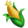 Corn × 2 → Sản xuất/nuôi: Chicken Basic ×2; Sản xuất/nuôi: VIP Chicken Basic ×2; Sản xuất/nuôi: Goose Basic ×2; Sản xuất/nuôi: Goose Basic ×4; Sugar (Windmill / Windmill Children) ×2; Prized Chicken Feed (Windmill / Windmill Children) ×2; … (+7) |
| Corn Crop | Lv 6 · tối đa 6 · xây 5 phút (300 giây) | Water × 1 | 2 phút (120 giây) | Corn × 2 → Sản xuất/nuôi: Chicken Basic ×2; Sản xuất/nuôi: VIP Chicken Basic ×2; Sản xuất/nuôi: Goose Basic ×2; Sản xuất/nuôi: Goose Basic ×4; Sugar (Windmill / Windmill Children) ×2; Prized Chicken Feed (Windmill / Windmill Children) ×2; … (+7) |
| Corn Crop | Lv 9 · tối đa 6 · xây 5 phút (300 giây) | Water × 1 | 2 phút (120 giây) | Corn × 2 → Sản xuất/nuôi: Chicken Basic ×2; Sản xuất/nuôi: VIP Chicken Basic ×2; Sản xuất/nuôi: Goose Basic ×2; Sản xuất/nuôi: Goose Basic ×4; Sugar (Windmill / Windmill Children) ×2; Prized Chicken Feed (Windmill / Windmill Children) ×2; … (+7) |
| Corn Crop | Lv 9 · tối đa 6 · xây 5 phút (300 giây) | Water × 1 | 2 phút (120 giây) | Corn × 2 → Sản xuất/nuôi: Chicken Basic ×2; Sản xuất/nuôi: VIP Chicken Basic ×2; Sản xuất/nuôi: Goose Basic ×2; Sản xuất/nuôi: Goose Basic ×4; Sugar (Windmill / Windmill Children) ×2; Prized Chicken Feed (Windmill / Windmill Children) ×2; … (+7) |
| Corn Crop | Lv 9 · tối đa 6 · xây 5 phút (300 giây) | Water × 1 | 2 phút (120 giây) | Corn × 2 → Sản xuất/nuôi: Chicken Basic ×2; Sản xuất/nuôi: VIP Chicken Basic ×2; Sản xuất/nuôi: Goose Basic ×2; Sản xuất/nuôi: Goose Basic ×4; Sugar (Windmill / Windmill Children) ×2; Prized Chicken Feed (Windmill / Windmill Children) ×2; … (+7) |
| Corn Crop | Lv 9 · tối đa 6 · xây 5 phút (300 giây) | Water × 1 | 2 phút (120 giây) | Corn × 2 → Sản xuất/nuôi: Chicken Basic ×2; Sản xuất/nuôi: VIP Chicken Basic ×2; Sản xuất/nuôi: Goose Basic ×2; Sản xuất/nuôi: Goose Basic ×4; Sugar (Windmill / Windmill Children) ×2; Prized Chicken Feed (Windmill / Windmill Children) ×2; … (+7) |
| Corn Crop Reward | Lv 10 · tối đa 1 · xây 5 phút (300 giây) | Water × 1 | 2 phút (120 giây) | Corn × 2 → Sản xuất/nuôi: Chicken Basic ×2; Sản xuất/nuôi: VIP Chicken Basic ×2; Sản xuất/nuôi: Goose Basic ×2; Sản xuất/nuôi: Goose Basic ×4; Sugar (Windmill / Windmill Children) ×2; Prized Chicken Feed (Windmill / Windmill Children) ×2; … (+7) |
| Corn Crop Garden | Lv 9 · tối đa 6 · xây 10 giây | Water × 1 | 4 phút (240 giây) | Corn × 4 → Sản xuất/nuôi: Chicken Basic ×2; Sản xuất/nuôi: VIP Chicken Basic ×2; Sản xuất/nuôi: Goose Basic ×2; Sản xuất/nuôi: Goose Basic ×4; Sugar (Windmill / Windmill Children) ×2; Prized Chicken Feed (Windmill / Windmill Children) ×2; … (+7) |
| Chicken Basic | Lv 7 · tối đa 6 · xây 4 giờ (14400 giây) | Corn × 2 | 4 phút (240 giây) | Egg × 2 → Strawberry Gelato Bono (Dairy) ×4; Carrot Cake (Pastry Oven) ×2; Blackberry Tart (Pastry Oven) ×4; Deviled Eggs (Stovetop) ×6; Mint Chip Cookies (Pastry Oven) ×7; Mac And Cheese (Dinner Oven) ×6; … (+16) |
| Chicken Basic | Lv 7 · tối đa 6 · xây 4 giờ (14400 giây) | Corn × 2 | 4 phút (240 giây) | Egg × 2 → Strawberry Gelato Bono (Dairy) ×4; Carrot Cake (Pastry Oven) ×2; Blackberry Tart (Pastry Oven) ×4; Deviled Eggs (Stovetop) ×6; Mint Chip Cookies (Pastry Oven) ×7; Mac And Cheese (Dinner Oven) ×6; … (+16) |
| Chicken Basic | Lv 7 · tối đa 6 · xây 4 giờ (14400 giây) | Corn × 2 | 4 phút (240 giây) | Egg × 2 → Strawberry Gelato Bono (Dairy) ×4; Carrot Cake (Pastry Oven) ×2; Blackberry Tart (Pastry Oven) ×4; Deviled Eggs (Stovetop) ×6; Mint Chip Cookies (Pastry Oven) ×7; Mac And Cheese (Dinner Oven) ×6; … (+16) |
| VIP Chicken Basic | Lv 7 · tối đa 1 · xây 4 giờ (14400 giây) | Corn × 2 | 4 phút (240 giây) | Egg × 2 → Strawberry Gelato Bono (Dairy) ×4; Carrot Cake (Pastry Oven) ×2; Blackberry Tart (Pastry Oven) ×4; Deviled Eggs (Stovetop) ×6; Mint Chip Cookies (Pastry Oven) ×7; Mac And Cheese (Dinner Oven) ×6; … (+16) |
| Carrot Crop | Lv 7 · tối đa 6 · xây 10 phút (600 giây) | Water × 1 | 4 phút (240 giây) | Carrot × 3 → Sản xuất/nuôi: Goat Basic ×2; Sản xuất/nuôi: VIP Goat Basic ×2; Sản xuất/nuôi: Pig Basic ×2; Sản xuất/nuôi: VIP Pig Basic ×2; Glazed Cranberry Carrots Bono (Dinner Oven) ×5; Carrot Cake (Pastry Oven) ×2; … (+11) |
| Carrot Crop | Lv 7 · tối đa 6 · xây 10 phút (600 giây) | Water × 1 | 4 phút (240 giây) | Carrot × 3 → Sản xuất/nuôi: Goat Basic ×2; Sản xuất/nuôi: VIP Goat Basic ×2; Sản xuất/nuôi: Pig Basic ×2; Sản xuất/nuôi: VIP Pig Basic ×2; Glazed Cranberry Carrots Bono (Dinner Oven) ×5; Carrot Cake (Pastry Oven) ×2; … (+11) |
| Carrot Crop | Lv 9 · tối đa 6 · xây 10 phút (600 giây) | Water × 1 | 4 phút (240 giây) | Carrot × 3 → Sản xuất/nuôi: Goat Basic ×2; Sản xuất/nuôi: VIP Goat Basic ×2; Sản xuất/nuôi: Pig Basic ×2; Sản xuất/nuôi: VIP Pig Basic ×2; Glazed Cranberry Carrots Bono (Dinner Oven) ×5; Carrot Cake (Pastry Oven) ×2; … (+11) |
| Carrot Crop | Lv 9 · tối đa 6 · xây 10 phút (600 giây) | Water × 1 | 4 phút (240 giây) | Carrot × 3 → Sản xuất/nuôi: Goat Basic ×2; Sản xuất/nuôi: VIP Goat Basic ×2; Sản xuất/nuôi: Pig Basic ×2; Sản xuất/nuôi: VIP Pig Basic ×2; Glazed Cranberry Carrots Bono (Dinner Oven) ×5; Carrot Cake (Pastry Oven) ×2; … (+11) |
| Carrot Crop | Lv 9 · tối đa 6 · xây 10 phút (600 giây) | Water × 1 | 4 phút (240 giây) | Carrot × 3 → Sản xuất/nuôi: Goat Basic ×2; Sản xuất/nuôi: VIP Goat Basic ×2; Sản xuất/nuôi: Pig Basic ×2; Sản xuất/nuôi: VIP Pig Basic ×2; Glazed Cranberry Carrots Bono (Dinner Oven) ×5; Carrot Cake (Pastry Oven) ×2; … (+11) |
| Carrot Crop | Lv 9 · tối đa 6 · xây 10 phút (600 giây) | Water × 1 | 4 phút (240 giây) | Carrot × 3 → Sản xuất/nuôi: Goat Basic ×2; Sản xuất/nuôi: VIP Goat Basic ×2; Sản xuất/nuôi: Pig Basic ×2; Sản xuất/nuôi: VIP Pig Basic ×2; Glazed Cranberry Carrots Bono (Dinner Oven) ×5; Carrot Cake (Pastry Oven) ×2; … (+11) |
| Strawberry Crop | Lv 9 · tối đa 6 · xây 8 giờ (28800 giây) | Water × 1 | 1 giờ (3600 giây) | Strawberry × 3 → Strawberry Gelato Bono (Dairy) ×4; Strawberry Shortcake (Pastry Oven) ×4; Strawberry Milk (Dairy) ×2; Strawberry Sundae (Dairy) ×1; Granola (Stovetop) ×4; Prized Chicken Feed (Windmill / Windmill Children) ×2; … (+5) |
| Strawberry Crop | Lv 9 · tối đa 6 · xây 8 giờ (28800 giây) | Water × 1 | 1 giờ (3600 giây) | Strawberry × 3 → Strawberry Gelato Bono (Dairy) ×4; Strawberry Shortcake (Pastry Oven) ×4; Strawberry Milk (Dairy) ×2; Strawberry Sundae (Dairy) ×1; Granola (Stovetop) ×4; Prized Chicken Feed (Windmill / Windmill Children) ×2; … (+5) |
| Strawberry Crop | Lv 9 · tối đa 6 · xây 8 giờ (28800 giây) | Water × 1 | 1 giờ (3600 giây) | Strawberry × 3 → Strawberry Gelato Bono (Dairy) ×4; Strawberry Shortcake (Pastry Oven) ×4; Strawberry Milk (Dairy) ×2; Strawberry Sundae (Dairy) ×1; Granola (Stovetop) ×4; Prized Chicken Feed (Windmill / Windmill Children) ×2; … (+5) |
| Strawberry Crop | Lv 9 · tối đa 6 · xây 8 giờ (28800 giây) | Water × 1 | 1 giờ (3600 giây) | Strawberry × 3 → Strawberry Gelato Bono (Dairy) ×4; Strawberry Shortcake (Pastry Oven) ×4; Strawberry Milk (Dairy) ×2; Strawberry Sundae (Dairy) ×1; Granola (Stovetop) ×4; Prized Chicken Feed (Windmill / Windmill Children) ×2; … (+5) |
| Strawberry Crop | Lv 9 · tối đa 6 · xây 8 giờ (28800 giây) | Water × 1 | 1 giờ (3600 giây) | Strawberry × 3 → Strawberry Gelato Bono (Dairy) ×4; Strawberry Shortcake (Pastry Oven) ×4; Strawberry Milk (Dairy) ×2; Strawberry Sundae (Dairy) ×1; Granola (Stovetop) ×4; Prized Chicken Feed (Windmill / Windmill Children) ×2; … (+5) |
| Strawberry Crop | Lv 9 · tối đa 6 · xây 8 giờ (28800 giây) | Water × 1 | 1 giờ (3600 giây) | Strawberry × 3 → Strawberry Gelato Bono (Dairy) ×4; Strawberry Shortcake (Pastry Oven) ×4; Strawberry Milk (Dairy) ×2; Strawberry Sundae (Dairy) ×1; Granola (Stovetop) ×4; Prized Chicken Feed (Windmill / Windmill Children) ×2; … (+5) |
| Strawberry Crop Event | Lv 9 · tối đa 1 · xây 8 giờ (28800 giây) | Water × 1 | 1 giờ (3600 giây) | Strawberry × 3 → Strawberry Gelato Bono (Dairy) ×4; Strawberry Shortcake (Pastry Oven) ×4; Strawberry Milk (Dairy) ×2; Strawberry Sundae (Dairy) ×1; Granola (Stovetop) ×4; Prized Chicken Feed (Windmill / Windmill Children) ×2; … (+5) |
| Strawberry Crop Children | Lv 9 · tối đa 6 · xây 10 giây | Water × 1 | 2 giờ (7200 giây) | Strawberry × 6 → Strawberry Gelato Bono (Dairy) ×4; Strawberry Shortcake (Pastry Oven) ×4; Strawberry Milk (Dairy) ×2; Strawberry Sundae (Dairy) ×1; Granola (Stovetop) ×4; Prized Chicken Feed (Windmill / Windmill Children) ×2; … (+5) |
| Goat Basic | Lv 10 · tối đa 6 · xây 6 giờ (21600 giây) | Carrot × 2 | 3 phút (180 giây) | 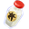 Goat Milk × 2 → Peach Yogurt (Dairy) ×1; Goat Cheese (Dairy) ×2; Farmers Soup (Stovetop) ×4; Lemon Yogurt (Dairy) ×4; Lemon Gelato (Dairy) ×4; Sea Urchin Ice Cream (Dairy) ×3 |
| Goat Basic | Lv 10 · tối đa 6 · xây 1 giây | Carrot × 2 | 3 phút (180 giây) | Goat Milk × 2 → Peach Yogurt (Dairy) ×1; Goat Cheese (Dairy) ×2; Farmers Soup (Stovetop) ×4; Lemon Yogurt (Dairy) ×4; Lemon Gelato (Dairy) ×4; Sea Urchin Ice Cream (Dairy) ×3 |
| Goat Basic | Lv 10 · tối đa 6 · xây 1 giây | Carrot × 2 | 3 phút (180 giây) | Goat Milk × 2 → Peach Yogurt (Dairy) ×1; Goat Cheese (Dairy) ×2; Farmers Soup (Stovetop) ×4; Lemon Yogurt (Dairy) ×4; Lemon Gelato (Dairy) ×4; Sea Urchin Ice Cream (Dairy) ×3 |
| VIP Goat Basic | Lv 10 · tối đa 1 · xây 4 giờ (14400 giây) | Carrot × 2 | 3 phút (180 giây) | Goat Milk × 2 → Peach Yogurt (Dairy) ×1; Goat Cheese (Dairy) ×2; Farmers Soup (Stovetop) ×4; Lemon Yogurt (Dairy) ×4; Lemon Gelato (Dairy) ×4; Sea Urchin Ice Cream (Dairy) ×3 |
| Peach Tree | Lv 10 · tối đa 6 · xây 30 phút (1800 giây) | Water × 1 | 4 giờ (14400 giây) | Peach × 2 → Peach Yogurt (Dairy) ×2; Prized Sheep Feed (Windmill / Windmill Children) ×1; Prized Horse Feed (Windmill / Windmill Children) ×1; MothersDay Piggy Boost (Stovetop) ×2; MothersDay Health Feed (Stovetop) ×3; MothersDay Pistachio Fruit Mix (Stovetop) ×4; … (+1) |
| Peach Tree | Lv 10 · tối đa 6 · xây 30 phút (1800 giây) | Water × 1 | 4 giờ (14400 giây) | Peach × 2 → Peach Yogurt (Dairy) ×2; Prized Sheep Feed (Windmill / Windmill Children) ×1; Prized Horse Feed (Windmill / Windmill Children) ×1; MothersDay Piggy Boost (Stovetop) ×2; MothersDay Health Feed (Stovetop) ×3; MothersDay Pistachio Fruit Mix (Stovetop) ×4; … (+1) |
| Peach Tree | Lv 10 · tối đa 6 · xây 30 phút (1800 giây) | Water × 1 | 4 giờ (14400 giây) | Peach × 2 → Peach Yogurt (Dairy) ×2; Prized Sheep Feed (Windmill / Windmill Children) ×1; Prized Horse Feed (Windmill / Windmill Children) ×1; MothersDay Piggy Boost (Stovetop) ×2; MothersDay Health Feed (Stovetop) ×3; MothersDay Pistachio Fruit Mix (Stovetop) ×4; … (+1) |
| Peach Tree | Lv 10 · tối đa 6 · xây 30 phút (1800 giây) | Water × 1 | 4 giờ (14400 giây) | Peach × 2 → Peach Yogurt (Dairy) ×2; Prized Sheep Feed (Windmill / Windmill Children) ×1; Prized Horse Feed (Windmill / Windmill Children) ×1; MothersDay Piggy Boost (Stovetop) ×2; MothersDay Health Feed (Stovetop) ×3; MothersDay Pistachio Fruit Mix (Stovetop) ×4; … (+1) |
| Peach Tree | Lv 10 · tối đa 6 · xây 30 phút (1800 giây) | Water × 1 | 4 giờ (14400 giây) | Peach × 2 → Peach Yogurt (Dairy) ×2; Prized Sheep Feed (Windmill / Windmill Children) ×1; Prized Horse Feed (Windmill / Windmill Children) ×1; MothersDay Piggy Boost (Stovetop) ×2; MothersDay Health Feed (Stovetop) ×3; MothersDay Pistachio Fruit Mix (Stovetop) ×4; … (+1) |
| Peach Tree | Lv 10 · tối đa 6 · xây 30 phút (1800 giây) | Water × 1 | 4 giờ (14400 giây) | Peach × 2 → Peach Yogurt (Dairy) ×2; Prized Sheep Feed (Windmill / Windmill Children) ×1; Prized Horse Feed (Windmill / Windmill Children) ×1; MothersDay Piggy Boost (Stovetop) ×2; MothersDay Health Feed (Stovetop) ×3; MothersDay Pistachio Fruit Mix (Stovetop) ×4; … (+1) |
| VIP Peach Tree | Lv 10 · tối đa 1 · xây 30 phút (1800 giây) | Water × 1 | 4 giờ (14400 giây) | Peach × 2 → Peach Yogurt (Dairy) ×2; Prized Sheep Feed (Windmill / Windmill Children) ×1; Prized Horse Feed (Windmill / Windmill Children) ×1; MothersDay Piggy Boost (Stovetop) ×2; MothersDay Health Feed (Stovetop) ×3; MothersDay Pistachio Fruit Mix (Stovetop) ×4; … (+1) |
| Tomato Crop | Lv 11 · tối đa 6 · xây 30 phút (1800 giây) | Water × 1 | 10 phút (600 giây) | Tomato × 3 → Sản xuất/nuôi: Turtle Basic ×6; Sản xuất/nuôi: Sheep Basic ×4; Sản xuất/nuôi: VIP Sheep Basic ×4; Farmers Soup (Stovetop) ×2; Stuffed Bass (Dinner Oven) ×3; Prized Sheep Feed (Windmill / Windmill Children) ×3; … (+12) |
| Tomato Crop | Lv 11 · tối đa 6 · xây 30 phút (1800 giây) | Water × 1 | 10 phút (600 giây) | Tomato × 3 → Sản xuất/nuôi: Turtle Basic ×6; Sản xuất/nuôi: Sheep Basic ×4; Sản xuất/nuôi: VIP Sheep Basic ×4; Farmers Soup (Stovetop) ×2; Stuffed Bass (Dinner Oven) ×3; Prized Sheep Feed (Windmill / Windmill Children) ×3; … (+12) |
| Tomato Crop | Lv 11 · tối đa 6 · xây 30 phút (1800 giây) | Water × 1 | 10 phút (600 giây) | Tomato × 3 → Sản xuất/nuôi: Turtle Basic ×6; Sản xuất/nuôi: Sheep Basic ×4; Sản xuất/nuôi: VIP Sheep Basic ×4; Farmers Soup (Stovetop) ×2; Stuffed Bass (Dinner Oven) ×3; Prized Sheep Feed (Windmill / Windmill Children) ×3; … (+12) |
| Tomato Crop | Lv 11 · tối đa 6 · xây 30 phút (1800 giây) | Water × 1 | 10 phút (600 giây) | Tomato × 3 → Sản xuất/nuôi: Turtle Basic ×6; Sản xuất/nuôi: Sheep Basic ×4; Sản xuất/nuôi: VIP Sheep Basic ×4; Farmers Soup (Stovetop) ×2; Stuffed Bass (Dinner Oven) ×3; Prized Sheep Feed (Windmill / Windmill Children) ×3; … (+12) |
| Tomato Crop | Lv 11 · tối đa 6 · xây 30 phút (1800 giây) | Water × 1 | 10 phút (600 giây) | Tomato × 3 → Sản xuất/nuôi: Turtle Basic ×6; Sản xuất/nuôi: Sheep Basic ×4; Sản xuất/nuôi: VIP Sheep Basic ×4; Farmers Soup (Stovetop) ×2; Stuffed Bass (Dinner Oven) ×3; Prized Sheep Feed (Windmill / Windmill Children) ×3; … (+12) |
| Tomato Crop | Lv 11 · tối đa 6 · xây 30 phút (1800 giây) | Water × 1 | 10 phút (600 giây) | Tomato × 3 → Sản xuất/nuôi: Turtle Basic ×6; Sản xuất/nuôi: Sheep Basic ×4; Sản xuất/nuôi: VIP Sheep Basic ×4; Farmers Soup (Stovetop) ×2; Stuffed Bass (Dinner Oven) ×3; Prized Sheep Feed (Windmill / Windmill Children) ×3; … (+12) |
| Potato Crop | Lv 13 · tối đa 6 · xây 30 phút (1800 giây) | Water × 1 | 30 phút (1800 giây) | 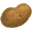 Potato × 2 → Pan Fries (Stovetop) ×3; Baked Potato (Dinner Oven) ×1; Prized Sheep Feed (Windmill / Windmill Children) ×2; Prized Pig Feed (Windmill / Windmill Children) ×2; Clam Chowder (Cove Kettle) ×2; Salmon Bisque (Cove Kettle) ×6; … (+8) |
| Potato Crop | Lv 13 · tối đa 6 · xây 30 phút (1800 giây) | Water × 1 | 30 phút (1800 giây) | Potato × 2 → Pan Fries (Stovetop) ×3; Baked Potato (Dinner Oven) ×1; Prized Sheep Feed (Windmill / Windmill Children) ×2; Prized Pig Feed (Windmill / Windmill Children) ×2; Clam Chowder (Cove Kettle) ×2; Salmon Bisque (Cove Kettle) ×6; … (+8) |
| Potato Crop | Lv 13 · tối đa 6 · xây 30 phút (1800 giây) | Water × 1 | 30 phút (1800 giây) | Potato × 2 → Pan Fries (Stovetop) ×3; Baked Potato (Dinner Oven) ×1; Prized Sheep Feed (Windmill / Windmill Children) ×2; Prized Pig Feed (Windmill / Windmill Children) ×2; Clam Chowder (Cove Kettle) ×2; Salmon Bisque (Cove Kettle) ×6; … (+8) |
| Potato Crop | Lv 13 · tối đa 6 · xây 30 phút (1800 giây) | Water × 1 | 30 phút (1800 giây) | Potato × 2 → Pan Fries (Stovetop) ×3; Baked Potato (Dinner Oven) ×1; Prized Sheep Feed (Windmill / Windmill Children) ×2; Prized Pig Feed (Windmill / Windmill Children) ×2; Clam Chowder (Cove Kettle) ×2; Salmon Bisque (Cove Kettle) ×6; … (+8) |
| Potato Crop | Lv 13 · tối đa 6 · xây 30 phút (1800 giây) | Water × 1 | 30 phút (1800 giây) | Potato × 2 → Pan Fries (Stovetop) ×3; Baked Potato (Dinner Oven) ×1; Prized Sheep Feed (Windmill / Windmill Children) ×2; Prized Pig Feed (Windmill / Windmill Children) ×2; Clam Chowder (Cove Kettle) ×2; Salmon Bisque (Cove Kettle) ×6; … (+8) |
| Potato Crop | Lv 13 · tối đa 6 · xây 30 phút (1800 giây) | Water × 1 | 30 phút (1800 giây) | Potato × 2 → Pan Fries (Stovetop) ×3; Baked Potato (Dinner Oven) ×1; Prized Sheep Feed (Windmill / Windmill Children) ×2; Prized Pig Feed (Windmill / Windmill Children) ×2; Clam Chowder (Cove Kettle) ×2; Salmon Bisque (Cove Kettle) ×6; … (+8) |
| Sheep Basic | Lv 14 · tối đa 6 · xây 8 giờ (28800 giây) | Tomato × 4 | 30 phút (1800 giây) | Wool × 3 → Socks (Loom) ×4; Trousers (Loom) ×6; Blanket (Loom) ×3; Jacket (Loom) ×3; Yarn Doll (Dollmaking Table) ×4; Raggety Doll (Dollmaking Table) ×2; … (+15) |
| Sheep Basic | Lv 14 · tối đa 6 · xây 8 giờ (28800 giây) | Tomato × 4 | 30 phút (1800 giây) | Wool × 3 → Socks (Loom) ×4; Trousers (Loom) ×6; Blanket (Loom) ×3; Jacket (Loom) ×3; Yarn Doll (Dollmaking Table) ×4; Raggety Doll (Dollmaking Table) ×2; … (+15) |
| Sheep Basic | Lv 14 · tối đa 6 · xây 8 giờ (28800 giây) | Tomato × 4 | 30 phút (1800 giây) | Wool × 3 → Socks (Loom) ×4; Trousers (Loom) ×6; Blanket (Loom) ×3; Jacket (Loom) ×3; Yarn Doll (Dollmaking Table) ×4; Raggety Doll (Dollmaking Table) ×2; … (+15) |
| VIP Sheep Basic | Lv 14 · tối đa 1 · xây 8 giờ (28800 giây) | Tomato × 4 | 30 phút (1800 giây) | Wool × 3 → Socks (Loom) ×4; Trousers (Loom) ×6; Blanket (Loom) ×3; Jacket (Loom) ×3; Yarn Doll (Dollmaking Table) ×4; Raggety Doll (Dollmaking Table) ×2; … (+15) |
| Beehive | Lv 17 · tối đa 6 · xây 1 giờ (3600 giây) | Water × 1 | 45 phút (2700 giây) | Honeycomb × 3 → Glazed Cranberry Carrots Bono (Dinner Oven) ×4; Honey Butter (Dairy) ×2; Granola (Stovetop) ×1; Beeswax Candle (Craft Workstation) ×4; Prized Goat Feed (Windmill / Windmill Children) ×2; MothersDay Honey Sheep Feed (Dairy) ×6; … (+1) |
| Beehive | Lv 17 · tối đa 6 · xây 1 giờ (3600 giây) | Water × 1 | 45 phút (2700 giây) | Honeycomb × 3 → Glazed Cranberry Carrots Bono (Dinner Oven) ×4; Honey Butter (Dairy) ×2; Granola (Stovetop) ×1; Beeswax Candle (Craft Workstation) ×4; Prized Goat Feed (Windmill / Windmill Children) ×2; MothersDay Honey Sheep Feed (Dairy) ×6; … (+1) |
| Beehive | Lv 17 · tối đa 6 · xây 1 giờ (3600 giây) | Water × 1 | 45 phút (2700 giây) | Honeycomb × 3 → Glazed Cranberry Carrots Bono (Dinner Oven) ×4; Honey Butter (Dairy) ×2; Granola (Stovetop) ×1; Beeswax Candle (Craft Workstation) ×4; Prized Goat Feed (Windmill / Windmill Children) ×2; MothersDay Honey Sheep Feed (Dairy) ×6; … (+1) |
| Beehive | Lv 17 · tối đa 6 · xây 1 giờ (3600 giây) | Water × 1 | 45 phút (2700 giây) | Honeycomb × 3 → Glazed Cranberry Carrots Bono (Dinner Oven) ×4; Honey Butter (Dairy) ×2; Granola (Stovetop) ×1; Beeswax Candle (Craft Workstation) ×4; Prized Goat Feed (Windmill / Windmill Children) ×2; MothersDay Honey Sheep Feed (Dairy) ×6; … (+1) |
| Beehive | Lv 17 · tối đa 6 · xây 1 giờ (3600 giây) | Water × 1 | 45 phút (2700 giây) | Honeycomb × 3 → Glazed Cranberry Carrots Bono (Dinner Oven) ×4; Honey Butter (Dairy) ×2; Granola (Stovetop) ×1; Beeswax Candle (Craft Workstation) ×4; Prized Goat Feed (Windmill / Windmill Children) ×2; MothersDay Honey Sheep Feed (Dairy) ×6; … (+1) |
| Beehive | Lv 17 · tối đa 6 · xây 1 giờ (3600 giây) | Water × 1 | 45 phút (2700 giây) | Honeycomb × 3 → Glazed Cranberry Carrots Bono (Dinner Oven) ×4; Honey Butter (Dairy) ×2; Granola (Stovetop) ×1; Beeswax Candle (Craft Workstation) ×4; Prized Goat Feed (Windmill / Windmill Children) ×2; MothersDay Honey Sheep Feed (Dairy) ×6; … (+1) |
| VIP Beehive | Lv 17 · tối đa 1 · xây 1 giờ (3600 giây) | Water × 1 | 45 phút (2700 giây) | Honeycomb × 3 → Glazed Cranberry Carrots Bono (Dinner Oven) ×4; Honey Butter (Dairy) ×2; Granola (Stovetop) ×1; Beeswax Candle (Craft Workstation) ×4; Prized Goat Feed (Windmill / Windmill Children) ×2; MothersDay Honey Sheep Feed (Dairy) ×6; … (+1) |
| Pig Basic | Lv 20 · tối đa 6 · xây 8 giờ (28800 giây) | Carrot × 2 | 3 phút (180 giây) | 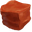 Clay × 2 → Ale Mug (Craft Workstation) ×6; Lemon Scented Candle (Craft Workstation) ×3; Ornate Stein (Craft Workstation) ×2; Porcelain Doll (Dollmaking Table) ×6; Whistle (Craft Workstation) ×6 |
| Pig Basic | Lv 20 · tối đa 6 · xây 8 giờ (28800 giây) | Carrot × 2 | 3 phút (180 giây) | Clay × 2 → Ale Mug (Craft Workstation) ×6; Lemon Scented Candle (Craft Workstation) ×3; Ornate Stein (Craft Workstation) ×2; Porcelain Doll (Dollmaking Table) ×6; Whistle (Craft Workstation) ×6 |
| Pig Basic | Lv 20 · tối đa 6 · xây 8 giờ (28800 giây) | Carrot × 2 | 3 phút (180 giây) | Clay × 2 → Ale Mug (Craft Workstation) ×6; Lemon Scented Candle (Craft Workstation) ×3; Ornate Stein (Craft Workstation) ×2; Porcelain Doll (Dollmaking Table) ×6; Whistle (Craft Workstation) ×6 |
| VIP Pig Basic | Lv 20 · tối đa 1 · xây 8 giờ (28800 giây) | Carrot × 2 | 3 phút (180 giây) | Clay × 2 → Ale Mug (Craft Workstation) ×6; Lemon Scented Candle (Craft Workstation) ×3; Ornate Stein (Craft Workstation) ×2; Porcelain Doll (Dollmaking Table) ×6; Whistle (Craft Workstation) ×6 |
| Lemon Tree | Lv 21 · tối đa 6 · xây 8 giờ (28800 giây) | Water × 1 | 10 giờ (36000 giây) | Lemon × 3 → Lemon Yogurt (Dairy) ×2; Lemon Scented Candle (Craft Workstation) ×5; Lemonade (Juice Maker) ×5; Shrimp Skewers (Beachfront Grill) ×2; Lemon Zest (Dairy) ×6; Tangy Ceviche (Beachfront Grill) ×3; … (+1) |
| Lemon Tree | Lv 21 · tối đa 6 · xây 8 giờ (28800 giây) | Water × 1 | 10 giờ (36000 giây) | Lemon × 3 → Lemon Yogurt (Dairy) ×2; Lemon Scented Candle (Craft Workstation) ×5; Lemonade (Juice Maker) ×5; Shrimp Skewers (Beachfront Grill) ×2; Lemon Zest (Dairy) ×6; Tangy Ceviche (Beachfront Grill) ×3; … (+1) |
| Lemon Tree | Lv 21 · tối đa 6 · xây 8 giờ (28800 giây) | Water × 1 | 10 giờ (36000 giây) | Lemon × 3 → Lemon Yogurt (Dairy) ×2; Lemon Scented Candle (Craft Workstation) ×5; Lemonade (Juice Maker) ×5; Shrimp Skewers (Beachfront Grill) ×2; Lemon Zest (Dairy) ×6; Tangy Ceviche (Beachfront Grill) ×3; … (+1) |
| Lemon Tree | Lv 21 · tối đa 6 · xây 8 giờ (28800 giây) | Water × 1 | 10 giờ (36000 giây) | Lemon × 3 → Lemon Yogurt (Dairy) ×2; Lemon Scented Candle (Craft Workstation) ×5; Lemonade (Juice Maker) ×5; Shrimp Skewers (Beachfront Grill) ×2; Lemon Zest (Dairy) ×6; Tangy Ceviche (Beachfront Grill) ×3; … (+1) |
| Lemon Tree | Lv 21 · tối đa 6 · xây 8 giờ (28800 giây) | Water × 1 | 10 giờ (36000 giây) | Lemon × 3 → Lemon Yogurt (Dairy) ×2; Lemon Scented Candle (Craft Workstation) ×5; Lemonade (Juice Maker) ×5; Shrimp Skewers (Beachfront Grill) ×2; Lemon Zest (Dairy) ×6; Tangy Ceviche (Beachfront Grill) ×3; … (+1) |
| Lemon Tree | Lv 21 · tối đa 6 · xây 8 giờ (28800 giây) | Water × 1 | 10 giờ (36000 giây) | Lemon × 3 → Lemon Yogurt (Dairy) ×2; Lemon Scented Candle (Craft Workstation) ×5; Lemonade (Juice Maker) ×5; Shrimp Skewers (Beachfront Grill) ×2; Lemon Zest (Dairy) ×6; Tangy Ceviche (Beachfront Grill) ×3; … (+1) |
| VIP Lemon Tree | Lv 21 · tối đa 1 · xây 8 giờ (28800 giây) | Water × 1 | 10 giờ (36000 giây) | Lemon × 3 → Lemon Yogurt (Dairy) ×2; Lemon Scented Candle (Craft Workstation) ×5; Lemonade (Juice Maker) ×5; Shrimp Skewers (Beachfront Grill) ×2; Lemon Zest (Dairy) ×6; Tangy Ceviche (Beachfront Grill) ×3; … (+1) |
| Event011 Lemon Tree | Lv 21 · tối đa 1 · xây 8 giờ (28800 giây) | Water × 1 | 10 giờ (36000 giây) | Lemon × 3 → Lemon Yogurt (Dairy) ×2; Lemon Scented Candle (Craft Workstation) ×5; Lemonade (Juice Maker) ×5; Shrimp Skewers (Beachfront Grill) ×2; Lemon Zest (Dairy) ×6; Tangy Ceviche (Beachfront Grill) ×3; … (+1) |
| Blueberry Crop | Lv 22 · tối đa 6 · xây 8 giờ (28800 giây) | Water × 1 | 4 giờ (14400 giây) | Blueberries × 5 → Blueberry Granola Muffin (Pastry Oven) ×3; Blueberry Pancakes (Stovetop) ×2; Gelato (Dairy) ×4; Blueberry Jam (Juice Maker) ×5; Cove Punch (Dairy) ×3 |
| Blueberry Crop | Lv 22 · tối đa 6 · xây 8 giờ (28800 giây) | Water × 1 | 4 giờ (14400 giây) | Blueberries × 5 → Blueberry Granola Muffin (Pastry Oven) ×3; Blueberry Pancakes (Stovetop) ×2; Gelato (Dairy) ×4; Blueberry Jam (Juice Maker) ×5; Cove Punch (Dairy) ×3 |
| Blueberry Crop | Lv 22 · tối đa 6 · xây 8 giờ (28800 giây) | Water × 1 | 4 giờ (14400 giây) | Blueberries × 5 → Blueberry Granola Muffin (Pastry Oven) ×3; Blueberry Pancakes (Stovetop) ×2; Gelato (Dairy) ×4; Blueberry Jam (Juice Maker) ×5; Cove Punch (Dairy) ×3 |
| Blueberry Crop | Lv 22 · tối đa 6 · xây 8 giờ (28800 giây) | Water × 1 | 4 giờ (14400 giây) | Blueberries × 5 → Blueberry Granola Muffin (Pastry Oven) ×3; Blueberry Pancakes (Stovetop) ×2; Gelato (Dairy) ×4; Blueberry Jam (Juice Maker) ×5; Cove Punch (Dairy) ×3 |
| Blueberry Crop | Lv 22 · tối đa 6 · xây 8 giờ (28800 giây) | Water × 1 | 4 giờ (14400 giây) | Blueberries × 5 → Blueberry Granola Muffin (Pastry Oven) ×3; Blueberry Pancakes (Stovetop) ×2; Gelato (Dairy) ×4; Blueberry Jam (Juice Maker) ×5; Cove Punch (Dairy) ×3 |
| Blueberry Crop | Lv 22 · tối đa 6 · xây 8 giờ (28800 giây) | Water × 1 | 4 giờ (14400 giây) | Blueberries × 5 → Blueberry Granola Muffin (Pastry Oven) ×3; Blueberry Pancakes (Stovetop) ×2; Gelato (Dairy) ×4; Blueberry Jam (Juice Maker) ×5; Cove Punch (Dairy) ×3 |
| Pear Tree | Lv 25 · tối đa 6 · xây 1 giờ (3600 giây) | Water × 1 | 8 giờ (28800 giây) | 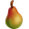 Pear × 4 → Pear Juice (Juice Maker) ×5; Pear Preserves (Juice Maker) ×3; Dried Fruit (Dinner Oven) ×2 |
| Pear Tree | Lv 25 · tối đa 6 · xây 1 giờ (3600 giây) | Water × 1 | 8 giờ (28800 giây) | Pear × 4 → Pear Juice (Juice Maker) ×5; Pear Preserves (Juice Maker) ×3; Dried Fruit (Dinner Oven) ×2 |
| Pear Tree | Lv 25 · tối đa 6 · xây 1 giờ (3600 giây) | Water × 1 | 8 giờ (28800 giây) | Pear × 4 → Pear Juice (Juice Maker) ×5; Pear Preserves (Juice Maker) ×3; Dried Fruit (Dinner Oven) ×2 |
| Pear Tree | Lv 25 · tối đa 6 · xây 1 giờ (3600 giây) | Water × 1 | 8 giờ (28800 giây) | Pear × 4 → Pear Juice (Juice Maker) ×5; Pear Preserves (Juice Maker) ×3; Dried Fruit (Dinner Oven) ×2 |
| Pear Tree | Lv 25 · tối đa 6 · xây 1 giờ (3600 giây) | Water × 1 | 8 giờ (28800 giây) | Pear × 4 → Pear Juice (Juice Maker) ×5; Pear Preserves (Juice Maker) ×3; Dried Fruit (Dinner Oven) ×2 |
| Pear Tree | Lv 25 · tối đa 6 · xây 1 giờ (3600 giây) | Water × 1 | 8 giờ (28800 giây) | Pear × 4 → Pear Juice (Juice Maker) ×5; Pear Preserves (Juice Maker) ×3; Dried Fruit (Dinner Oven) ×2 |
| VIP Pear Tree | Lv 25 · tối đa 1 · xây 1 giờ (3600 giây) | Water × 1 | 8 giờ (28800 giây) | Pear × 4 → Pear Juice (Juice Maker) ×5; Pear Preserves (Juice Maker) ×3; Dried Fruit (Dinner Oven) ×2 |
| Red Grape Crop | Lv 26 · tối đa 6 · xây 2 giờ (7200 giây) | Water × 1 | 30 phút (1800 giây) | Red Grapes × 4 → Grape Juice (Juice Maker) ×2; Pinot Noir (Winery) ×6; Rose Wine (Winery) ×2; Dried Fruit (Dinner Oven) ×6 |
| Red Grape Crop | Lv 26 · tối đa 6 · xây 2 giờ (7200 giây) | Water × 1 | 30 phút (1800 giây) | Red Grapes × 4 → Grape Juice (Juice Maker) ×2; Pinot Noir (Winery) ×6; Rose Wine (Winery) ×2; Dried Fruit (Dinner Oven) ×6 |
| Red Grape Crop | Lv 26 · tối đa 6 · xây 2 giờ (7200 giây) | Water × 1 | 30 phút (1800 giây) | Red Grapes × 4 → Grape Juice (Juice Maker) ×2; Pinot Noir (Winery) ×6; Rose Wine (Winery) ×2; Dried Fruit (Dinner Oven) ×6 |
| Red Grape Crop | Lv 26 · tối đa 6 · xây 2 giờ (7200 giây) | Water × 1 | 30 phút (1800 giây) | Red Grapes × 4 → Grape Juice (Juice Maker) ×2; Pinot Noir (Winery) ×6; Rose Wine (Winery) ×2; Dried Fruit (Dinner Oven) ×6 |
| Red Grape Crop | Lv 26 · tối đa 6 · xây 2 giờ (7200 giây) | Water × 1 | 30 phút (1800 giây) | Red Grapes × 4 → Grape Juice (Juice Maker) ×2; Pinot Noir (Winery) ×6; Rose Wine (Winery) ×2; Dried Fruit (Dinner Oven) ×6 |
| Red Grape Crop | Lv 26 · tối đa 6 · xây 2 giờ (7200 giây) | Water × 1 | 30 phút (1800 giây) | Red Grapes × 4 → Grape Juice (Juice Maker) ×2; Pinot Noir (Winery) ×6; Rose Wine (Winery) ×2; Dried Fruit (Dinner Oven) ×6 |
| White Grape Crop | Lv 28 · tối đa 6 · xây 12 giờ (43200 giây) | Water × 1 | 1 giờ (3600 giây) | White Grapes × 5 → Chardonnay (Winery) ×3; Rose Wine (Winery) ×2; Champagne (Winery) ×6; Cove Punch (Dairy) ×4 |
| White Grape Crop | Lv 28 · tối đa 6 · xây 12 giờ (43200 giây) | Water × 1 | 1 giờ (3600 giây) | White Grapes × 5 → Chardonnay (Winery) ×3; Rose Wine (Winery) ×2; Champagne (Winery) ×6; Cove Punch (Dairy) ×4 |
| White Grape Crop | Lv 28 · tối đa 6 · xây 12 giờ (43200 giây) | Water × 1 | 1 giờ (3600 giây) | White Grapes × 5 → Chardonnay (Winery) ×3; Rose Wine (Winery) ×2; Champagne (Winery) ×6; Cove Punch (Dairy) ×4 |
| White Grape Crop | Lv 28 · tối đa 6 · xây 12 giờ (43200 giây) | Water × 1 | 1 giờ (3600 giây) | White Grapes × 5 → Chardonnay (Winery) ×3; Rose Wine (Winery) ×2; Champagne (Winery) ×6; Cove Punch (Dairy) ×4 |
| White Grape Crop | Lv 28 · tối đa 6 · xây 12 giờ (43200 giây) | Water × 1 | 1 giờ (3600 giây) | White Grapes × 5 → Chardonnay (Winery) ×3; Rose Wine (Winery) ×2; Champagne (Winery) ×6; Cove Punch (Dairy) ×4 |
| White Grape Crop | Lv 28 · tối đa 6 · xây 12 giờ (43200 giây) | Water × 1 | 1 giờ (3600 giây) | White Grapes × 5 → Chardonnay (Winery) ×3; Rose Wine (Winery) ×2; Champagne (Winery) ×6; Cove Punch (Dairy) ×4 |
| Crab Trap | Lv 31 · tối đa 6 · xây 2 giờ (7200 giây) | coin × 10 | 5 phút (300 giây) | Crab × 2 → Sản xuất/nuôi: Dolphin Basic ×6; Crab Cakes (Beachfront Grill) ×4; Cajun Crab (Cove Kettle) ×4; Seafood Creole (Cove Kettle) ×3; Crab Souffle (Dinner Oven) ×5 |
| Crab Trap | Lv 31 · tối đa 6 · xây 2 giờ (7200 giây) | coin × 10 | 5 phút (300 giây) | Crab × 2 → Sản xuất/nuôi: Dolphin Basic ×6; Crab Cakes (Beachfront Grill) ×4; Cajun Crab (Cove Kettle) ×4; Seafood Creole (Cove Kettle) ×3; Crab Souffle (Dinner Oven) ×5 |
| Crab Trap | Lv 31 · tối đa 6 · xây 2 giờ (7200 giây) | coin × 10 | 5 phút (300 giây) | Crab × 2 → Sản xuất/nuôi: Dolphin Basic ×6; Crab Cakes (Beachfront Grill) ×4; Cajun Crab (Cove Kettle) ×4; Seafood Creole (Cove Kettle) ×3; Crab Souffle (Dinner Oven) ×5 |
| Crab Trap | Lv 31 · tối đa 6 · xây 2 giờ (7200 giây) | coin × 10 | 5 phút (300 giây) | Crab × 2 → Sản xuất/nuôi: Dolphin Basic ×6; Crab Cakes (Beachfront Grill) ×4; Cajun Crab (Cove Kettle) ×4; Seafood Creole (Cove Kettle) ×3; Crab Souffle (Dinner Oven) ×5 |
| Crab Trap | Lv 31 · tối đa 6 · xây 2 giờ (7200 giây) | coin × 10 | 5 phút (300 giây) | Crab × 2 → Sản xuất/nuôi: Dolphin Basic ×6; Crab Cakes (Beachfront Grill) ×4; Cajun Crab (Cove Kettle) ×4; Seafood Creole (Cove Kettle) ×3; Crab Souffle (Dinner Oven) ×5 |
| Crab Trap | Lv 31 · tối đa 6 · xây 2 giờ (7200 giây) | coin × 10 | 5 phút (300 giây) | Crab × 2 → Sản xuất/nuôi: Dolphin Basic ×6; Crab Cakes (Beachfront Grill) ×4; Cajun Crab (Cove Kettle) ×4; Seafood Creole (Cove Kettle) ×3; Crab Souffle (Dinner Oven) ×5 |
| Mixed Pepper Crop | Lv 32 · tối đa 6 · xây 12 giờ (43200 giây) | Water × 1 | 5 phút (300 giây) | Mixed Peppers × 5 → Pepper Poppers (Beachfront Grill) ×8; Cajun Crab (Cove Kettle) ×5; Shrimp Gumbo (Cove Kettle) ×7; Krill Salad (Stovetop) ×10 |
| Mixed Pepper Crop | Lv 32 · tối đa 6 · xây 12 giờ (43200 giây) | Water × 1 | 5 phút (300 giây) | Mixed Peppers × 5 → Pepper Poppers (Beachfront Grill) ×8; Cajun Crab (Cove Kettle) ×5; Shrimp Gumbo (Cove Kettle) ×7; Krill Salad (Stovetop) ×10 |
| Mixed Pepper Crop | Lv 32 · tối đa 6 · xây 12 giờ (43200 giây) | Water × 1 | 5 phút (300 giây) | Mixed Peppers × 5 → Pepper Poppers (Beachfront Grill) ×8; Cajun Crab (Cove Kettle) ×5; Shrimp Gumbo (Cove Kettle) ×7; Krill Salad (Stovetop) ×10 |
| Mixed Pepper Crop | Lv 32 · tối đa 6 · xây 12 giờ (43200 giây) | Water × 1 | 5 phút (300 giây) | Mixed Peppers × 5 → Pepper Poppers (Beachfront Grill) ×8; Cajun Crab (Cove Kettle) ×5; Shrimp Gumbo (Cove Kettle) ×7; Krill Salad (Stovetop) ×10 |
| Mixed Pepper Crop | Lv 32 · tối đa 6 · xây 12 giờ (43200 giây) | Water × 1 | 5 phút (300 giây) | Mixed Peppers × 5 → Pepper Poppers (Beachfront Grill) ×8; Cajun Crab (Cove Kettle) ×5; Shrimp Gumbo (Cove Kettle) ×7; Krill Salad (Stovetop) ×10 |
| Mixed Pepper Crop | Lv 32 · tối đa 6 · xây 12 giờ (43200 giây) | Water × 1 | 5 phút (300 giây) | Mixed Peppers × 5 → Pepper Poppers (Beachfront Grill) ×8; Cajun Crab (Cove Kettle) ×5; Shrimp Gumbo (Cove Kettle) ×7; Krill Salad (Stovetop) ×10 |
| Shrimp Pot | Lv 33 · tối đa 6 · xây 12 giờ (43200 giây) | coin × 10 | 10 phút (600 giây) | Shrimp × 5 → Sản xuất/nuôi: Sealion Basic ×8; Shrimp Skewers (Beachfront Grill) ×4; Shrimp Gumbo (Cove Kettle) ×3; Fish Sauce (Dairy) ×3; Shrimp and Spinach (Dinner Oven) ×10; Shrimp Pasta (Stovetop) ×8 |
| Shrimp Pot | Lv 33 · tối đa 6 · xây 12 giờ (43200 giây) | coin × 10 | 10 phút (600 giây) | Shrimp × 5 → Sản xuất/nuôi: Sealion Basic ×8; Shrimp Skewers (Beachfront Grill) ×4; Shrimp Gumbo (Cove Kettle) ×3; Fish Sauce (Dairy) ×3; Shrimp and Spinach (Dinner Oven) ×10; Shrimp Pasta (Stovetop) ×8 |
| Shrimp Pot | Lv 33 · tối đa 6 · xây 12 giờ (43200 giây) | coin × 10 | 10 phút (600 giây) | Shrimp × 5 → Sản xuất/nuôi: Sealion Basic ×8; Shrimp Skewers (Beachfront Grill) ×4; Shrimp Gumbo (Cove Kettle) ×3; Fish Sauce (Dairy) ×3; Shrimp and Spinach (Dinner Oven) ×10; Shrimp Pasta (Stovetop) ×8 |
| Shrimp Pot | Lv 33 · tối đa 6 · xây 12 giờ (43200 giây) | coin × 10 | 10 phút (600 giây) | Shrimp × 5 → Sản xuất/nuôi: Sealion Basic ×8; Shrimp Skewers (Beachfront Grill) ×4; Shrimp Gumbo (Cove Kettle) ×3; Fish Sauce (Dairy) ×3; Shrimp and Spinach (Dinner Oven) ×10; Shrimp Pasta (Stovetop) ×8 |
| Shrimp Pot | Lv 33 · tối đa 6 · xây 12 giờ (43200 giây) | coin × 10 | 10 phút (600 giây) | Shrimp × 5 → Sản xuất/nuôi: Sealion Basic ×8; Shrimp Skewers (Beachfront Grill) ×4; Shrimp Gumbo (Cove Kettle) ×3; Fish Sauce (Dairy) ×3; Shrimp and Spinach (Dinner Oven) ×10; Shrimp Pasta (Stovetop) ×8 |
| Shrimp Pot | Lv 33 · tối đa 6 · xây 12 giờ (43200 giây) | coin × 10 | 10 phút (600 giây) | Shrimp × 5 → Sản xuất/nuôi: Sealion Basic ×8; Shrimp Skewers (Beachfront Grill) ×4; Shrimp Gumbo (Cove Kettle) ×3; Fish Sauce (Dairy) ×3; Shrimp and Spinach (Dinner Oven) ×10; Shrimp Pasta (Stovetop) ×8 |
| Goose Basic | Lv 10 · tối đa 1 · xây 4 giờ (14400 giây) | Corn × 2 | 8 phút (480 giây) | Egg × 4 → Strawberry Gelato Bono (Dairy) ×4; Carrot Cake (Pastry Oven) ×2; Blackberry Tart (Pastry Oven) ×4; Deviled Eggs (Stovetop) ×6; Mint Chip Cookies (Pastry Oven) ×7; Mac And Cheese (Dinner Oven) ×6; … (+16) |
| Goose Basic | Lv 32 · tối đa 1 · xây 4 giờ (14400 giây) | Corn × 4 | 4 phút (240 giây) | Egg × 4 → Strawberry Gelato Bono (Dairy) ×4; Carrot Cake (Pastry Oven) ×2; Blackberry Tart (Pastry Oven) ×4; Deviled Eggs (Stovetop) ×6; Mint Chip Cookies (Pastry Oven) ×7; Mac And Cheese (Dinner Oven) ×6; … (+16) |
| Rainbow | Lv 14 · tối đa 1 · xây 3 giây | coin × | 24 giờ (86400 giây) | coin (cấu hình loot riêng/chưa đọc ra lượng cố định) |
| SpecialSeedDelivery | Lv 14 · tối đa 1 · xây 3 giây | coin × | 24 giờ (86400 giây) | speedseed PowerPin × 3 |
| KeyMaker | Lv 10 · tối đa 1 · xây 1 giây | Water × 1 | 24 giờ (86400 giây) | key × 6 → ZooTokenStamp Fair (CountyFair 01) ×40; Card Collection Pack 1 star Fair (CountyFair 01) ×10; Card Collection Pack 2 star Fair (CountyFair 01) ×20; Card Collection Pack 3 star Fair (CountyFair 01) ×30; Card Collection Pack 4 star Fair (CountyFair 01) ×40; Card Collection Pack 5 star Fair (CountyFair 01) ×50 |
| Spinach Water Crop | Lv 38 · tối đa 2 · xây 3 giây | Mineral × 1 | 1 giờ (3600 giây) | Water Spinach × 2 (có biểu thức điều kiện) → Krill Fries (Stovetop) ×2; Spinach Bread (Pastry Oven) ×2; Spinach Salad (Stovetop) ×2; Spinach Caesar (Stovetop) ×2; Trout and Wilted Spinach (Dinner Oven) ×1; Shrimp and Spinach (Dinner Oven) ×2; … (+1) |
| Spinach Water Crop | Lv 38 · tối đa 2 · xây 8 giờ (28800 giây) | Mineral × 1 | 1 giờ (3600 giây) | Water Spinach × 2 (có biểu thức điều kiện) → Krill Fries (Stovetop) ×2; Spinach Bread (Pastry Oven) ×2; Spinach Salad (Stovetop) ×2; Spinach Caesar (Stovetop) ×2; Trout and Wilted Spinach (Dinner Oven) ×1; Shrimp and Spinach (Dinner Oven) ×2; … (+1) |
| Spinach Water Crop | Lv 38 · tối đa 2 · xây 8 giờ (28800 giây) | Mineral × 1 | 1 giờ (3600 giây) | Water Spinach × 2 (có biểu thức điều kiện) → Krill Fries (Stovetop) ×2; Spinach Bread (Pastry Oven) ×2; Spinach Salad (Stovetop) ×2; Spinach Caesar (Stovetop) ×2; Trout and Wilted Spinach (Dinner Oven) ×1; Shrimp and Spinach (Dinner Oven) ×2; … (+1) |
| Spinach Water Crop | Lv 38 · tối đa 2 · xây 8 giờ (28800 giây) | Mineral × 1 | 1 giờ (3600 giây) | Water Spinach × 2 (có biểu thức điều kiện) → Krill Fries (Stovetop) ×2; Spinach Bread (Pastry Oven) ×2; Spinach Salad (Stovetop) ×2; Spinach Caesar (Stovetop) ×2; Trout and Wilted Spinach (Dinner Oven) ×1; Shrimp and Spinach (Dinner Oven) ×2; … (+1) |
| Spinach Water Crop | Lv 38 · tối đa 2 · xây 8 giờ (28800 giây) | Mineral × 1 | 1 giờ (3600 giây) | Water Spinach × 2 (có biểu thức điều kiện) → Krill Fries (Stovetop) ×2; Spinach Bread (Pastry Oven) ×2; Spinach Salad (Stovetop) ×2; Spinach Caesar (Stovetop) ×2; Trout and Wilted Spinach (Dinner Oven) ×1; Shrimp and Spinach (Dinner Oven) ×2; … (+1) |
| Spinach Water Crop | Lv 38 · tối đa 2 · xây 8 giờ (28800 giây) | Mineral × 1 | 1 giờ (3600 giây) | Water Spinach × 2 (có biểu thức điều kiện) → Krill Fries (Stovetop) ×2; Spinach Bread (Pastry Oven) ×2; Spinach Salad (Stovetop) ×2; Spinach Caesar (Stovetop) ×2; Trout and Wilted Spinach (Dinner Oven) ×1; Shrimp and Spinach (Dinner Oven) ×2; … (+1) |
| Black Rice Water Crop | Lv 38 · tối đa 2 · xây 10 giờ (36000 giây) | Mineral × 1 | 25 phút (1500 giây) | 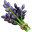 Black Rice × 2 (có biểu thức điều kiện) → Spinach Salad (Stovetop) ×2; Black Rice Sushi (Beachfront Grill) ×1; Black Rice Risotto (Beachfront Grill) ×1; Black Veggie Risotto (Beachfront Grill) ×1; Black Rice Pudding (Dairy) ×1; Black Rice and Salmon (Beachfront Grill) ×2; … (+2) |
| Black Rice Water Crop | Lv 38 · tối đa 2 · xây 12 giờ (43200 giây) | Mineral × 1 | 25 phút (1500 giây) | Black Rice × 2 (có biểu thức điều kiện) → Spinach Salad (Stovetop) ×2; Black Rice Sushi (Beachfront Grill) ×1; Black Rice Risotto (Beachfront Grill) ×1; Black Veggie Risotto (Beachfront Grill) ×1; Black Rice Pudding (Dairy) ×1; Black Rice and Salmon (Beachfront Grill) ×2; … (+2) |
| Black Rice Water Crop | Lv 38 · tối đa 2 · xây 12 giờ (43200 giây) | Mineral × 1 | 25 phút (1500 giây) | Black Rice × 2 (có biểu thức điều kiện) → Spinach Salad (Stovetop) ×2; Black Rice Sushi (Beachfront Grill) ×1; Black Rice Risotto (Beachfront Grill) ×1; Black Veggie Risotto (Beachfront Grill) ×1; Black Rice Pudding (Dairy) ×1; Black Rice and Salmon (Beachfront Grill) ×2; … (+2) |
| Black Rice Water Crop | Lv 38 · tối đa 2 · xây 12 giờ (43200 giây) | Mineral × 1 | 25 phút (1500 giây) | Black Rice × 2 (có biểu thức điều kiện) → Spinach Salad (Stovetop) ×2; Black Rice Sushi (Beachfront Grill) ×1; Black Rice Risotto (Beachfront Grill) ×1; Black Veggie Risotto (Beachfront Grill) ×1; Black Rice Pudding (Dairy) ×1; Black Rice and Salmon (Beachfront Grill) ×2; … (+2) |
| Black Rice Water Crop | Lv 38 · tối đa 2 · xây 12 giờ (43200 giây) | Mineral × 1 | 25 phút (1500 giây) | Black Rice × 2 (có biểu thức điều kiện) → Spinach Salad (Stovetop) ×2; Black Rice Sushi (Beachfront Grill) ×1; Black Rice Risotto (Beachfront Grill) ×1; Black Veggie Risotto (Beachfront Grill) ×1; Black Rice Pudding (Dairy) ×1; Black Rice and Salmon (Beachfront Grill) ×2; … (+2) |
| Black Rice Water Crop | Lv 38 · tối đa 2 · xây 12 giờ (43200 giây) | Mineral × 1 | 25 phút (1500 giây) | Black Rice × 2 (có biểu thức điều kiện) → Spinach Salad (Stovetop) ×2; Black Rice Sushi (Beachfront Grill) ×1; Black Rice Risotto (Beachfront Grill) ×1; Black Veggie Risotto (Beachfront Grill) ×1; Black Rice Pudding (Dairy) ×1; Black Rice and Salmon (Beachfront Grill) ×2; … (+2) |
| Wasabi Water Crop | Lv 42 · tối đa 2 · xây 10 giờ (36000 giây) | Mineral × 1 | 30 phút (1800 giây) | Wasabi × 2 (có biểu thức điều kiện) → Black Rice and Salmon (Beachfront Grill) ×2; Wasabi Bread (Pastry Oven) ×2; Shrimp Pasta (Stovetop) ×2; Sushi and Wasabi (Beachfront Grill) ×2; Krill Cakes (Beachfront Grill) ×2 |
| Wasabi Water Crop | Lv 42 · tối đa 2 · xây 10 giờ (36000 giây) | Mineral × 1 | 30 phút (1800 giây) | Wasabi × 2 (có biểu thức điều kiện) → Black Rice and Salmon (Beachfront Grill) ×2; Wasabi Bread (Pastry Oven) ×2; Shrimp Pasta (Stovetop) ×2; Sushi and Wasabi (Beachfront Grill) ×2; Krill Cakes (Beachfront Grill) ×2 |
| Wasabi Water Crop | Lv 42 · tối đa 2 · xây 10 giờ (36000 giây) | Mineral × 1 | 30 phút (1800 giây) | Wasabi × 2 (có biểu thức điều kiện) → Black Rice and Salmon (Beachfront Grill) ×2; Wasabi Bread (Pastry Oven) ×2; Shrimp Pasta (Stovetop) ×2; Sushi and Wasabi (Beachfront Grill) ×2; Krill Cakes (Beachfront Grill) ×2 |
| Wasabi Water Crop | Lv 42 · tối đa 2 · xây 10 giờ (36000 giây) | Mineral × 1 | 30 phút (1800 giây) | Wasabi × 2 (có biểu thức điều kiện) → Black Rice and Salmon (Beachfront Grill) ×2; Wasabi Bread (Pastry Oven) ×2; Shrimp Pasta (Stovetop) ×2; Sushi and Wasabi (Beachfront Grill) ×2; Krill Cakes (Beachfront Grill) ×2 |
| Wasabi Water Crop | Lv 42 · tối đa 2 · xây 10 giờ (36000 giây) | Mineral × 1 | 30 phút (1800 giây) | Wasabi × 2 (có biểu thức điều kiện) → Black Rice and Salmon (Beachfront Grill) ×2; Wasabi Bread (Pastry Oven) ×2; Shrimp Pasta (Stovetop) ×2; Sushi and Wasabi (Beachfront Grill) ×2; Krill Cakes (Beachfront Grill) ×2 |
| Wasabi Water Crop | Lv 42 · tối đa 2 · xây 10 giờ (36000 giây) | Mineral × 1 | 30 phút (1800 giây) | Wasabi × 2 (có biểu thức điều kiện) → Black Rice and Salmon (Beachfront Grill) ×2; Wasabi Bread (Pastry Oven) ×2; Shrimp Pasta (Stovetop) ×2; Sushi and Wasabi (Beachfront Grill) ×2; Krill Cakes (Beachfront Grill) ×2 |
| Cranberry Water Crop | Lv 42 · tối đa 2 · xây 6 giờ (21600 giây) | Mineral × 1 | 10 phút (600 giây) | Cranberries × 2 (có biểu thức điều kiện) → Oatmeal Cookies (Dinner Oven) ×1; Candied Cranberries (Pastry Oven) ×4; Cranberry Muffins (Pastry Oven) ×2; Sweet Potato Bites (Pastry Oven) ×1; Cranberry Jam (Juice Maker) ×3; Cranberry Scones (Pastry Oven) ×2 |
| Cranberry Water Crop | Lv 42 · tối đa 2 · xây 6 giờ (21600 giây) | Mineral × 1 | 10 phút (600 giây) | Cranberries × 2 (có biểu thức điều kiện) → Oatmeal Cookies (Dinner Oven) ×1; Candied Cranberries (Pastry Oven) ×4; Cranberry Muffins (Pastry Oven) ×2; Sweet Potato Bites (Pastry Oven) ×1; Cranberry Jam (Juice Maker) ×3; Cranberry Scones (Pastry Oven) ×2 |
| Cranberry Water Crop | Lv 42 · tối đa 2 · xây 6 giờ (21600 giây) | Mineral × 1 | 10 phút (600 giây) | Cranberries × 2 (có biểu thức điều kiện) → Oatmeal Cookies (Dinner Oven) ×1; Candied Cranberries (Pastry Oven) ×4; Cranberry Muffins (Pastry Oven) ×2; Sweet Potato Bites (Pastry Oven) ×1; Cranberry Jam (Juice Maker) ×3; Cranberry Scones (Pastry Oven) ×2 |
| Cranberry Water Crop | Lv 42 · tối đa 2 · xây 6 giờ (21600 giây) | Mineral × 1 | 10 phút (600 giây) | Cranberries × 2 (có biểu thức điều kiện) → Oatmeal Cookies (Dinner Oven) ×1; Candied Cranberries (Pastry Oven) ×4; Cranberry Muffins (Pastry Oven) ×2; Sweet Potato Bites (Pastry Oven) ×1; Cranberry Jam (Juice Maker) ×3; Cranberry Scones (Pastry Oven) ×2 |
| Cranberry Water Crop | Lv 42 · tối đa 2 · xây 6 giờ (21600 giây) | Mineral × 1 | 10 phút (600 giây) | Cranberries × 2 (có biểu thức điều kiện) → Oatmeal Cookies (Dinner Oven) ×1; Candied Cranberries (Pastry Oven) ×4; Cranberry Muffins (Pastry Oven) ×2; Sweet Potato Bites (Pastry Oven) ×1; Cranberry Jam (Juice Maker) ×3; Cranberry Scones (Pastry Oven) ×2 |
| Cranberry Water Crop | Lv 42 · tối đa 2 · xây 6 giờ (21600 giây) | Mineral × 1 | 10 phút (600 giây) | Cranberries × 2 (có biểu thức điều kiện) → Oatmeal Cookies (Dinner Oven) ×1; Candied Cranberries (Pastry Oven) ×4; Cranberry Muffins (Pastry Oven) ×2; Sweet Potato Bites (Pastry Oven) ×1; Cranberry Jam (Juice Maker) ×3; Cranberry Scones (Pastry Oven) ×2 |
| Anniversary Cow Basic | Lv 5 · tối đa 6 · xây 30 giây | Wheat × 3 | 1 phút (60 giây) | Cow Milk × 2 → Strawberry Gelato Bono (Dairy) ×4; Buttermilk Biscuit (Pastry Oven) ×1; Apple Pie (Pastry Oven) ×1; Butter (Dairy) ×3; Strawberry Milk (Dairy) ×3; Blackberry Pie (Pastry Oven) ×1; … (+10) |
Công thức chế biến có đầu vào
Mỗi dòng là món đích mà người chơi chọn chế biến; nguyên liệu và thời gian nền là theo một đơn vị món. Số mẻ người chơi chọn sẽ nhân nhu cầu theo luồng chế biến đã đọc. Bảng không cộng `craftingLoot` như sản phẩm chính vì đây là nhánh loot/thưởng riêng, có thể gắn điểm sự kiện hoặc thưởng điều kiện. Thời gian lấy từ `creationTimeSeconds`.
| Sản phẩm | Nơi chế biến | Nguyên liệu cho một sản phẩm | Thời gian nền (giây) |
|---|---|---|---|
| Cranberry Apple Puff Bono | Pastry Oven | Cranberries Bono × 2; Apple × 4; Flour × 2 | 3600 |
| Strawberry Gelato Bono | Dairy | Strawberry × 4; Cow Milk × 4; Egg × 4 | 7200 |
| Cranberry Sauce Bono | Stovetop | Cranberries Bono × 4; Sugar × 4 | 7200 |
| Glazed Cranberry Carrots Bono | Dinner Oven | Cranberries Bono × 5; Carrot × 5; Honeycomb × 4 | 1800 |
| Creamy Cranberry Pie Bono | Pastry Oven | Cranberries Bono × 6; Flour × 4; Butter × 4 | 7200 |
| Flour | Windmill / Windmill Children | Wheat × 2 | 20 |
| Buttermilk Biscuit | Pastry Oven | Flour × 1; Cow Milk × 1 | 30 |
| Sugar | Windmill / Windmill Children | Corn × 2 | 120 |
| Apple Pie | Pastry Oven | Apple × 4; Flour × 2; Cow Milk × 1 | 60 |
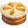 Carrot Cake | Pastry Oven | Carrot × 2; Flour × 4; Egg × 2 | 900 |
| Blackberry Tart | Pastry Oven | 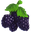 Blackberries × 1; Sugar × 2; Egg × 4 | 120 |
| Butter | Dairy | Cow Milk × 3 | 300 |
| Strawberry Shortcake | Pastry Oven | Strawberry × 4; Flour × 5; Butter × 2 | 3600 |
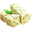 Herb Butter | Dairy | Butter × 1; Chives × 1 | 300 |
| Peach Yogurt | Dairy | Peach × 2; Goat Milk × 1 | 180 |
| Goat Cheese | Dairy | Goat Milk × 2 | 60 |
| Strawberry Milk | Dairy | Cow Milk × 3; Strawberry × 2; Sugar × 1 | 30 |
| Farmers Soup | Stovetop | Goat Milk × 4; Carrot × 5; Tomato × 2 | 120 |
| Strawberry Sundae | Dairy | Strawberry Milk × 2; Mint × 1; Strawberry × 1 | 300 |
| Pan Seared Trout | Stovetop | Trout × 1; Butter × 2 | 300 |
| Pan Fries | Stovetop | Potato × 3; Butter × 1 | 600 |
| Baked Potato | Dinner Oven | Potato × 1 | 900 |
| Stuffed Bass | Dinner Oven | 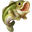 Bass × 1; Flour × 3; Tomato × 3 | 2700 |
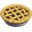 Blackberry Pie | Pastry Oven | Blackberries × 4; Flour × 3; Cow Milk × 1 | 900 |
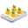 Deviled Eggs | Stovetop | Egg × 6; Chives × 2 | 120 |
| Mint Chip Cookies | Pastry Oven | Mint × 1; Flour × 7; Egg × 7 | 3600 |
| Socks | Loom | Wool × 4 | 7200 |
| Trousers | Loom | Wool × 6 | 1200 |
| Prized Cow Feed | Windmill / Windmill Children | Wheat × 3; Apple × 2; Carrot × 3 | 300 |
| Loaded Baked Potato | Dinner Oven | Baked Potato × 2; Chives × 3; Butter × 2 | 14400 |
| Prized Sheep Feed | Windmill / Windmill Children | Tomato × 3; Peach × 1; Potato × 2 | 300 |
| Honey Butter | Dairy | Honeycomb × 2; Butter × 2 | 180 |
| Granola | Stovetop | Honeycomb × 1; Wheat × 5; Strawberry × 4 | 420 |
| Blanket | Loom | Wool × 3 | 600 |
| Beeswax Candle | Craft Workstation | Honeycomb × 4 | 1200 |
| Prized Horse Feed | Windmill / Windmill Children | Wheat × 3; Peach × 1; Apple × 4 | 300 |
| Tin Button | Craft Workstation | Tin × 1 | 300 |
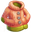 Jacket | Loom | Wool × 3; Tin Button × 3 | 120 |
| Prized Chicken Feed | Windmill / Windmill Children | Corn × 2; Strawberry × 2; Wheat × 3 | 300 |
| Mac And Cheese | Dinner Oven | Goat Cheese × 3; Egg × 6; Flour × 6 | 1800 |
| Copper Button | Craft Workstation | Copper × 1 | 900 |
| Yarn Doll | Dollmaking Table | Wool × 4 | 180 |
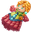 Raggety Doll | Dollmaking Table | Yarn Doll × 1; Wool × 2; Quartz × 2 | 180 |
| Ale Mug | Craft Workstation | Clay × 6 | 3600 |
| Lemon Yogurt | Dairy | Lemon × 2; Goat Milk × 4 | 600 |
| Lemon Scented Candle | Craft Workstation | Beeswax Candle × 1; Lemon × 5; Clay × 3 | 120 |
| Corn Husk Doll | Dollmaking Table | Corn × 8 | 10800 |
| Prized Pig Feed | Windmill / Windmill Children | Carrot × 3; Potato × 2; Strawberry × 2 | 900 |
| Overalls | Loom | Wool × 2; Trousers × 1; Copper Button × 2 | 900 |
| Ornate Stein | Craft Workstation | Ale Mug × 1; Quartz × 2; Clay × 2 | 600 |
| Teddy Bear | Dollmaking Table | Socks × 2; Wool × 4; Tin Button × 3 | 2700 |
| Blueberry Granola Muffin | Pastry Oven | Blueberries × 3; Granola × 2; Sugar × 2 | 720 |
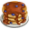 Blueberry Pancakes | Stovetop | Blueberries × 2; Flour × 3; Cow Milk × 5 | 300 |
| Glass Horse | Glassworks | Quartz × 8; Copper × 1 | 7200 |
| Jar | Glassworks | Quartz × 1 | 120 |
| Strawberry Jam | Juice Maker | Jar × 1; Strawberry × 8; Sugar × 3 | 3600 |
| Blackberry Jelly | Juice Maker | Jar × 1; Blackberries × 5; Sugar × 2 | 180 |
| Scone | Pastry Oven | Flour × 5; Butter × 3 | 360 |
| Bottle | Glassworks | Quartz × 1 | 120 |
| Lemonade | Juice Maker | Bottle × 1; Lemon × 5 | 300 |
| Pear Juice | Juice Maker | Bottle × 1; Pear × 5 | 600 |
| Pear Preserves | Juice Maker | Jar × 1; Pear × 3; Sugar × 1 | 2700 |
| Prized Goat Feed | Windmill / Windmill Children | Carrot × 3; Apple × 2; Honeycomb × 2 | 300 |
| Gelato | Dairy | Blueberries × 4; Cow Milk × 4; Egg × 6 | 14400 |
| Grape Juice | Juice Maker | Bottle × 1; Red Grapes × 2 | 300 |
| Blueberry Jam | Juice Maker | Jar × 1; Blueberries × 5; Sugar × 2 | 900 |
| Pinot Noir | Winery | Bottle × 1; Red Grapes × 6 | 21600 |
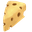 Swiss Cheese | Dairy | Cow Milk × 4 | 720 |
| Tomato Juice | Juice Maker | Bottle × 1; Tomato × 9 | 7200 |
| Chardonnay | Winery | Bottle × 1; White Grapes × 3 | 14400 |
| Rose Wine | Winery | Bottle × 1; White Grapes × 2; Red Grapes × 2 | 1200 |
| Trout Souflee | Dinner Oven | Pan Seared Trout × 2; Flour × 4; Chives × 1 | 3600 |
| Apple Cider | Winery | Bottle × 1; Apple × 10 | 600 |
| Champagne | Winery | Bottle × 1; White Grapes × 6 | 28800 |
| Brie Cheese | Dairy | Cow Milk × 6 | 1200 |
| Ship In A Bottle | Glassworks | Bottle × 1; Tin × 2; Wool × 1 | 21600 |
| Lobster Mac And Cheese | Dinner Oven | Mac And Cheese × 1; Lobster × 1 | 7200 |
| Clam Chowder | Cove Kettle | Clam × 1; Corn × 5; Potato × 2 | 600 |
| Porcelain Doll | Dollmaking Table | Raggety Doll × 1; Clay × 6; Pearl × 1 | 1200 |
| Salmon Bisque | Cove Kettle | Salmon × 1; Potato × 6; Chardonnay × 1 | 1800 |
| Fish And Chips | Beachfront Grill | Salmon × 2; Pan Fries × 2 | 420 |
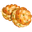 Crab Cakes | Beachfront Grill | Crab × 4; Egg × 5; Flour × 5 | 240 |
| Fish Bowl | Glassworks | Quartz × 5; Pearl × 1; Clam × 1 | 900 |
| Pepper Poppers | Beachfront Grill | Mixed Peppers × 8; Goat Cheese × 3; Flour × 3 | 60 |
| Cajun Crab | Cove Kettle | Crab × 4; Mixed Peppers × 5; Pinot Noir × 1 | 540 |
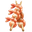 Shrimp Skewers | Beachfront Grill | Shrimp × 4; Honey Butter × 3; Lemon × 2 | 900 |
| Shrimp Gumbo | Cove Kettle | Shrimp × 3; Mixed Peppers × 7; Tomato Juice × 1 | 600 |
| Seafood Creole | Cove Kettle | Crab × 3; Clam × 3; Shrimp Gumbo × 1 | 300 |
| Wind Chime | Glassworks | Quartz × 4; Copper × 1; Wool × 1 | 28800 |
| Smoked Salmon | Dinner Oven | Salmon × 1; Herb Butter × 2 | 14400 |
| Shovel | Toolshed | coin × 10 | 28800 |
| Barn Nail 01 Fair LT fallback | CountyFair 01 | speedseed × 8; elbowgrease × 8 | — |
| Barn Padlock 01 Fair LT fallback | CountyFair 01 | speedseed × 8; elbowgrease × 8 | — |
| Barn Nail 01 Fair LT | CountyFair 01 | speedseed × 8; elbowgrease × 8 | — |
| Barn Padlock 01 Fair LT | CountyFair 01 | speedseed × 8; elbowgrease × 8 | — |
| Pets Treat Fair LT | CountyFair 01 | speedseed × 20; elbowgrease × 20 | — |
| Exploration Energy Fair LT | CountyFair 01 | speedseed × 20; elbowgrease × 20 | — |
| Mineral 01 Fair LT | CountyFair 01 | speedseed × 5; elbowgrease × 5 | — |
| Card Collection Pack 3 star golden Fair LT | CountyFair 01 | Stamp Rare × 5 | — |
| Card Collection Pack 4 star golden Fair LT | CountyFair 01 | Stamp Rare × 5; Blue Ribbon × 5 | — |
| Card Collection Pack 5 star golden Fair LT | CountyFair 01 | Stamp Rare × 10; Blue Ribbon × 10; diamondglove × 10 | — |
| GladeWaitTime Level1 Fair LT | CountyFair 01 | speedseed × 10 | — |
| GladeWaitTime Level2 Fair LT | CountyFair 01 | speedseed × 10; elbowgrease × 5 | — |
| GladeWaitTime Level3 Fair LT | CountyFair 01 | speedseed × 8; elbowgrease × 8 | — |
| PondWaitTime Level1 Fair LT | CountyFair 01 | speedseed × 20; elbowgrease × 20 | — |
| PondWaitTime Level2 Fair LT | CountyFair 01 | speedseed × 20; elbowgrease × 20 | — |
| PondWaitTime Level3 Fair LT | CountyFair 01 | speedseed × 20; elbowgrease × 20; diamondglove × 10 | — |
| MineWaitTime Level1 Fair LT | CountyFair 01 | speedseed × 20; elbowgrease × 20 | — |
| MineWaitTime Level2 Fair LT | CountyFair 01 | speedseed × 20; elbowgrease × 20 | — |
| MineWaitTime Level3 Fair LT | CountyFair 01 | speedseed × 20; elbowgrease × 20 | — |
| PierWaitTime Level1 Fair LT | CountyFair 01 | speedseed × 20; elbowgrease × 20 | — |
| PierWaitTime Level2 Fair LT | CountyFair 01 | speedseed × 20; elbowgrease × 20 | — |
| PierWaitTime Level3 Fair LT | CountyFair 01 | speedseed × 20; elbowgrease × 20; diamondglove × 10 | — |
| OldMillWaitTime Level1 Fair LT | CountyFair 01 | speedseed × 20; elbowgrease × 20 | — |
| OldMillWaitTime Level2 Fair LT | CountyFair 01 | speedseed × 20; elbowgrease × 20 | — |
| OldMillWaitTime Level3 Fair LT | CountyFair 01 | speedseed × 20; elbowgrease × 20; diamondglove × 10 | — |
| Barn Nail Fair | CountyFair 01 | Yellow Ribbon × 8 | 3 |
| Coin Fair | CountyFair 01 | Yellow Ribbon × 2 | 3 |
| Stamp Common Fair | CountyFair 01 | Yellow Ribbon × 4; Red Ribbon × 1 | 3 |
| Barn Padlock Fair | CountyFair 01 | Yellow Ribbon × 4; Red Ribbon × 5 | 3 |
| Stamp Uncommon Fair | CountyFair 01 | Yellow Ribbon × 15; Red Ribbon × 7; Blue Ribbon × 2 | 3 |
| Stamp Rare Fair | CountyFair 01 | Yellow Ribbon × 10; Red Ribbon × 14; Blue Ribbon × 5 | 3 |
| ZooTokenStamp Fair | CountyFair 01 | key × 40 | 1 |
| Key Fair | CountyFair 01 | Yellow Ribbon × 20; Red Ribbon × 15; Blue Ribbon × 13 | 3 |
| Card Collection Pack 1 star Fair | CountyFair 01 | key × 10 | 3 |
| Card Collection Pack 2 star Fair | CountyFair 01 | key × 20 | 3 |
| Card Collection Pack 3 star Fair | CountyFair 01 | key × 30 | 3 |
| Card Collection Pack 4 star Fair | CountyFair 01 | key × 40 | 3 |
| Card Collection Pack 5 star Fair | CountyFair 01 | key × 50 | 3 |
| Egg Whites | Dairy | Egg × 8 | 180 |
| Lemon Zest | Dairy | Lemon × 6 | 120 |
| Rocking Chair | Craft Workstation | Cedar Wood × 3; Copper × 1 | 900 |
| Whistle | Craft Workstation | Clay × 6 | 720 |
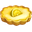 Lemon Tart | Pastry Oven | Lemon Zest × 1; Egg Whites × 1; Sugar × 1 | 420 |
| Crab Souffle | Dinner Oven | Egg Whites × 1; Chives × 3; Crab × 5 | 3600 |
| Pillow | Loom | Duck Feathers × 3; Brass × 1; Wool × 2 | 240 |
| Lemon Gelato | Dairy | Lemon Zest × 2; Goat Milk × 4; Egg × 4 | 1200 |
| Quilt | Loom | Duck Feathers × 2; Wool × 6 | 1800 |
| Cedar Plank Trout | Dinner Oven | Cedar Wood × 1; Lemon Zest × 1; Trout × 2 | 720 |
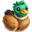 Duck Stuffed Animal | Dollmaking Table | Duck Feathers × 2; Wool × 4 | 900 |
| Birdhouse Item | Craft Workstation | Cedar Wood × 4; Tin × 3 | 7200 |
| Blackberry Custard | Pastry Oven | Blackberries × 5; Egg Whites × 2; Sugar × 2 | 14400 |
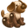 Dog Stuffed Animal | Dollmaking Table | Cedar Wood × 2; Wool × 4 | 1800 |
| Cat Stuffed Animal | Dollmaking Table | Brass × 2; Wool × 4 | 2700 |
| Spyglass | Craft Workstation | Copper × 1; Quartz × 2 | 720 |
| Compass | Craft Workstation | Brass × 1 | 300 |
| Oil Lantern | Craft Workstation | Tin × 2; Corn × 7; Quartz × 1 | 2700 |
| Glass Float | Craft Workstation | Quartz × 1; Wool × 2 | 900 |
| Oars | Craft Workstation | Cedar Wood × 1; Tin × 1 | 480 |
| Mermaid Figurine | Dollmaking Table | Cedar Wood × 1 | 240 |
| Cove Punch | Dairy | Blueberries × 3; White Grapes × 4 | 120 |
| Woolen Scarf | Loom | Wool × 5 | 30 |
| Knit Cap | Loom | Wool × 2 | 180 |
| Dried Fruit | Dinner Oven | Pear × 2; Red Grapes × 6; Sea Salt × 1 | 60 |
| Sea Biscuits | Pastry Oven | Flour × 2; Butter × 1; Sea Salt × 1 | 1200 |
| Smoked Trout | Dinner Oven | Trout × 1; Sea Salt × 1 | 240 |
| Rain Slicker | Loom | 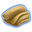 Canvas × 3 | 480 |
| Fishermans Hat | Loom | Tin × 1; Canvas × 1 | 120 |
| Canvas Tote | Loom | Wool × 1; Canvas × 1 | 1500 |
| MothersDay Snorkel Gear | Windmill / Windmill Children | coin × 100 | 300 |
| MothersDay Soy Cake | Pastry Oven | MothersDay Soymeal × 1; Flour × 2 | 900 |
| MothersDay Soy Curry | Stovetop | MothersDay Soymeal × 1; Tomato × 3; Carrot × 2 | 600 |
| MothersDay Pig Breakfast | Dairy | MothersDay Soymeal × 1; Cow Milk × 2 | 300 |
| MothersDay Pig Brunch | Stovetop | MothersDay Soymeal × 1; Egg × 2 | 600 |
| MothersDay Pig Party Pack | Stovetop | MothersDay Soymeal × 1; Wheat × 3; Corn × 2 | 300 |
| MothersDay Pig Dessert Pack | Stovetop | MothersDay Soymeal × 1; Strawberry × 3 | 600 |
| MothersDay Roasted Carrots | Stovetop | MothersDay Sunflower Seeds × 1; Carrot × 2 | 600 |
| MothersDay Sunny Soup | Dinner Oven | MothersDay Sunflower Seeds × 2; Tomato × 3 | 900 |
| MothersDay Celery Soup | Dinner Oven | MothersDay Celery × 1; Farmers Soup × 1 | 900 |
| MothersDay Celery Puree | Stovetop | MothersDay Celery × 1; Butter × 1 | 900 |
| MothersDay Crunchy Salad | Stovetop | MothersDay Celery × 1; MothersDay Sunflower Seeds × 2; Carrot × 2 | 300 |
| MothersDay Sunflower Souffle | Pastry Oven | MothersDay Sunflower Seeds × 1; Buttermilk Biscuit × 2 | 1200 |
| MothersDay Sunny Eggs | Stovetop | MothersDay Sunflower Seeds × 1; Deviled Eggs × 1; MothersDay Celery × 1 | 900 |
| MothersDay Crispy Fries | Dinner Oven | MothersDay Bread Crumble × 2; Pan Fries × 1 | 600 |
| MothersDay Piggy Frittata | Stovetop | MothersDay Bread Crumble × 2; Egg × 3; Tomato × 3 | 900 |
| MothersDay Piggy Throw | Loom | MothersDay Piggy Stencil × 2; Wool × 3 | 600 |
| MothersDay Piggy Gratin | Pastry Oven | MothersDay Piggy Stencil × 1; Egg × 3; Baked Potato × 2 | 600 |
| MothersDay Piggy Souffle | Pastry Oven | MothersDay Piggy Stencil × 2; Goat Cheese × 2; MothersDay Bread Crumble × 2 | 1200 |
| MothersDay Piggy Boost | Stovetop | Apple × 3; Peach × 2; MothersDay Bread Crumble × 2 | 1200 |
| MothersDay Sauteed Corn | Stovetop | MothersDay Bread Crumble × 2; Corn × 3; MothersDay Piggy Stencil × 1 | 1500 |
| MothersDay Buckwheat Bread | Pastry Oven | MothersDay Buckwheat × 1; Cow Milk × 2 | 1500 |
| MothersDay Buckwheat Blini | Stovetop | MothersDay Buckwheat × 2; Butter × 1; Chives × 1 | 600 |
| MothersDay Kefir Cheese Biscuit | Dinner Oven | MothersDay Milk Kefir × 2; Buttermilk Biscuit × 3 | 1200 |
| MothersDay Kefir Potato Salad | Dinner Oven | MothersDay Milk Kefir × 2; Potato × 3; Goat Cheese × 1 | 900 |
| MothersDay Buckwheat Noodles | Stovetop | MothersDay Buckwheat × 1; Farmers Soup × 1 | 900 |
| MothersDay Healthy Smoothie | Dairy | MothersDay Milk Kefir × 1; MothersDay Buckwheat × 2; Apple × 3 | 1800 |
| MothersDay Healthy Porridge | Stovetop | MothersDay Milk Kefir × 1; MothersDay Buckwheat × 2; Sugar × 2 | 1800 |
| MothersDay Flax Cookies | Pastry Oven | MothersDay Flaxseed × 2; Butter × 2; Flour × 3 | 1200 |
| MothersDay Kelp Jerky | Stovetop | MothersDay Kelp × 2; Chives × 2 | 1200 |
| MothersDay Kelp Soup | Stovetop | MothersDay Kelp × 2; Farmers Soup × 2 | 900 |
| MothersDay Seaweed Flax Crackers | Pastry Oven | MothersDay Kelp × 1; MothersDay Flaxseed × 1 | 1200 |
| MothersDay Seaweed Dressing | Stovetop | MothersDay Kelp × 1; MothersDay Flaxseed × 1; Honey Butter × 1 | 900 |
| MothersDay Corny Potatoes | Dinner Oven | Baked Potato × 3; Corn × 4; MothersDay Flaxseed × 2 | 1800 |
| MothersDay Health Feed | Stovetop | MothersDay Flaxseed × 2; MothersDay Kelp × 1; Peach × 3 | 1800 |
| MothersDay Pistachio Fruit Mix | Stovetop | MothersDay Pistachio × 3; Apple × 4; Peach × 4 | 1800 |
| MothersDay Super Granola Bar | Stovetop | MothersDay Pistachio × 2; Granola × 2; MothersDay Hickory Nut × 3 | 1200 |
| MothersDay Mixed Nuts | Dinner Oven | MothersDay Pistachio × 2; MothersDay Hickory Nut × 3; Egg × 3 | 1800 |
| MothersDay Cheese Nuts Platter | Dinner Oven | MothersDay Hickory Nut × 3; MothersDay Pistachio × 2; Goat Cheese × 2 | 1500 |
| MothersDay Beak Sharpeners | Pastry Oven | Buttermilk Biscuit × 3; MothersDay Pistachio × 2; Carrot × 2 | 1800 |
| MothersDay Sweet Treat | Dairy | Butter × 2; MothersDay Hickory Nut × 2; Sugar × 2 | 1200 |
| MothersDay Pistachio Milk | Dairy | MothersDay Pistachio × 2; Cow Milk × 3; MothersDay Hickory Nut × 2 | 2100 |
| MothersDay Split Pea Dumpling | Dinner Oven | MothersDay Split Pea × 3; Flour × 2 | 2400 |
| MothersDay Artichoke Souffle | Pastry Oven | MothersDay Artichoke × 2; Goat Cheese × 3; Egg × 3 | 1800 |
| MothersDay Artichoke Soup | Stovetop | MothersDay Artichoke × 2; Tomato × 5; Carrot × 5 | 2100 |
| MothersDay Split Pea Curry | Dinner Oven | MothersDay Split Pea × 2; Tomato × 4; Potato × 5 | 1500 |
| MothersDay Sauteed Artichoke | Dinner Oven | Butter × 2; MothersDay Artichoke × 1; Chives × 2 | 1500 |
| MothersDay Sweet Sheep Feed | Windmill / Windmill Children | Prized Sheep Feed × 3; MothersDay Split Pea × 2; Peach × 4 | 1800 |
| MothersDay Split Pea Fritters | Stovetop | Potato × 3; MothersDay Split Pea × 2; MothersDay Artichoke × 1 | 900 |
| MothersDay Bran Breakfast | Stovetop | MothersDay Bran Flakes × 2; Blackberries × 2; Cow Milk × 3 | 2100 |
| MothersDay Buttered Bran | Pastry Oven | MothersDay Bran Flakes × 2; Honey Butter × 2 | 1800 |
| MothersDay Fiber Breakfast | Pastry Oven | MothersDay Lima Beans × 3; MothersDay Bran Flakes × 2; Strawberry × 5 | 2400 |
| MothersDay Crunchy Egg Salad | Pastry Oven | MothersDay Bran Flakes × 2; MothersDay Lima Beans × 3; Egg × 4 | 2700 |
| MothersDay Honey Sheep Feed | Dairy | Honeycomb × 6; Prized Sheep Feed × 3; MothersDay Bran Flakes × 2 | 2400 |
| MothersDay Lima Bean Soup | Pastry Oven | Farmers Soup × 3; MothersDay Lima Beans × 2 | 2100 |
| MothersDay Bean Coulis | Pastry Oven | MothersDay Bran Flakes × 2; MothersDay Lima Beans × 2 | 2700 |
| MothersDay Sheep Collar | Craft Workstation | MothersDay Sheep Bell × 3; MothersDay Chamois Cloth × 3; Tin × 2 | 3300 |
| MothersDay Sheep Toy | Craft Workstation | MothersDay Sheep Bell × 3; MothersDay Chamois Cloth × 3; Quartz × 3 | 3600 |
| MothersDay Sheep Warmer | Craft Workstation | Jacket × 1; MothersDay Chamois Cloth × 3 | 2400 |
| MothersDay Sheep Post | Craft Workstation | Tin × 3; MothersDay Sheep Bell × 3 | 2700 |
| MothersDay Sheep Hat | Craft Workstation | Wool × 2; MothersDay Chamois Cloth × 4 | 3000 |
| MothersDay Bedazzled Bell | Craft Workstation | Copper × 1; MothersDay Sheep Bell × 3 | 2100 |
| MothersDay Sheep Towel | Craft Workstation | Blanket × 3; MothersDay Chamois Cloth × 3; MothersDay Sheep Bell × 3 | 3000 |
| Krill Potato | Dinner Oven | Krill × 1; Loaded Baked Potato × 1 | 3600 |
| Krill Salad | Stovetop | Krill × 2; Tomato × 4; Mixed Peppers × 10 | 600 |
| Krill Tortilla | Beachfront Grill | Krill × 2; Egg × 3; Potato × 2 | 300 |
| Fish Sauce | Dairy | Krill × 1; Shrimp × 3 | 7200 |
| Krill Fries | Stovetop | Krill × 1; Pan Fries × 2; Water Spinach × 2 | 1800 |
| Seasoned Clams | Cove Kettle | Krill × 1; Clam × 1; Fish Sauce × 1 | 14400 |
| Spinach Bread | Pastry Oven | Water Spinach × 2; Flour × 3; Sea Salt × 1 | 7200 |
| Spinach Salad | Stovetop | Water Spinach × 2; Black Rice × 2; Strawberry × 3 | 600 |
| Spinach Caesar | Stovetop | Water Spinach × 2; Egg × 3 | 1200 |
| Trout and Wilted Spinach | Dinner Oven | Water Spinach × 1; Trout × 1 | 600 |
| Shrimp and Spinach | Dinner Oven | Water Spinach × 2; Shrimp × 10; Fish Sauce × 1 | 1200 |
| Spinach Casserole | Dinner Oven | Water Spinach × 2; Tomato × 3; Potato × 3 | 600 |
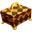 Pen Shell Box | Craft Workstation | Pen Shell × 5; timber × 100 | 14400 |
| Pen Shell Candle | Craft Workstation | Pen Shell × 2; Honeycomb × 4 | 28800 |
| Pen Shell Jar | Glassworks | Pen Shell × 3; Jar × 1 | 7200 |
| Pen Shell Mirror | Glassworks | Pen Shell × 2; Quartz × 2 | 5400 |
| Pen Shell Mermaid | Dollmaking Table | Pen Shell × 3; timber × 30; Wheat × 3 | 1800 |
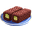 Black Rice Sushi | Beachfront Grill | Black Rice × 1; Crab Cakes × 1 | 240 |
| Black Rice Risotto | Beachfront Grill | Black Rice × 1; Farmers Soup × 1; Salmon × 2 | 720 |
| Black Veggie Risotto | Beachfront Grill | Black Rice × 1; Farmers Soup × 1; Corn × 3 | 900 |
| Black Rice Pudding | Dairy | Black Rice × 1; Cow Milk × 3; Sugar × 2 | 1200 |
| Pickaxe | Toolshed | coin × 100 | 43200 |
| Black Rice and Salmon | Beachfront Grill | Wasabi × 2; Salmon × 1; Black Rice × 2 | 3600 |
| Wasabi Bread | Pastry Oven | Wasabi × 2; Flour × 6 | 1200 |
| Shrimp Pasta | Stovetop | Wasabi × 2; Egg × 3; Shrimp × 8 | 900 |
| Sandwich and Fries | Stovetop | Wasabi Bread × 1; Tomato × 3; Pan Fries × 1 | 300 |
| Sushi and Wasabi | Beachfront Grill | Wasabi × 2; Salmon × 1; Black Rice × 2 | 1200 |
| Krill Cakes | Beachfront Grill | Wasabi × 2; Krill × 2; Egg × 3 | 1500 |
| Oatmeal Cookies | Dinner Oven | Cranberries × 1; Buttermilk Biscuit × 2; Butter × 2 | 1800 |
| Candied Cranberries | Pastry Oven | Cranberries × 4; Sugar × 3 | 600 |
| Cranberry Muffins | Pastry Oven | Cranberries × 2; Granola × 2; Egg × 3 | 900 |
| Sweet Potato Bites | Pastry Oven | Cranberries × 1; Potato × 3; Chives × 2 | 300 |
| Cranberry Jam | Juice Maker | Cranberries × 3; Jar × 1; Sugar × 3 | 3600 |
| Cranberry Scones | Pastry Oven | Cranberries × 2; Scone × 1 | 900 |
| Seafood Bruschetta | Beachfront Grill | Herring × 1; Tomato × 4; Chives × 1 | 1200 |
| Tangy Ceviche | Beachfront Grill | Herring × 2; Lemon × 3; Tomato × 3 | 900 |
| Pot Pie | Dinner Oven | Herring × 3; Carrot × 4; Potato × 5 | 2100 |
| Herring Potato Salad | Stovetop | Herring × 1; Potato × 3; Egg × 3 | 600 |
| Baked Herring | Dinner Oven | Herring × 2; Lemon × 5; Carrot × 2 | 3600 |
| Seafood Chowder | Cove Kettle | Sea Urchin × 3; Tomato × 4; Cow Milk × 2 | 900 |
| Clam Urchin Paella | Stovetop | Sea Urchin × 2; Clam × 2; Lemon Zest × 1 | 1800 |
| Cheesy Urchin Risotto | Cove Kettle | Sea Urchin × 1; Black Rice × 2; Swiss Cheese × 1 | 1200 |
| Sea Urchin Gratin | Cove Kettle | Sea Urchin × 2; Goat Cheese × 2; Sea Salt × 1 | 2400 |
| Sea Urchin Ice Cream | Dairy | Sea Urchin × 2; Goat Milk × 3; Sugar × 3 | 3600 |
| MakeItRainPin | CountyFair 01 | Seashell × 5 | 3 |
| AllMinePin | CountyFair 01 | Seashell × 11 | 3 |
| GoneFishingPin | CountyFair 01 | Seashell × 8 | 3 |
| LuckyAnimalsPin | CountyFair 01 | Seashell × 12 | 3 |
| AncientMarinerPin | CountyFair 01 | Seashell × 14 | 3 |
| ReadyEddiePin | CountyFair 01 | Seashell × 8 | 3 |
| ButteredUpPin | CountyFair 01 | Seashell × 7 | 3 |
| SpringSheepPin | CountyFair 01 | Seashell × 7 | 3 |
| SweetToothPin | CountyFair 01 | Seashell × 6 | 3 |
| EggtasticPin | CountyFair 01 | Seashell × 5 | 3 |
| HolyCowPin | CountyFair 01 | Seashell × 2 | 3 |
Giới hạn xác minh
- Các hàng mô tả cấu hình nền, không khẳng định mọi tài khoản đều đã mở khóa, có thể đặt vô hạn hoặc thấy đúng cấu hình này sau điều chỉnh live-ops.
- Bảng ghi lượng `amount` trong loot cố định. Hàng có ghi “có biểu thức điều kiện” còn phụ thuộc điều kiện; loot ngẫu nhiên, biến thể sự kiện, nâng cấp và công suất có thể làm đầu ra thực tế khác. Bảng công thức liệt kê món đích và chi phí nền, không gộp loot thưởng riêng vào sản lượng chính.
- Atlas có thể chứa icon dùng chung/biến thể thị giác. Tên sprite khớp trường `icon` là căn cứ chọn ảnh; UI thực tế còn có thể dùng altIcon, sprite khác hoặc atlas theo thiết bị.
- Chưa có phiên chạy xác minh trạng thái kho đầy ở từng đối tượng. Tài liệu kho mô tả phần luồng đã có bằng chứng và giữ các nhánh chưa biết riêng.
Nguồn tra cứu
Mã máy tính timer MillStage · tính thời gian nền · hệ số nâng cấp · Cấu hình ProtoMill và ProtoInventoryItem · Cách chơi trồng trọt/vật nuôi · Chế biến · Kho và vật phẩm · Phạm vi chưa xác minh
Nối với các hệ khác
26. CÁC NHÁNH MỞ RỘNG
Cách game vận hành · Danh mục chi tiết để đối chiếu
Các nhánh dưới đây trước đây bị gộp dưới mục sự kiện. Phần này ưu tiên hướng dẫn cách chơi có sẵn trong gói; nơi chỉ thấy cấu trúc thì ghi rõ mức suy luận. Nếu một nhánh mới chỉ có cấu trúc, chưa có hướng dẫn cách chơi hoặc bộ thông số cụ thể, phần mô tả được ghi là suy luận từ thiết kế; chưa phải hành vi đã quan sát. Không có số giá, thời gian, tỷ lệ hoặc điều kiện chưa biết được tự điền thêm.
Pets
Thiết kế tách Treats, level, phần thưởng, perks và các mốc jackpot. Từ cấu trúc hiện có có thể hiểu hướng tiến triển là tài nguyên dành cho pet → tiến trình/mức của pet → những quyền lợi và phần thưởng tương ứng. Pet không nên được mô tả như một Cow khác chỉ tạo ra nguyên liệu nông trại theo lượt cho ăn.
Các lớp nội dung còn có accessories, gestures, mua qua stage và Pet Pass. Chúng phục vụ những nhu cầu khác nhau: tùy biến/biểu cảm, vượt một bước tiến triển và quyền lợi theo pass. Một phần thưởng jackpot cũng khác thưởng level thường.
Chưa xác minh người chơi dùng Treats qua thao tác nào, lượng cần mỗi bước, thời gian pet phát triển, điều kiện jackpot, cách nhận perk và hàng dư được xử lý khi kết thúc. Vì vậy chưa có căn cứ viết “cho ăn N lần sẽ lên level” hoặc “mỗi level được một perk”. Đối chiếu nhánh Pets.
Card Collection
Cấu trúc phân biệt thẻ, set, pack và reward. Luồng thiết kế đọc được là nhận/mở pack → có thẻ → tiến triển bộ sưu tập. Cần phân biệt thẻ mới bổ sung bộ và thẻ trùng; chúng có lớp xử lý phần thưởng/quy đổi riêng, không thể coi mọi pack luôn thêm thẻ mới.
Exchange chest là một nhánh đổi thưởng riêng. Ngoài ra còn có boost, phân khúc chọn nội dung, sticker collection và một số thưởng nhân công theo thời hạn. Vì vậy “mở pack” chưa đồng nghĩa đã được mọi lợi ích của cả bộ sưu tập.
Hiện chưa đủ bộ thông số cụ thể để chốt mỗi pack có bao nhiêu thẻ, quy tắc độ hiếm, mức đổi thẻ trùng, điều kiện hoàn thành set và thưởng sau mở lại. Các cơ chế rút bài thưởng thông thường được mô tả ở chương Loot không tự áp cho Card Collection. Đối chiếu Card Collection.
Battle Pass
Thiết kế có nhiệm vụ, token tiến trình, các track và milestone. Luồng có thể diễn giải ở mức cấu trúc là làm task → có tiến độ/token → tới mốc → có reward của track đủ điều kiện. Có reward/perk premium và pack kích hoạt, nên đạt một mốc tiến độ không tự chứng minh được nhận toàn bộ phần thưởng premium tại mốc đó.
Cấu trúc còn chuẩn bị việc kích hoạt premium sau, so sánh reward và endless mode. Đó là những bước khác với mua một gói quà đơn lẻ: quyền tham gia track và tiến độ nhiệm vụ được giữ riêng.
Chưa xác minh cách chọn task, token mỗi nhiệm vụ, việc nhận lại các mốc trước khi mua premium, xử lý reward chưa nhận khi hết pass và quyền lợi cuối cùng. Không viết luật hồi thưởng retroactive hoặc bảo toàn token qua mùa nếu chưa có luồng xử lý thực tế/bằng chứng chạy. Đối chiếu Battle Pass.
Garden Café
Nhánh này có session, customer wait, order và supplies, khác việc chọn một công thức rồi chờ như workshop thường. Cấu trúc chuẩn bị một phiên phục vụ với số đơn/thời gian riêng và nguồn tiếp tế để tham gia. Có cả thời gian chờ giữa phiên và lựa chọn trả chi phí bỏ qua một số chờ đợi.
Nội dung đơn được tách thành hoa, chậu, trang trí, màu sắc và câu chữ yêu cầu. Có thể hiểu đây là hệ ghép đơn theo nhiều thành phần, không phải mọi khách chỉ yêu cầu một nông sản. Những thành phần có dữ liệu chọn/rơi và cửa hàng mở khóa/nâng cấp riêng.
Progress, tiền Café và boost tạo lớp tiến triển của nhánh. Chưa đủ cấu hình để chốt một đơn đúng được chấm thế nào, phục vụ sai có mất gì, supplies tiêu hao ở bước nào và phiên kết thúc giữ phần nào. Vì vậy chưa trình bày một lịch phục vụ hoặc công thức tối ưu như đã xác nhận. Đối chiếu Garden Café.
Zoo và Zoo Meta
Zoo có lớp đất/vùng, công trình, chuồng, con vật, khách và order board riêng. Trailer có đường nâng cấp, còn token có tuning riêng. Những lớp này cho thấy không thể mô tả Zoo chỉ là thêm một vài con vật sản xuất lên nông trại.
Zoo Meta là một lớp khác: danh mục con vật/habitat, task, điểm, mốc và Animal Coin. Cấu trúc chuẩn bị việc hoạt động theo mục tiêu để tiến triển habitat/milestone và mở các reward tương ứng. Một số liên kết còn chạm tới địa điểm thám hiểm và nhân công/workshop tạm.
Chưa có đủ bộ thông số cụ thể để chốt thứ tự mở chuồng/con vật, khách cho tài nguyên gì, đơn Zoo lấy hàng từ đâu, cách tính điểm và việc đổi Animal Coin. Cũng chưa chứng minh Zoo và Zoo Meta đang chạy cùng lúc hoặc dùng cùng tiến trình. Zoo · Zoo Meta.
Stalls và chuyển đổi máy/quầy
Nhánh quầy có chỗ cho công việc, timer, tăng tốc và liên kết điểm Fair/pass. Một phần cấu trúc dành cho ánh xạ dữ liệu cũ sang mới. Vì vậy cần tách trải nghiệm quầy khỏi việc chỉ thay tên workshop thông thường.
Phần đã đọc sâu hơn là thu riêng/thu tất cả và lưu danh sách công việc. Các tình huống đầy kho có khác biệt được giải thích tại Kho và thu hàng. Chưa đủ dữ liệu feature mới để chốt mọi máy nào chuyển thành quầy, điều kiện chuyển và ảnh hưởng lên công việc đang làm. Đối chiếu Stalls.
Farm Hotel
Thiết kế chia nội dung thành phase và window, có danh sách craft/con vật, currency, boost và nâng cấp theo tier. Đây là một nhánh tiến triển nhiều giai đoạn, không chỉ một đơn yêu cầu một món rồi kết thúc.
Cấu trúc còn có cooldown, hướng dẫn, màn hình kết quả và leaderboard. Chưa chốt trình tự đón/phục vụ, loại hàng từng phase, cách dùng tiền sự kiện, điều kiện đổi phase và reward cuối. Không áp số liệu của County Fair hoặc máy thường để điền các khoảng đó. Đối chiếu Farm Hotel.
Farm Streak
Nhánh này chuẩn bị chuỗi tiến triển bằng order/con vật, phase, cửa sổ thời gian và leaderboard. Có giá mua bằng Keys ở lớp riêng, cho thấy đường tiến triển thường và đường trả phí cần được phân biệt.
Chưa xác minh thế nào là giữ chuỗi hoặc đứt chuỗi, có được nối lại không, mức khó tăng ra sao và chốt thưởng ở thời điểm nào. Không suy “trượt một đơn mất toàn bộ” chỉ từ chữ Streak. Đối chiếu Farm Streak.
Sự kiện chế tạo theo phase
Framework sự kiện chế tạo có timer theo phase, độ khó/tuning điều chỉnh, mystery box và perks. Về tổ chức, mục tiêu không chỉ là làm một món: nguyên liệu/sản phẩm được đặt trong từng giai đoạn với phần thưởng và hạn thời gian của giai đoạn đó.
Chưa đủ dữ liệu để xác nhận món nào phải làm, đủ điểm thì tự chuyển hay cần nhận thưởng, timer hết thì mất/giữ gì và điều chỉnh độ khó ảnh hưởng thế nào. Đối chiếu sự kiện chế tạo.
Sự kiện Co-Op và Community Goals
Co-Op Event chuẩn bị hoạt động theo nhóm. Community Goals có milestone chung và các vật phẩm craft theo phase. Đó là cấu trúc cho việc đóng góp để tiến tới mục tiêu tập thể, khác tiến độ task của riêng một người.
Chưa xác minh thành viên mới vào giữa kỳ được tính thế nào, cần đóng góp tối thiểu hay không, ai được nhận mốc và cách server chốt tổng. Không dùng nguyên luật giúp đơn Co-Op để khẳng định các sự kiện này. Co-Op Event · Community Goals.
Café on Wheels
Trong tutorial đóng gói, người chơi giúp Wally phục vụ khách bằng việc hoàn thành các đơn Café. Menu đổi mỗi ngày; bán đúng đơn để kiếm Café Points. Có mục tiêu ngày bên cạnh mục tiêu tích điểm của cả nhánh.
Hoàn thành mục tiêu đơn trong ngày mở Mocha Magic boost cho một cột đơn, không phải mặc định tăng toàn bộ bảng. Điều này cho người chơi một mục tiêu nhỏ trước mắt để hỗ trợ việc kiếm điểm tiếp theo.
Tutorial nêu mốc 10.000 Café Points để có Café Mogul Badge, còn lời thoại nhận thưởng nói badge có hiệu lực 10 ngày. Đây là thông tin của bộ hướng dẫn này, chưa xác minh áp cho mọi biến thể hiện hành. Còn thiếu giá trị từng đơn, cách reset ngày, thứ tự đơn và kết quả lưu/tải khi boost đang bật. Đối chiếu Café on Wheels.
Tile Search — đổi công cụ, mở ô và đọc manh mối
Hướng dẫn Penguin Pursuit mô tả vòng cụ thể: chế biến đồ sự kiện → đổi ở Diving Workshop lấy Tongs → dùng Tongs dọn các ô trên vùng biển → tìm đủ Showpieces để hoàn thành act. Biến thể Reindeer dùng đồ sự kiện đổi Plows, mở ô Frozen Forest để tìm Toys. Tên công cụ và phần thưởng khác nhau theo mùa; không gộp thành một loại vật phẩm.
Các ô có manh mối giúp người chơi quyết định mở tiếp ở đâu. Tooltip có ba kiểu: món nằm cùng hàng, cùng cột hoặc quanh manh mối. Ở biến thể Reindeer, “quanh” được ghi rõ gồm kề ngang, dọc và chéo. Vì vậy đây là hoạt động dùng gợi ý để chọn ô, không chỉ bấm ngẫu nhiên nhận thưởng.
Tongs có giới hạn mang theo. Khi chạm trần, giao diện yêu cầu dùng bớt trong minigame rồi quay lại nhận thêm. Điều này tạo một vòng quay lại giữa chế biến/đổi công cụ và chơi mở ô; nó khác tổng sức chứa Barn.
Nhánh Penguin có Challenge Mode để thêm reward, và Endless Mode sau các act để kiếm thêm lượt bay. Reward được giới thiệu là dùng lượt bay để hoàn tất ngay cây, vật nuôi và workstation. Những lượt này có hạn sử dụng theo sự kiện. Chưa xác minh số công cụ tiêu hao cho mọi ô, thuật toán bố trí đồ, xử lý thoát giữa lần mở và toàn bộ kết quả nhận thưởng. Đối chiếu Tile Search.
Bauble Shoot — chế biến để có đạn rồi chơi thu mục tiêu
Trong bộ hướng dẫn Majestic Marionette Show, người chơi chế biến đồ sự kiện và đổi ở Puppetry Bolster để lấy Sling Shells. Sau đó dùng Sling Shells trong Grandma’s Storage để bắn/thu Red Yarn Balls, phục hồi dây rối và hoàn thành phase.
Hết Sling Shells thì quay lại hoàn thành các đơn đổi để lấy thêm. Như vậy sản xuất nông trại cung cấp tài nguyên cho minigame; bắn trong minigame lại tạo tiến độ sự kiện. Không phải chỉ đợi một timer là tự hoàn thành cả phase.
Aim Boost được mô tả là kéo dài đường hỗ trợ ngắm; giao diện có bản 1 giờ. Có tooltip về bomb làm bật các đối tượng quanh nó, nhưng chưa đủ nguồn để chốt toàn bộ quy tắc va chạm, nảy hoặc combo. Không tự mô tả thuật toán bắn như đã chơi thử.
Người chơi có thể chọn Challenge Mode để đòi hỏi thêm mục tiêu và nhận reward thêm. Màn xác nhận nói sau khi chọn sẽ ở chế độ đó cho phần còn lại của phase, nên đây không phải nút có thể tự do bật/tắt sau mỗi lượt bắn.
Hướng dẫn nêu 6 phase và reward Feathered Flights; Endless Mode cho phép kiếm thêm lượt. Dùng một lượt bay được giới thiệu là hoàn tất ngay cây, vật nuôi và workstation trên nông trại. Có lời nhắc dùng hết trước khi nhân vật/sự kiện rời đi, và màn cleanup nói đồ sự kiện bị loại bỏ. Đó là mô tả của mùa Marionette trong gói, không phải lịch đang chạy hoặc luật dọn vật phẩm chung toàn game. Đối chiếu Bauble Shoot.
Endless Runner
Cấu trúc chuẩn bị horse, game template, energy, phase và leaderboard. Điều đó cho thấy việc tham gia lượt chơi, chọn nội dung/ngựa, tài nguyên tham gia và xếp hạng là những lớp riêng.
Chưa xác minh điều khiển, va chạm, kết thúc lượt, năng lượng bị trừ lúc nào và cách đổi kết quả lượt chạy sang điểm thưởng. Không lấy quy tắc phổ biến của game chạy vô tận để điền vào. Đối chiếu Endless Runner.
Event Training
Nhánh huấn luyện có phase, timer và nhóm độ khó. Chưa đủ cấu hình để xác nhận hoạt động huấn luyện cụ thể, đầu vào và tiêu chí đạt phase. Các mốc/giá không được suy từ Partner Animals chỉ vì cùng gợi ý tăng trưởng. Đối chiếu Event Training.
Tower of Fortune và TOF Minigame
Cấu trúc tách tiến độ, level và phần thưởng. Vì vậy quyền tham gia lượt chơi và reward theo tiến trình cần đọc riêng, không coi mọi rương trong nhánh là một món quà miễn phí.
Chưa xác minh cách chọn, rủi ro thua, điều kiện rút lui, có mất thưởng đã tích hay không và giá đi tiếp. Không viết các luật này chỉ dựa vào tên Tower of Fortune. Đối chiếu TOF.
Mystery Collection
Thiết kế có evidence/evidence set, tools, bonus mode, reward perks, season pass và social. Về tổ chức tiến trình, thu từng thành phần, hoàn thành bộ và các quyền lợi theo pass là những lớp khác nhau.
Chưa có bằng chứng đủ để chốt cách nhận evidence, xử lý trùng, dùng tool, mở bonus và hoàn thành cả collection. Không áp luật thẻ trùng của Card Collection sang nhánh này. Đối chiếu Mystery Collection.
Farm Diary và Mission Pursuit
Farm Diary chuẩn bị task, milestone và pack. Mission Pursuit có task/chest/reward riêng. Chúng tổ chức hoạt động thành những mục tiêu tiến trình, khác việc mỗi lần craft chỉ nhận sản phẩm của công thức.
Chưa xác minh loại task đang cấp, thời hạn, chu kỳ reset và quyền nhận các mốc. Không gộp Diary/Pursuit thành cùng một Battle Pass hoặc suy mọi mục tiêu đều dùng token. Farm Diary · Mission Pursuit.
Uncharted Voyage
Nhánh chuyến đi có vùng, đảo, order và endless. Cấu trúc chuẩn bị tiến triển qua nội dung địa lý và mục tiêu đơn, nhưng chưa xác minh điều kiện mở vùng, tài nguyên đi/chơi và trạng thái khi một đảo hoàn tất.
Không mặc định dùng toàn bộ luật Doubloons và Special Orders của nhánh Pike đã có tutorial. Cần chứng minh chúng thực sự dùng chung luồng xử lý thực tế trước. Đối chiếu Uncharted Voyage.
Partner Mech
Thiết kế có partner, lời mời/yêu cầu, vùng, bản đồ, lượt di chuyển, booster và thưởng khởi đầu. Nó gợi ra hoạt động cùng đối tác để tiến triển map, không phải chỉ kết bạn hoặc giúp một đơn thông thường.
Chưa xác minh cách chọn/thay partner, ai trả tài nguyên, đồng bộ lượt đi, thời hạn và quyền nhận reward khi một người rời. Những phần này không được suy từ Co-Op Help. Đối chiếu Partner Mech.
Rival Mech
Cấu trúc có đối thủ, checkpoint, mức nỗ lực bot, tiến độ người chơi, mốc và race reward. Nó chuẩn bị một nhánh so tiến độ với đối thủ, nhưng chưa đủ xác minh đối thủ là người thật/bot trong từng trường hợp.
Chưa chốt cách chọn đối thủ, điểm/lượt tiến triển, thời hạn và xử lý hòa/thoát. Tài liệu không gán một thuật toán matching từ tên các bucket. Đối chiếu Rival Mech.
VIP Club, Piggy Bank và các kiểu ưu đãi
VIP Club có tier, benefit, reward và Power Pin; cần phân biệt mức thành viên với từng reward được quyền nhận. Piggy Bank có contract riêng nhưng chưa đủ bằng chứng về cách tích hoặc mở. Chưa viết lịch quyền lợi hay mức mua bắt buộc cho hai nhánh này.
Ladder Sale, Modular Offers, Sequential Starter Pack, Pick One Sale và BOGO có cấu trúc riêng. Chúng không được gộp thành cùng một lượt mua: ưu đãi theo bậc, pack nhiều thành phần, chuỗi pack và quyền lựa chọn có thể cần các trạng thái khác nhau. Tuy nhiên, tên không đủ để xác nhận các quy tắc thương mại đó đang được áp dụng; thứ tự, giá và reward còn thiếu bộ thông số cụ thể/luồng xử lý thực tế ở nhiều nhánh.
Sweepstake có bucket và reward trang trí, chưa xác minh luật tham gia/chọn thưởng. ZStore Daily Reward và ánh xạ item ZStore được giữ riêng khỏi gói IAP thường. Danh mục cửa hàng chi tiết.
Những nhánh chưa đủ chứng cứ để viết vòng chơi
Megalo Monkey, Boba, Magic Magnus, Short Event và Farm Guest có tên/lớp dữ liệu nhưng chưa đủ bằng chứng cho một mô tả người chơi đầy đủ. Một số có progress/chest/reward, nhưng điều đó chưa xác nhận hành động chính cần làm.
Connect4 có phase/offer/sub-reward nhưng chưa xác minh bàn chơi, luật thắng và cách tiêu hao. Auction, Welcome Wagon, Twice Is Nice, code redemption và Offerwall còn thiếu luồng hoạt động/điều kiện thực tế trong phần đã rà.
Các mục này vẫn xuất hiện trong danh mục chi tiết cùng phần còn thiếu; chưa được viết thành luật chơi bằng phỏng đoán. Những cấu trúc hỗ trợ như Night Mode, thiết lập, thông báo, deep link và chiến dịch quay lại cũng không được cộng như những cơ chế sản xuất mới.
Phạm vi bằng chứng cho các hướng dẫn bổ sung
Café on Wheels, Bauble Shoot, Tile Search và các luồng bổ sung về Pen/Prized/quà Co-Op ở phần chính có câu chữ hướng dẫn trong game để đối chiếu. Chúng không còn bị mô tả là chỉ có tên cấu trúc. Tuy vậy, hướng dẫn có thể thuộc mùa cũ hoặc biến thể; chưa có phiên chạy để xác nhận thông số hiện hành và mọi trường hợp lỗi.
Nguồn hướng dẫn bổ sung giữ nguyên câu chữ và vị trí tra cứu. Các nhánh như Pets, Garden Café và Battle Pass vẫn phải giữ phần chưa biết; không lấy hướng dẫn của minigame đã có để bù vào.
PHỤ LỤC — PHƯƠNG PHÁP & GIỚI HẠN
Bài viết được dựng từ gói phân tích FarmVille2_Mechanics_Reference: dữ liệu cấu hình ProtoDB đã giải mã theo schema IL2CPP ProtoMember — 23.729 bản ghi thuộc 136 loại, 546 schema contract, gom thành 23 nhóm gameplay; 107.659 lượt đối chiếu chuỗi tới ID cấu hình đã biết; 332 tính năng đã rà soát. Bản game mục tiêu chưa từng được chạy thử — mọi kết luận đều từ cấu hình tĩnh và luồng client đã đối chiếu, không phải quan sát lượt chơi trực tiếp.
Quy tắc đọc số liệu
- Thời gian chờ của ProtoMill được giữ nguyên là số thô, chưa xác định đơn vị. Chỉ các trường có tên Seconds/Secs/Mins mới xác lập đơn vị; bảng chuỗi sản xuất đã quy đổi mốc nền sang giây/phút/giờ theo timer native.
- Loot cố định là cấu hình đóng gói, không phải sản lượng quan sát thực tế. Cách engine chọn loot ngẫu nhiên (xác suất, nhánh lồng nhau) vẫn chưa kiểm chứng.
- purchaseCosts trên vật phẩm là cấu hình nguyên liệu công thức, không phải giá thị trường. sellPrice, offerPrice và hardCashPrice là các trường riêng, không dùng thay nhau.
- creationTimeFromScratchSeconds là trường tuning đã lưu trong cấu hình, không phải tổng tính lại hay thời gian thực tế đã trôi.
- Có 10.000 dòng ProtoPlaceholderNames — không phải vật phẩm hay level. Chỉ mục typed có 998 dòng ProtoLevel, không khẳng định số level chơi được hiện tại.
- Các biểu thức RPN (ProtoExpression) được giữ nguyên, chưa đánh giá; thử nghiệm và điều kiện đủ điều kiện (ví dụ D30Override) có thể thay đổi giá trị nền.
Những điểm chưa chốt được
- Đơn vị của ProtoMill.waitTime; kết quả thử nghiệm D30Override và server experiment.
- Chi phí nâng kho thuộc về lúc vào level đó hay lúc vượt qua level đó; yêu cầu XP theo level là tăng dần hay cộng dồn.
- unlockCoins và unlockKeys là hai lựa chọn thay thế hay cộng dồn; thứ tự áp dụng của timeDiscount và craftingTimeMultiplier.
- Lượng xuất theo mẻ của công thức (ví dụ Flour) chưa được mã hóa rõ thành loot cố định; tag phụ của loot ngẫu nhiên và điều kiện kích hoạt expression chưa rõ.
- Công thức sinh đơn cuối cùng, giá cuối và phần thưởng cuối của OrderBoard chưa chốt.
Nguồn & quyền: icon trong bài cắt từ atlas trong gói game; tài sản hình ảnh và thương hiệu FarmVille 2 thuộc về nhà phát hành game. Bài viết chỉ nhằm mục đích nghiên cứu cơ chế, không chứa file thực thi hay dữ liệu nhạy cảm của game.